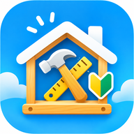

<!doctype html><html lang="ja"><head><meta charset="utf-8"><meta name="viewport" content="width=device-width,initial-scale=1,viewport-fit=cover"><meta name="theme-color" content="#0e594c"><meta name="description" content="DIY初心者のための学習・図面・材料計算・工程管理アプリ"><title>AOZORA. DIY MASTER PRO v20</title>
<link rel="icon" type="image/png" sizes="32x32" href="./favicon-32.png">
<link rel="icon" type="image/png" sizes="48x48" href="./favicon-48.png">
<link rel="apple-touch-icon" sizes="180x180" href="./apple-touch-icon.png">
<link rel="manifest" href="./manifest.webmanifest">
<meta name="apple-mobile-web-app-capable" content="yes">
<meta name="apple-mobile-web-app-status-bar-style" content="default">
<meta name="apple-mobile-web-app-title" content="AOZORA DIY">

<style>
:root{--bg:#f5f7f5;--paper:#fff;--ink:#1c302d;--muted:#62716d;--line:#dce5df;--main:#0d6655;--main2:#0a4b40;--light:#e4f3ed;--orange:#a35c13;--warn:#fff3db;--shadow:0 8px 28px #163e3020}*{box-sizing:border-box}html{scroll-behavior:smooth}body{margin:0;color:var(--ink);background:var(--bg);font-family:system-ui,-apple-system,'Hiragino Kaku Gothic ProN','Noto Sans JP',sans-serif;font-size:15px;line-height:1.6}button,input,select,textarea{font:inherit}button{cursor:pointer}button:disabled{opacity:.45;cursor:not-allowed}a{color:var(--main)}.app{display:flex;min-height:100vh}.side{width:244px;flex:none;background:#113f38;color:#fff;position:sticky;height:100vh;top:0;padding:23px 14px;display:flex;flex-direction:column;overflow:auto}.brand{padding:0 12px 22px}.brand small{font-size:11px;letter-spacing:.15em;color:#bbdfd0}.brand strong{display:block;font-size:24px;line-height:1.3}.brand p{font-size:12px;color:#c9e5d9;margin:5px 0}.nav{display:flex;flex-direction:column;gap:4px}.nav button{background:transparent;border:none;color:#cfe3dc;text-align:left;padding:11px 14px;border-radius:11px;font-weight:650}.nav button.active,.nav button:hover{background:#2c675a;color:#fff}.sidefoot{font-size:11px;color:#bfdbd1;margin-top:auto;padding:22px 12px 8px}.main{width:100%;min-width:0;max-width:1490px;margin:auto;padding:29px 35px 86px}header{display:flex;justify-content:space-between;align-items:center;gap:16px;margin-bottom:23px}.eyebrow{color:var(--main);font-size:12px;font-weight:800;letter-spacing:.08em}h1{font-size:clamp(24px,3.5vw,34px);line-height:1.3;margin:4px 0 5px}h2{font-size:21px;margin:0 0 12px}h3{font-size:17px;margin:4px 0 8px}p{margin:5px 0 11px}.muted{color:var(--muted)}.small{font-size:12px}.grid{display:grid;grid-template-columns:repeat(3,minmax(0,1fr));gap:15px}.grid.two{grid-template-columns:repeat(2,minmax(0,1fr))}.card{background:var(--paper);border:1px solid var(--line);border-radius:17px;padding:20px;box-shadow:0 2px 6px #143e3007;min-width:0}.hero{background:linear-gradient(125deg,#0f6756,#16453d);color:white;padding:30px;border-radius:22px;display:grid;grid-template-columns:1.5fr 1fr;gap:25px;align-items:center;margin-bottom:22px}.hero p{color:#d5eee5}.hero h2{font-size:27px}.button,.ghost,.danger{border:0;border-radius:10px;padding:10px 15px;font-weight:750;min-height:42px}.button{background:var(--main);color:white}.button:hover{background:var(--main2)}.ghost{background:var(--light);color:var(--main2)}.ghost:hover{background:#d4eade}.danger{background:#fce8e7;color:#9c2a20}.hero .button{background:white;color:var(--main2)}.inline{display:flex;gap:9px;align-items:center;flex-wrap:wrap}.between{display:flex;justify-content:space-between;align-items:center;gap:10px;flex-wrap:wrap}.stat{font-size:31px;font-weight:900;line-height:1.15}.pill{display:inline-block;padding:4px 10px;background:var(--light);color:var(--main2);border-radius:20px;font-weight:750;font-size:12px;margin:2px 3px 2px 0}.pill.yellow{background:#fff0d8;color:#814b10}.pill.gray{background:#edf0ed;color:#5b6760}.section{margin-top:25px;margin-bottom:12px}.field{display:flex;flex-direction:column;gap:5px;margin-bottom:13px;font-weight:700;font-size:13px}.field input,.field select,.field textarea,.search{border:1px solid #cbd8d0;background:#fff;border-radius:10px;padding:11px 12px;min-width:0;width:100%;color:var(--ink)}.field textarea{resize:vertical;min-height:92px}.field input:focus,.field select:focus,.field textarea:focus,.search:focus{outline:2px solid #72c3a9;outline-offset:1px}.filters{display:flex;gap:9px;flex-wrap:wrap;margin:0 0 17px}.filters button{border:1px solid var(--line);border-radius:20px;padding:7px 12px;background:#fff;color:var(--ink)}.filters button.on{background:var(--main);color:#fff}.project{display:flex;flex-direction:column;gap:5px}.project .button{margin-top:auto}.iconbig{font-size:35px;line-height:1.4}.progress{height:9px;border-radius:20px;background:#e1e8e2;overflow:hidden;margin:8px 0}.progress span{display:block;height:100%;background:#31a17d;transition:width .2s}.rowline{display:flex;justify-content:space-between;gap:12px;border-bottom:1px solid var(--line);padding:10px 0}.rowline:last-child{border-bottom:none}.tablewrap{overflow:auto}.tbl{width:100%;border-collapse:collapse;font-size:13px}.tbl th{background:#edf4ef}.tbl td,.tbl th{text-align:left;border-bottom:1px solid var(--line);padding:11px 9px;vertical-align:top}.tbl input{max-width:100px;width:100%;padding:7px;border:1px solid var(--line);border-radius:7px}.notice{background:var(--warn);border-left:4px solid #d99836;border-radius:10px;padding:12px 15px;color:#66420f;margin:13px 0;font-size:13px}.info{background:#e9f4f0;border-left:4px solid #37977c;border-radius:10px;padding:12px 15px;margin:12px 0;font-size:13px}.steps{counter-reset:steps;display:flex;flex-direction:column;gap:11px}.step{display:flex;align-items:flex-start;gap:11px;padding:13px;border:1px solid var(--line);border-radius:12px;background:#fff}.step .num{flex:none;background:#e2f0e8;color:#156450;border-radius:100%;width:29px;height:29px;text-align:center;line-height:29px;font-weight:800}.step.done{background:#f0f8f3}.step label{flex:1}.step input{accent-color:var(--main);width:19px;height:19px;margin-top:6px}.svgarea{background:#f3f7f4;border:1px solid var(--line);border-radius:13px;padding:12px}.svgarea svg{display:block;width:100%;max-height:300px}.empty{text-align:center;padding:40px;color:var(--muted)}.quizopt{display:block;padding:12px;margin:7px 0;border:1px solid var(--line);border-radius:10px;cursor:pointer}.quizopt:has(input:checked){border-color:#1d8a72;background:#edf8f2}.quizopt input{margin-right:10px;accent-color:var(--main)}.result{font-size:24px;font-weight:900;color:var(--main)}.back{border:none;background:transparent;padding:0;color:var(--main);font-weight:750;margin-bottom:8px}.footer{text-align:center;font-size:11px;color:var(--muted);padding:27px}.mobilebar{display:none}.badge-count{display:inline-block;background:#e7f1ea;border-radius:10px;padding:2px 7px;font-size:11px}.checklist label{display:flex;gap:10px;align-items:flex-start;margin:11px 0}.checklist input{accent-color:var(--main);width:18px;height:18px;flex:none}.stickyaction{position:sticky;bottom:8px;display:flex;gap:8px;background:#ffffffeb;padding:8px;border:1px solid var(--line);border-radius:12px;backdrop-filter:blur(10px);box-shadow:var(--shadow)}.printonly{display:none}@media(max-width:1050px){.side{width:205px}.main{padding:25px 18px}.grid{grid-template-columns:repeat(2,minmax(0,1fr))}}@media(max-width:700px){.app{display:block}.side{display:none}.main{padding:20px 14px 98px}.grid,.grid.two,.hero{grid-template-columns:1fr}.hero{padding:23px}.hero h2{font-size:23px}.mobilebar{display:flex;position:fixed;bottom:0;left:0;right:0;z-index:10;background:#fff;border-top:1px solid var(--line);justify-content:space-around;padding:7px 1px max(8px,env(safe-area-inset-bottom))}.mobilebar button{border:none;background:transparent;color:#586760;font-size:10px;display:flex;flex-direction:column;align-items:center;gap:0;padding:4px 6px}.mobilebar button b{font-size:18px}.mobilebar button.active{color:var(--main);font-weight:850}.card{padding:17px}header{align-items:flex-start}.grid.two{gap:12px}}@media print{body{background:#fff}.side,.mobilebar,.noprint,button,.footer{display:none!important}.main{padding:0;max-width:none}.card{break-inside:avoid;box-shadow:none}.printonly{display:block}h1{font-size:20px}.hero{color:#000;background:#fff}}
</style><style>
@keyframes v19Arrive{from{opacity:.24;transform:translateY(-15px)}to{opacity:1;transform:translateY(0)}}.v19-new{animation:v19Arrive .7s ease-out both;transform-box:fill-box;transform-origin:center}@media(prefers-reduced-motion:reduce){.v19-new{animation:none}}#v19-assembly{scroll-margin-top:20px}#v19-assembly input[type=range]{width:100%}
</style></head><body><div class="app"><aside class="side"><div class="brand"><small>AOZORA.</small><strong>DIY MASTER<br>PRO</strong><p>初心者から作品完成まで</p></div><nav id="desktopNav" class="nav"></nav><div class="sidefoot">v5.0 / ローカル保存対応<br>© AOZORA.</div></aside><main class="main" id="main"></main></div><nav class="mobilebar" id="mobileNav"></nav><script>
'use strict';
const NAV=[['home','⌂','ホーム'],['learn','▤','学習'],['projects','▣','作品'],['design','▱','設計'],['layout','▥','木取り'],['view3d','◇','3D確認'],['guide','☷','施工ガイド'],['advisor','✦','DIY相談'],['calc','▦','計算'],['tools','⚒','工具'],['quiz','✓','テスト'],['records','◷','記録'],['mydesigns','▧','保存設計'],['customcut','▤','自由木取り'],['shopping','🛒','購入リスト'],['settings','⚙','設定']];
const LESSONS=[
['安全','DIYを始める前の安全', 'ゴーグル、作業に適した手袋、粉じん対策、換気、周囲の人の動線を確認します。回転工具の近くでは巻き込まれる手袋や衣服を避け、メーカーの指示を優先します。','作業前に電源・コード・刃の固定を確認する。','不安な加工は無理をせず専門家に依頼する。'],
['安全','絶対に自己判断しない作業','住宅の電気配線、ガス配管、構造壁の撤去、防水層の貫通などは重大事故に直結します。法令上資格が必要な作業もあります。','コンセント移設や配線変更は有資格者に確認する。','石綿の可能性がある建材は調査せず切断・研磨しない。'],
['安全','壁の裏側を調べる','壁を開ける・穴をあける前に配線、配管、下地、建物の図面を確認します。下地探し器だけで配線や配管の不存在を証明できません。','不明な壁は穿孔しない。','石膏ボード単独に重い物を固定しない。'],
['計測','メジャーと墨付け','材料の実寸を計り、同じ基準端から測定します。芯線ではなく切り落とす側に印を付けると誤差を防ぎやすくなります。','2回測ってから切る。','木材には反り・厚みのばらつきがある。'],
['計測','水平・垂直・直角','水平器で水平と垂直を確認し、差し金で直角を出します。対角線が等しいことも矩形確認の目安です。','製作台が水平か先にチェック。','床・壁そのものが直角とは限らない。'],
['計測','図面の読み方','幅W、奥行D、高さH、板厚tを共通単位mmで管理します。加工後の寸法、材料取り寸法、完成外寸を区別します。','板厚を含む寸法関係を確認する。','刃幅のロスを材料取りに加える。'],
['木工','木材の種類を知る','SPFは扱いやすい一方で節や反りがあります。合板は比較的寸法安定性が高く、MDFは湿気に弱い場合があります。屋外は使用環境に対応する材を選びます。','用途と屋内外で材料を選択。','保護処理なしの屋内材を屋外に使わない。'],
['木工','のこぎりの基本','材料を確実に固定し、切断線の外側を少しずつ切ります。刃の経路に手を置きません。切断途中の材料の落下にも注意します。','刃から手を離す。','初心者は購入店のカットサービスを活用。'],
['木工','下穴とビス締め','ビス径や木材に応じて下穴を検討し、端割れを防ぎます。締めすぎはネジ山を傷めるのでトルクを調整します。','端材で下穴と締付を練習する。','ねじの長さが相手材を貫通しないか確認。'],
['木工','接着とクランプ','接着面を清潔にし、適した木工用接着剤を薄く均一に塗り、クランプで圧着します。硬化時間は製品表示に従います。','はみ出した接着剤を処理。','接着剤だけで荷重支持できると決めつけない。'],
['木工','やすりがけの順序','粗い番手から細かい番手へ段階的に進めます。粉じんが発生するため集じんと呼吸保護具を使用します。','木目に沿って研磨する。','塗装前に粉を取り除く。'],
['木工','塗料と仕上げ','素材と用途に合う塗料を選びます。製品ラベルとSDSを確認し、換気・火気管理・乾燥時間を守ります。','試し塗りで色と吸い込みを確認。','溶剤系塗料では引火性に注意。'],
['壁','石膏ボードと下地','壁掛け品は重量、荷重方向、下地やアンカーの仕様が重要です。石膏ボード用アンカーの表示耐荷重も実際の壁条件と一致する必要があります。','荷重を伴う設置は適合確認。','テレビなど重量物は専門家に相談。'],
['壁','壁紙の貼り替え基礎','既存の壁紙の状態を確認し、下地の凹凸や浮き、カビ、水分の原因を先に処理します。糊や壁紙は製品指定に従います。','目立たない場所で試す。','漏水のある壁を覆って隠さない。'],
['床','クッションフロア基礎','床の平滑性、含水、施工方法、接着剤適合を確認します。既存床の状態や賃貸規約により施工可能範囲が変わります。','端部と継ぎ目を丁寧に計画する。','施工前に既存建材の安全性を確認。'],
['床','フロアタイル基礎','割付を中心線から検討し、壁際の端材幅を均等にします。伸縮・接着条件・下地はメーカー指示を優先します。','仮並べしてバランス確認。','床暖房対応は製品ごとに異なる。'],
['塗装','養生と下地処理','仕上がりは養生と下地で大きく変わります。汚れ、油分、浮き塗膜を適切に処理し、素材に適合する下塗りを選びます。','周辺設備を確実に養生する。','古い塗膜の研磨は有害物質の可能性を確認。'],
['塗装','刷毛とローラー','隅を刷毛で塗り広い面はローラーを使うと効率的です。薄く複数回塗り、乾燥と重ね塗り時間を守ります。','端材で塗りムラを確認。','塗装中は十分換気する。'],
['外構','屋外木材の耐久性','雨水、地面との接触、紫外線、虫害に配慮し、耐候性のある材料と金物を選びます。','水がたまらない構造にする。','フェンスやデッキ等の安全設計は別途必要。'],
['外構','人工芝の基礎','土の締固め、排水、雑草対策、継ぎ目の向き、端部固定を確認します。排水不良のまま敷くと水たまりや浮きの原因になります。','排水経路を優先する。','地中埋設物の位置を確認。'],
['補修','コーキングの基本','目地の清掃・乾燥・養生・充填・ならしを行います。浴室等では適合する防カビ仕様を選び、乾燥時間を守ります。','古いシールの除去範囲を確認。','防水の要となる箇所は専門家に相談。'],
['補修','ネジ穴と軽微な傷の補修','補修パテを用途別に選びます。下地材の傷と表面仕上げの傷では必要な材料が異なります。','少量で試して硬化後に仕上げる。','構造的な破損はパテで修復できない。'],
['段取り','材料発注と予算の立て方','寸法、数量、カット代、金物、配送費、消耗品を分けて記録します。端材と失敗による予備を計画します。','買う前に材料表を再確認。','相場は変動するため実売価格で再計算。'],
['段取り','片付けと廃材','刃物の収納、電池の取り外し、木くずの清掃、塗料の保管を徹底します。自治体の分別と製品ラベルに従って廃棄します。','子どもやペットから隔離して保管。','溶剤や塗料を排水口に流さない。']
];
const TOOLS=[['計測','メジャー','幅・奥行・高さを測る','固定と巻戻りに注意'],['計測','差し金','直角の墨付け','角部で手を切らない'],['計測','水平器','水平・垂直を調べる','測定面のごみを除去'],['計測','下地探し器','壁の下地の位置の参考','配線・配管の不存在は判断不可'],['切断','手のこ','木材を切る','材料をクランプ固定'],['切断','丸のこ','直線切断','キックバック対策と指導が必要'],['切断','ジグソー','曲線切断','材料を固定し刃の下側にも注意'],['切断','カッター','薄物の切断','刃の進路に手を置かない'],['加工','電動ドリルドライバー','下穴やビス締め','ビットを確実に固定'],['加工','インパクトドライバー','ビス締め','締めすぎ・ねじ折れに注意'],['加工','ドリルビット','穴をあける','材料とビスに適した径'],['加工','クランプ','材料を固定する','締めすぎによる材料破損'],['加工','サンドペーパー','面取り・研磨','粉じん対策'],['加工','サンダー','広い面を研磨','粉じん集じん'],['加工','木工用接着剤','部材の接着','製品別に硬化時間確認'],['塗装','刷毛','狭い場所の塗装','材質と塗料を適合'],['塗装','ローラー','広い面の塗装','飛散防止・換気'],['塗装','マスキングテープ','塗装養生','剥がす時期を製品で確認'],['安全','保護メガネ','飛散物から目を保護','側面保護が必要な作業あり'],['安全','防じんマスク','粉じんの吸入を抑える','用途に合う規格と密着を確認'],['安全','耳栓・イヤーマフ','騒音による負担を軽減','周囲の警告音に注意'],['安全','作業台','材料を安定させる','がたつきがないこと'],['仕上げ','ヘラ','パテやコーキング整形','角で表面を傷つけない'],['仕上げ','コーキングガン','シーリング材の充填','製品の使用条件を守る']];
const PROJECTS=[
['smallbox','木製小物ボックス','🧰','初級','木工',40,2200,'小物を整理できるシンプルな箱。','寸法を決める|木材をカットする|切断面を研磨する|板の仮組みをする|下穴を開けて組み立てる|角を整えて仕上げる'],
['shelf','卓上ミニ棚','📚','初級','木工',70,3500,'机に置く小さな棚。転倒しない場所で使用。','収納物の重さを確認する|完成寸法を決める|板をカットする|切断面を研磨する|下穴の位置を決める|水平を確認して組み立てる|ぐらつきを点検する'],
['rack','スパイスラック','🧂','初級','木工',60,3000,'軽いスパイス瓶を置く小型ラック。','置き場所を測る|瓶の幅と高さを測る|板をカットする|面取りする|木部を接合する|転倒しないか確認する'],
['stand','スマホスタンド','📱','初級','木工',30,800,'端材を使った卓上スタンド。','角度とサイズを考える|端材を選ぶ|カットする|溝加工の安全を確認する|磨いて仕上げる'],
['plant','室内プランターカバー','🪴','初級','木工',90,4200,'鉢を入れる木製カバー。防水容器を内側に使用。','鉢を測る|内寸を決める|板材を用意する|仮組みする|組み立てる|水濡れ対策をする'],
['peg','卓上有孔ボード収納','🗂','初級','収納',50,2800,'工具を掛ける小型の卓上収納。','設置場所を測る|荷重を確認する|板と脚を選ぶ|組み立てる|軽い工具で試す'],
['paint','木製小物の塗り替え','🎨','初級','塗装',90,2500,'小物を安全に養生して塗装。','材質と旧塗膜を調べる|作業環境を整える|養生する|下地処理する|試し塗りする|塗装して乾燥する'],
['wallpaper','壁紙アクセント施工','🧱','中級','内装',180,9000,'下地が健全な壁の壁紙を貼り替える。','壁の状態を確認する|必要な長さを計算する|周囲を養生する|下地を整える|壁紙を貼る|端部を仕上げる'],
['floor','クッションフロア敷き','🏠','中級','内装',240,14000,'床の状態を確認してから施工。','床材の適合確認|面積と割付の計算|家具の移動と清掃|下地処理|仮置き|施工と端部処理'],
['tile','フロアタイル施工','◫','中級','内装',300,21000,'製品の施工基準を守る床材施工。','床下地の確認|割付検討|材料と接着剤の確認|仮並べ|貼付け|端部処理'],
['caulk','洗面台まわりのシール補修','🛁','中級','補修',120,3500,'非構造・非防水要部の軽微なシール補修。','漏水の有無確認|既存材の状態確認|養生|清掃と乾燥|適合材を充填|指定時間硬化'],
['patch','壁の小さな傷補修','🩹','初級','補修',60,1600,'軽微な表面傷をパテで補修。','破損範囲を確認|周囲を清掃|適合パテで補修|乾燥|研磨|仕上げ'],
['grass','庭の人工芝計画','🌿','中級','外構',480,45000,'地面と排水を優先した人工芝計画。','現況と排水確認|面積測定|材料数量計算|整地|防草対策|芝の仮配置|継ぎ目と端部を施工'],
['paintwall','室内壁の水性塗装','🖌','中級','塗装',240,12000,'下地に適した水性塗料で塗装。','既存面を調査|養生|清掃と下地補修|下塗り適合確認|1回目塗り|乾燥|必要な回数を重ね塗り'],
['hooks','軽量フック設置','🪝','中級','収納',45,1500,'壁条件とフック仕様に沿った軽量物収納。','壁の材質と裏側確認|荷重確認|固定器具選定|位置出し|施工|荷重試験'],
['shoe','玄関小物トレー','👟','初級','木工',50,1800,'鍵や小物を置く浅い木製トレー。','外寸決定|板をカット|切断面研磨|仮組み|固定|仕上げ'],
['coaster','木製コースター','☕','初級','木工',35,1000,'端材を活用して作る小物。','材料選定|墨付け|安全にカット|角の面取り|研磨|耐水仕上げ'],
['organize','作業工具収納ケース','🧲','中級','収納',120,6000,'工具の定位置をつくる卓上収納。','工具寸法測定|レイアウト|材料調達|加工|組立|安定性確認'],
['board','ホワイトボード壁掛け計画','📝','中級','収納',75,4300,'壁内確認と適切な固定方式選定が前提。','本体重量確認|壁材と下地調査|配管配線を調査|金物選定|位置決め|施工と点検'],
['flower','ガーデン花壇の縁取り','🌷','中級','外構',240,13000,'地面の配管等を確認して花壇の縁を整える。','埋設物と敷地の確認|形を決める|材料数量確認|地面を整える|縁材を設置|排水確認']
];
const QUESTIONS=[
['木材の切断前に最も大切なのは？',['材料の固定と刃の通り道の確認','力をいっぱい入れる','ゴーグルを外す'],0,'固定と刃の進路確認が基本です。'],['電気配線を移動したい場合は？',['そのまま切断する','適切な資格・専門家に確認する','動画を見れば誰でもできる'],1,'電気工事は資格や法令が関わります。'],['板厚18mmの板を左右に置き、外幅400mmの棚の内幅は？',['400mm','382mm','364mm'],2,'400−18×2＝364mm。'],['壁を穿孔する前に確認するのは？',['裏側の配線・配管・下地','塗料の色だけ','壁紙の柄だけ'],0,'壁の内部状況を確認できない場合は穿孔を控えます。'],['水平を確認する主な道具は？',['水平器','サンドペーパー','刷毛'],0,'水平器は水平・垂直の確認に使います。'],['DIYの塗装で守ることは？',['火気と換気を無視する','製品表示と換気・乾燥時間を守る','厚塗りだけする'],1,'メーカーが定める施工条件が優先です。'],['材料の切断で考える損失は？',['刃幅','板の色','工具のメーカー名'],0,'切断刃が削る幅も材料取りのロスです。'],['石膏ボードに重い物を付けたいときは？',['どんなアンカーでもよい','荷重と壁条件・下地を確認する','テープだけでよい'],1,'耐荷重は壁条件と設置方法に左右されます。'],['木材の面取りの目的は？',['角を安全にして仕上がりを整える','板を濡らす','木材を燃やす'],0,'鋭い角を和らげます。'],['木材のねじ打ちで端割れ対策は？',['適切な下穴','強く叩き込む','接着剤を使わない'],0,'材質やねじ径に応じた下穴を検討します。'],['粉じんが出る作業は？',['集じんと適切な呼吸保護','密閉空間で換気なし','マスクは不要'],0,'粉じんを吸い込まない対策が必要です。'],['材料の寸法を記録する単位は？',['混在でもよい','mmなどに統一する','単位は不要'],1,'単位の統一で入力ミスを減らせます。'],['漏水がある壁をリフォームするなら？',['壁紙で隠す','原因を先に調べ対処する','そのまま塗る'],1,'漏水やカビを隠さないこと。'],['人工芝で重要なのは？',['排水と地面の状態','芝の色だけ','防草シートを全く考えない'],0,'下地と排水が仕上がりに影響します。'],['接着剤の硬化時間は？',['いつでも同じ','説明書で確認','使った直後に荷重を掛ける'],1,'気温や製品ごとに異なります。'],['丸のこ使用時に避けることは？',['適切なガイドを使う','キックバックの確認','刃の進路に手を置く'],2,'重大なけがにつながります。'],['古い建材を切断する場合は？',['有害物質の可能性を確認する','すぐ研磨する','においだけで安全を判断する'],0,'アスベストなどの危険性があります。'],['ねじを締める前には？',['貫通や材料割れを確認する','常に最大トルク','長さは気にしない'],0,'ねじの長さ・位置が重要です。'],['予算に入れるべき費用は？',['材料だけ','材料・金物・送料・消耗品など','工具は全て無料'],1,'見落としやすい諸費用まで確認します。'],['床材の施工前に？',['下地や製品適合を確認する','清掃なしで施工','すぐ水をかける'],0,'下地条件は製品ごとに指定があります。'],['塗装前の大切な作業は？',['清掃・養生・下地確認','乾燥を省略','塗料を混ぜるだけ'],0,'仕上がりに影響します。'],['DIY作業の後は？',['刃物と塗料を適切に保管','子どもの手の届く場所へ','溶剤を排水口へ'],0,'適切な保管と廃棄が必要です。'],['自由に荷重を掛ける棚を作るには？',['見た目だけで判断','構造・固定方法・荷重を検証する','釘一本で十分'],1,'当アプリの簡易図面は耐荷重を保証しません。'],['作業に不安があるときは？',['無理に続ける','作業を中止し詳しい人へ相談','安全装備を外す'],1,'安全を最優先します。']
];
const KEY='aozora_diy_master_pro_v2';
const defaultData=()=>({lessons:[],checks:{},work:{},notes:{},plans:[],quizHistory:[],prices:{board:1900,screw:500,finish:800,cut:1000},design:{type:'shelf',w:500,d:220,h:450,t:18,n:1,price:1900,boardW:910,boardL:1820,screws:500,waste:15},calc:{mode:'paint',w:3,h:2.4,doors:2,coverage:8,coats:2,waste:10,cost:2500,pack:1}});
function load(){try{const d=JSON.parse(localStorage.getItem(KEY));return Object.assign(defaultData(),d||{})}catch{return defaultData()}}let data=load(),screen='home',detail=null,lessonFilter='すべて',projFilter='すべて',quiz={index:0,answers:{},finished:false},search='';
const esc=x=>String(x??'').replace(/[&<>"']/g,c=>({'&':'&amp;','<':'&lt;','>':'&gt;','"':'&quot;',"'":'&#39;'}[c]));const yen=n=>Math.round(n).toLocaleString('ja-JP')+'円';const fmt=n=>Number(n).toLocaleString('ja-JP',{maximumFractionDigits:2});
function save(){try{localStorage.setItem(KEY,JSON.stringify(data))}catch{alert('保存できませんでした。ストレージ残量や閲覧モードを確認してください。')}}
const el=()=>document.getElementById('main');const btn=(s,action,kind='button')=>`<button class="${kind}" onclick="${action}">${s}</button>`;
function navgo(s){screen=s;detail=null;search='';render();window.scrollTo(0,0)}function showProject(id){screen='projects';detail=id;render();window.scrollTo(0,0)}function showLesson(i){screen='learn';detail=i;render();window.scrollTo(0,0)}
function renderNav(){document.getElementById('desktopNav').innerHTML=NAV.map(([id,icon,name])=>`<button class="${id===screen?'active':''}" onclick="navgo('${id}')">${icon} &nbsp; ${name}</button>`).join('');let m=[NAV[0],NAV[2],NAV[3],NAV[4],NAV[8]];document.getElementById('mobileNav').innerHTML=m.map(([id,icon,name])=>`<button class="${id===screen?'active':''}" onclick="navgo('${id}')"><b>${icon}</b>${name}</button>`).join('')}
function heading(name,sub){return `<header><div><div class="eyebrow">AOZORA. DIY MASTER PRO</div><h1>${name}</h1><div class="muted">${sub||''}</div></div><div class="noprint">${btn('⚙ 設定',"navgo('settings')",'ghost')}</div></header>`}
function oldHome(){let progress=Math.round(data.lessons.length/LESSONS.length*100);let workDone=Object.keys(data.work).filter(k=>{let p=PROJECTS.find(x=>x[0]===k);return p&&p[8].split('|').every((_,i)=>data.work[k]?.includes(i))}).length;return `<section class="hero"><div><div class="eyebrow" style="color:#b6e7d7">つくる楽しさを、ゼロから。</div><h2>DIYの「わからない」を<br>「自分でできた！」に変える。</h2><p>学ぶ・設計する・費用を計算する・進捗を記録する。はじめてのDIYを一緒に進める実用アプリ。</p>${btn('学習を始める',"navgo('learn')")}</div><div><div class="stat">${progress}%</div><div>学習完了率</div><div class="progress"><span style="width:${progress}%"></span></div><div class="small">${data.lessons.length} / ${LESSONS.length} 講座 修了</div></div></section><div class="grid"><div class="card"><div class="muted">学習講座</div><div class="stat">${LESSONS.length}<span class="small"> 講座</span></div>${btn('学ぶ →',"navgo('learn')",'ghost')}</div><div class="card"><div class="muted">作品レシピ</div><div class="stat">${PROJECTS.length}<span class="small"> 作品</span></div>${btn('探す →',"navgo('projects')",'ghost')}</div><div class="card"><div class="muted">完成した作品</div><div class="stat">${workDone}<span class="small"> 作品</span></div>${btn('進捗を見る →',"navgo('records')",'ghost')}</div></div><h2 class="section">まずはこの順番で進めよう</h2><div class="grid"><div class="card"><div class="iconbig">🦺</div><h3>① 安全の基本を学ぶ</h3><p class="muted">危険を避ける知識からスタート。</p>${btn('安全講座へ',"showLesson(0)",'ghost')}</div><div class="card"><div class="iconbig">📐</div><h3>② 作品の寸法を決める</h3><p class="muted">簡単な箱・棚のカット寸法を計算。</p>${btn('設計する',"navgo('design')",'ghost')}</div><div class="card"><div class="iconbig">🔨</div><h3>③ 作品を作って記録</h3><p class="muted">手順をチェックして完成へ。</p>${btn('作品を選ぶ',"navgo('projects')",'ghost')}</div></div><div class="notice"><b>安全に関する重要事項</b><br>寸法・材料費・手順は学習用の概算です。荷重、耐震性、壁固定、電気、ガス、構造、防水などの安全設計を保証するものではありません。資格・専門知識が必要な工事は専門家へ。</div>`}
function learn(){if(detail!==null){let a=LESSONS[detail];return heading(a[1],a[0]+' / 第'+(detail+1)+'講')+`<button class="back noprint" onclick="detail=null;render()">← 講座一覧へ</button><div class="card"><span class="pill">${a[0]}</span><h2>${a[1]}</h2><p style="font-size:17px;line-height:2">${a[2]}</p><div class="info"><b>実践ポイント</b><p>${a[3]}</p></div><div class="notice"><b>注意</b><p>${a[4]}</p></div><label class="checklist"><input type="checkbox" ${data.lessons.includes(detail)?'checked':''} onchange="toggleLesson(${detail},this.checked)"> この講座を理解した（学習済みにする）</label><div class="between noprint">${btn('前の講座',`showLesson(${Math.max(0,detail-1)})`,'ghost')}${btn('次の講座',detail<LESSONS.length-1?`showLesson(${detail+1})`:`navgo('quiz')`)}</div></div>`}
let cats=['すべて',...new Set(LESSONS.map(a=>a[0]))];let found=LESSONS.map((a,i)=>({a,i})).filter(({a})=>(lessonFilter==='すべて'||a[0]===lessonFilter)&&a.join(' ').includes(search));return heading('DIY 学習アカデミー','全44講座 / テキスト教材・理解チェック')+`<div class="card" style="margin-bottom:15px"><input class="search" placeholder="講座を検索" value="${esc(search)}" oninput="search=this.value;renderKeepFocus(this)"></div><div class="filters noprint">${cats.map(x=>`<button class="${lessonFilter===x?'on':''}" onclick="lessonFilter='${x}';render()">${x}</button>`).join('')}</div><div class="grid">${found.map(({a,i})=>`<div class="card"><div class="between"><span class="pill">${a[0]}</span>${data.lessons.includes(i)?'<span class="pill">✓ 学習済み</span>':''}</div><h3>第${i+1}講　${a[1]}</h3><p class="muted small">${esc(a[2].slice(0,66))}…</p>${btn('講座を開く',`showLesson(${i})`,'ghost')}</div>`).join('')||'<div class="empty">該当する講座がありません。</div>'}</div>`}
function toggleLesson(i,v){data.lessons=[...new Set(v?[...data.lessons,i]:data.lessons.filter(x=>x!==i))].sort((a,b)=>a-b);save();render()}
function projects(){if(detail!==null){let p=PROJECTS.find(x=>x[0]===detail);if(!p){detail=null;return projects()}let steps=p[8].split('|'),done=data.work[p[0]]||[];return heading(p[1],p[3]+' / '+p[4])+`<button class="back noprint" onclick="detail=null;render()">← 作品一覧へ</button><div class="grid two"><div class="card"><div class="iconbig">${p[2]}</div><h2>${p[1]}</h2><p>${p[7]}</p><span class="pill">目安作業時間：${p[5]}分</span><span class="pill yellow">概算：${yen(p[6])}〜</span><div class="notice">費用は参考値で実売価格ではありません。寸法・材料・環境で大きく変化します。安全基準や耐荷重は個別確認が必要です。</div><label class="field">メモ<textarea id="projectnote" placeholder="材料、必要な道具、次の作業など" oninput="setNote('${p[0]}',this.value)">${esc(data.notes[p[0]]||'')}</textarea></label>${p[0]==='shelf'||p[0]==='smallbox'?btn('寸法設計へ',`data.design.type='${p[0]==='smallbox'?'box':'shelf'}';save();navgo('design')`,'ghost'):''}</div><div class="card"><div class="between"><h2>作業チェックリスト</h2><b>${done.length}/${steps.length}</b></div><div class="progress"><span style="width:${done.length/steps.length*100}%"></span></div><div class="steps">${steps.map((a,i)=>`<div class="step ${done.includes(i)?'done':''}"><div class="num">${i+1}</div><label>${a}<br><span class="small muted">完了したら右をチェック</span></label><input type="checkbox" aria-label="工程${i+1}完了" ${done.includes(i)?'checked':''} onchange="toggleStep('${p[0]}',${i},this.checked)"></div>`).join('')}</div></div></div>`}
let cats=['すべて',...new Set(PROJECTS.map(p=>p[4]))];let found=PROJECTS.filter(p=>(projFilter==='すべて'||projFilter===p[4])&&p.join(' ').includes(search));return heading('作品ライブラリー','20種類のDIYレシピ / 工程チェック・メモ保存')+`<div class="card" style="margin-bottom:15px"><input class="search" placeholder="作品・ジャンルで検索" value="${esc(search)}" oninput="search=this.value;renderKeepFocus(this)"></div><div class="filters noprint">${cats.map(x=>`<button class="${projFilter===x?'on':''}" onclick="projFilter='${x}';render()">${x}</button>`).join('')}</div><div class="grid">${found.map(p=>{let len=p[8].split('|').length,done=(data.work[p[0]]||[]).length;return `<div class="card project"><div class="between"><span class="iconbig">${p[2]}</span><span class="pill ${p[3]==='中級'?'yellow':''}">${p[3]}</span></div><h3>${p[1]}</h3><p class="muted small">${p[7]}</p><div class="small muted">⏱ ${p[5]}分　・　目安 ${yen(p[6])}〜</div><div class="progress"><span style="width:${done/len*100}%"></span></div><div class="small muted">${done}/${len} 工程</div>${btn('作り方・進捗を見る',`showProject('${p[0]}')`,'ghost')}</div>`}).join('')||'<div class="empty">見つかりませんでした。</div>'}</div>`}
function toggleStep(id,i,v){let a=data.work[id]||[];data.work[id]=v?[...new Set([...a,i])].sort((a,b)=>a-b):a.filter(x=>x!==i);save();render()}function setNote(id,s){data.notes[id]=s;save()}
const val=(id)=>Number(document.getElementById(id)?.value);function updateDesign(id,v){data.design[id]=id==='type'?v:Number(v);save();render()}
function designMath(){let d=data.design,w=+d.w,h=+d.h,dep=+d.d,t=+d.t,n=+d.n,inside=w-2*t;let rows=d.type==='shelf'?[['左右側板',h,dep,2],['天板・底板',inside,dep,2],['中棚板',inside,dep,n]]:[['前板・背板',w,h,2],['側板',dep-2*t,h,2],['底板',w-2*t,dep-2*t,1]];rows=rows.filter(a=>a[3]>0);let area=rows.reduce((a,r)=>a+r[1]*r[2]*r[3],0);let stockArea=d.boardW*d.boardL;let rawCount=Math.ceil(area*(1+d.waste/100)/stockArea);let valid=Number.isFinite(area)&&w>2*t&&dep>2*t&&h>t&&[w,h,dep].every(x=>x>0&&x<=2400)&&t>=6&&t<=40&&n>=0&&n<=6&&d.boardW>=100&&d.boardL>=100&&d.boardW<=5000&&d.boardL<=5000&&d.price>=0&&d.waste>=0&&d.waste<=100;return {rows,area,rawCount,valid,inside}}
function drawSvg(){let d=data.design,wide=340,tall=230;let scale=Math.min((wide-80)/d.w,(tall-65)/d.h),w=d.w*scale,h=d.h*scale,x=(wide-w)/2,y=(tall-h)/2;let inner=(d.w-2*d.t)*scale,th=Math.max(d.t*scale,2);let body=`<rect x="${x}" y="${y}" width="${w}" height="${h}" fill="#e8c99b" stroke="#8e6432" stroke-width="2"/><rect x="${x+th}" y="${y+th}" width="${Math.max(0,w-2*th)}" height="${Math.max(0,h-2*th)}" fill="#fff9eb" stroke="#8e6432"/>`;if(d.type==='shelf'){for(let i=1;i<=d.n;i++){let sy=y+th+(h-2*th)*i/(d.n+1);body+=`<rect x="${x+th}" y="${sy}" width="${Math.max(0,inner)}" height="${Math.max(2,th)}" fill="#e8c99b" stroke="#8e6432"/>`}}else{body+=`<rect x="${x+th}" y="${y+th}" width="${Math.max(0,w-2*th)}" height="${Math.max(0,h-2*th)}" fill="#e4b47f" opacity=".5"/>`};return `<svg viewBox="0 0 340 250" role="img" aria-label="寸法の概略正面図"><text x="170" y="15" font-size="12" text-anchor="middle">正面イメージ（比例縮尺）</text>${body}<path d="M ${x} ${y+h+10}v10 M ${x+w} ${y+h+10}v10 M ${x} ${y+h+16}h${w}" fill="none" stroke="#4b6259"/><text x="170" y="${Math.min(247,y+h+30)}" font-size="11" text-anchor="middle">幅 ${d.w}mm</text><text x="${Math.max(12,x-8)}" y="${y+h/2}" font-size="11" text-anchor="end">高さ ${d.h}mm</text></svg>`}
function oldDesign(){let d=data.design,m=designMath();return heading('DIY 寸法設計スタジオ','木工2テンプレート / カットリスト・概算材料量・印刷')+`<div class="grid two"><div class="card noprint"><h2>設計条件</h2><label class="field">作るもの<select id="type" onchange="updateDesign('type',this.value)"><option value="shelf" ${d.type==='shelf'?'selected':''}>卓上ミニ棚（背板なし）</option><option value="box" ${d.type==='box'?'selected':''}>木箱（上部開口）</option></select></label><div class="grid two" style="gap:12px">${[['w','完成外幅 W (mm)',100,2400],['d','完成奥行 D (mm)',80,2400],['h','完成高さ H (mm)',80,2400],['t','板厚 t (mm)',6,40],...(d.type==='shelf'?[['n','中棚枚数',0,6]]:[])].map(([id,label,min,max])=>`<label class="field">${label}<input type="number" id="${id}" value="${d[id]}" min="${min}" max="${max}" step="1" onchange="updateDesign('${id}',this.value)"></label>`).join('')}</div><h3>材料・価格の条件</h3><div class="grid two" style="gap:12px">${[['boardW','板材の幅 (mm)',100,5000],['boardL','板材の長さ (mm)',100,5000],['price','板材1枚の価格 (円)',0,1000000],['waste','予備率 (%)',0,100],['screws','ねじ・金物の概算 (円)',0,1000000]].map(([id,label,min,max])=>`<label class="field">${label}<input type="number" value="${d[id]}" min="${min}" max="${max}" step="1" onchange="updateDesign('${id}',this.value)"></label>`).join('')}</div></div><div class="card"><h2>完成イメージ</h2>${m.valid?`<div class="svgarea">${drawSvg()}</div><div class="info">奥行 ${fmt(d.d)}mm / 板厚 ${fmt(d.t)}mm<br>${d.type==='shelf'?'中棚 '+d.n+' 枚':'上部開口・底板あり'}</div>`:'<div class="notice">寸法・板材サイズ・予備率を確認してください。完成外幅・奥行は板厚2枚分より大きい必要があります。</div>'}<h3>面積ベースの概算</h3><div class="rowline"><span>使用板材面積</span><b>${m.valid?fmt(m.area/1e6)+'㎡':'—'}</b></div><div class="rowline"><span>参考購入枚数（面積÷板面積）</span><b>${m.valid?m.rawCount+'枚':'—'}</b></div><div class="rowline"><span>材料＋金物概算</span><b>${m.valid?yen(m.rawCount*d.price+d.screws):'—'}</b></div><div class="notice"><b>重要：</b>板材枚数は面積による下限目安で、カット割付・刃幅・木目・板方向・必要な板の長さを反映していません。実際には収まらないことがあります。背板なし棚は横揺れ対策・固定設計が別途必要です。耐荷重保証なし。</div></div></div><div class="card" style="margin-top:16px"><div class="between"><h2>カットリスト</h2>${btn('CSV保存',"downloadCut()",'ghost noprint')}</div>${m.valid?`<div class="tablewrap"><table class="tbl"><thead><tr><th>部材</th><th>長さ</th><th>幅</th><th>数量</th></tr></thead><tbody>${m.rows.map(r=>`<tr><td>${r[0]}</td><td>${fmt(r[1])}mm</td><td>${fmt(r[2])}mm</td><td>${r[3]}</td></tr>`).join('')}</tbody></table></div>`:'<p>有効な寸法を設定してください。</p>'}<p class="small muted">突合せ継ぎの簡易モデル。板厚の公差、組立方法、固定金具、刃幅などは図面と別に確認してください。</p><div class="inline noprint">${btn('印刷 / PDF保存','window.print()','ghost')}</div></div>`}
function downloadCut(){let m=designMath();if(!m.valid){alert('寸法を確認してください');return}csv('diy-cut-list.csv',[['AOZORA DIY カットリスト'],['部材','長さmm','幅mm','数量'],...m.rows])}
function calc(){let d=data.calc;let valid=d.w>0&&d.h>0&&d.w<1000&&d.h<1000&&d.waste>=0&&d.waste<=100&&d.cost>=0&&d.coverage>0&&d.coats>0&&d.pack>0&&d.doors>=0;let a=d.w*d.h,b=Math.max(0,a-d.doors),q=d.mode==='paint'?(b*d.coats*(1+d.waste/100)/d.coverage):a*(1+d.waste/100),units=d.mode==='paint'?'L':'㎡',packs=Math.ceil(q/d.pack);return heading('材料計算ツール','塗装量・床材・壁紙・人工芝 / 入力条件に基づく概算')+`<div class="grid two"><div class="card noprint"><h2>計算条件</h2><label class="field">計算種類<select onchange="setCalc('mode',this.value)">${[['paint','塗料'],['floor','床材'],['wallpaper','壁紙（面積換算）'],['grass','人工芝']].map(([id,n])=>`<option value="${id}" ${d.mode===id?'selected':''}>${n}</option>`).join('')}</select></label><div class="grid two" style="gap:12px">${[['w','幅 (m)',.1,999],['h',d.mode==='floor'||d.mode==='grass'?'奥行 (m)':'高さ (m)',.1,999],...(d.mode==='paint'||d.mode==='wallpaper'?[['doors','開口部面積 (㎡)',0,100000]]:[]),...(d.mode==='paint'?[['coverage','塗布面積 (㎡/L・1回)',.1,1000],['coats','塗り回数',1,10]]:[]),['waste','予備率 (%)',0,100],['pack',d.mode==='paint'?'1缶の容量 (L)':'販売1単位の面積 (㎡)',.1,100000],['cost','1販売単位の価格 (円)',0,10000000]].map(([id,label,min,max])=>`<label class="field">${label}<input type="number" value="${d[id]}" min="${min}" max="${max}" step="any" onchange="setCalc('${id}',this.value)"></label>`).join('')}</div></div><div class="card"><h2>計算結果</h2>${!valid?'<div class="notice">有効な数値を入力してください。</div>':`<div class="rowline"><span>基準面積</span><strong>${fmt(d.mode==='paint'?b:a)}㎡</strong></div><div class="rowline"><span>必要量（予備込）</span><strong>${fmt(d.mode==='wallpaper'?Math.max(0,(a-d.doors)*(1+d.waste/100)):q)} ${units}</strong></div><div class="rowline"><span>販売単位数量</span><strong>${Math.ceil((d.mode==='wallpaper'?Math.max(0,(a-d.doors)*(1+d.waste/100)):q)/d.pack)} 単位</strong></div><div class="rowline"><span>概算材料費</span><strong class="result">${yen(Math.ceil((d.mode==='wallpaper'?Math.max(0,(a-d.doors)*(1+d.waste/100)):q)/d.pack)*d.cost)}</strong></div>`}<div class="notice">${d.mode==='paint'?'塗布面積は塗料の製品仕様から入力してください。開口部を引いた単純面積で、凹凸や吸い込みを反映していません。':d.mode==='wallpaper'?'壁紙は幅・柄合わせ・天井高さ・裁断ロスにより必要m数が変わります。ここでは面積のみを計算します。':'形状・裁断・重ね代・端部・下地材・副資材などは別計算です。'}<br>店舗やメーカーの実売価格、施工条件で必ず確認してください。</div>${btn('印刷 / PDF保存','window.print()','ghost noprint')}</div></div>`}
function setCalc(id,v){data.calc[id]=id==='mode'?v:Number(v);save();render()}
function tools(){let cats=['すべて',...new Set(TOOLS.map(x=>x[0]))];let found=TOOLS.filter(t=>t.join(' ').includes(search)&&(projFilter==='すべて'||t[0]===projFilter));return heading('工具と材料の辞典','基本24種類 / 役割・安全な使い方')+`<div class="card" style="margin-bottom:15px"><input class="search" value="${esc(search)}" placeholder="工具名・用途で検索" oninput="search=this.value;renderKeepFocus(this)"></div><div class="filters noprint">${cats.map(x=>`<button class="${projFilter===x?'on':''}" onclick="projFilter='${x}';render()">${x}</button>`).join('')}</div><div class="grid">${found.map(t=>`<div class="card"><span class="pill">${t[0]}</span><h3>${t[1]}</h3><p>${t[2]}</p><div class="notice" style="margin-bottom:0">注意：${t[3]}</div></div>`).join('')}</div>`}
function quizPage(){if(quiz.finished){let ok=QUESTIONS.filter((q,i)=>quiz.answers[i]===q[2]).length;return heading('理解度テスト','44問 / 自己学習用')+`<div class="card"><h2>採点結果</h2><div class="result">${ok} / ${QUESTIONS.length} 問正解（${Math.round(ok/QUESTIONS.length*100)}%）</div><p>${ok>=20?'よく理解できています！':'間違えた項目を復習してみましょう。'}</p>${QUESTIONS.map((q,i)=>`<div class="rowline"><div><b>Q${i+1} ${q[0]}</b><div class="small">${q[3]}</div></div><span class="pill ${quiz.answers[i]===q[2]?'':'yellow'}">${quiz.answers[i]===q[2]?'正解':'不正解'}</span></div>`).join('')}<div class="inline noprint">${btn('もう一度挑戦','resetQuiz()')}${btn('学習に戻る',"navgo('learn')",'ghost')}</div></div>`}
let i=quiz.index,q=QUESTIONS[i];return heading('理解度テスト',`第 ${i+1} / ${QUESTIONS.length} 問`)+`<div class="card" style="max-width:750px"><div class="progress"><span style="width:${i/QUESTIONS.length*100}%"></span></div><span class="pill">Q${i+1}</span><h2 style="margin-top:14px">${q[0]}</h2>${q[1].map((a,j)=>`<label class="quizopt"><input type="radio" name="answer" value="${j}" ${quiz.answers[i]===j?'checked':''} onchange="quiz.answers[${i}]=${j};render()">${a}</label>`).join('')}<div class="between noprint" style="margin-top:22px">${btn('前へ','quiz.index--;render()','ghost')}${btn(i===QUESTIONS.length-1?'採点する':'次へ',i===QUESTIONS.length-1?'finishQuiz()':'quiz.index++;render()')}</div></div>`}
function finishQuiz(){if(Object.keys(quiz.answers).length<QUESTIONS.length){if(!confirm('未回答の問題があります。このまま採点しますか？'))return}let score=QUESTIONS.filter((q,i)=>quiz.answers[i]===q[2]).length;data.quizHistory.unshift({date:new Date().toISOString(),score,total:QUESTIONS.length});data.quizHistory=data.quizHistory.slice(0,30);save();quiz.finished=true;render()}function resetQuiz(){quiz={index:0,answers:{},finished:false};render()}
function records(){let total=PROJECTS.filter(p=>(data.work[p[0]]||[]).length===p[8].split('|').length).length;return heading('DIY 作業記録','学習進捗・作品工程・メモ')+`<div class="grid"><div class="card"><div class="muted">修了講座</div><div class="stat">${data.lessons.length}/${LESSONS.length}</div></div><div class="card"><div class="muted">完成作品</div><div class="stat">${total}/${PROJECTS.length}</div></div><div class="card"><div class="muted">テスト実施</div><div class="stat">${data.quizHistory.length}回</div></div></div><h2 class="section">進行中の作品</h2><div class="card">${PROJECTS.filter(p=>(data.work[p[0]]||[]).length||data.notes[p[0]]).map(p=>{let count=(data.work[p[0]]||[]).length,max=p[8].split('|').length;return `<div class="rowline"><div><b>${p[2]} ${p[1]}</b><div class="small muted">${count}/${max} 工程${data.notes[p[0]]?'・メモあり':''}</div></div>${btn('開く',`showProject('${p[0]}')`,'ghost')}</div>`}).join('')||'<div class="muted">作品の工程をチェックすると、ここに記録されます。</div>'}</div><h2 class="section">テスト履歴</h2><div class="card">${data.quizHistory.map(a=>`<div class="rowline"><span>${new Date(a.date).toLocaleDateString('ja-JP')}</span><b>${a.score}/${a.total} 問</b></div>`).join('')||'<p class="muted">テストの採点結果が保存されます。</p>'}</div>`}
function settings(){return heading('データと設定','端末保存 / バックアップ・復元')+`<div class="grid two"><div class="card"><h2>データのバックアップ</h2><p>学習履歴・作業チェック・メモ・設計条件をJSON形式で保存します。</p><div class="inline">${btn('JSONを書き出す','exportData()')}${btn('JSONを読み込む',"document.getElementById('importFile').click()",'ghost')}</div><input id="importFile" type="file" accept="application/json,.json" hidden onchange="importData(this)"><div class="notice">端末やブラウザのデータ削除で保存内容が消えます。定期的な書き出しを推奨します。異なる端末には自動同期されません。</div></div><div class="card"><h2>設定</h2><p>アプリはサーバーへの送信なしで基本機能が動作します。インターネットが利用できる場所でGitHub Pagesから開いてください。</p>${btn('すべての記録を削除','clearData()','danger')}<p class="small muted">削除後は元に戻せません。</p></div></div><div class="card" style="margin-top:16px"><h2>公開・販売について</h2><p>この版は静的な単一HTMLのため、GitHub Pagesへ公開するとソースコードを閲覧できます。認証や複製防止、課金、サーバー同期は実装していません。販売には別途サーバー側のライセンス認証と契約・決済導入が必要です。</p></div>`}
function blobSave(name,content,type){let url=URL.createObjectURL(new Blob([content],{type}));let a=document.createElement('a');a.href=url;a.download=name;a.click();setTimeout(()=>URL.revokeObjectURL(url),1000)}function csv(name,rows){blobSave(name,'\ufeff'+rows.map(r=>r.map(x=>'"'+String(x).replace(/"/g,'""')+'"').join(',')).join('\r\n'),'text/csv;charset=utf-8')}
function exportData(){blobSave('AOZORA_DIY_backup_'+new Date().toISOString().slice(0,10)+'.json',JSON.stringify({version:2,app:'AOZORA_DIY_MASTER',data},null,2),'application/json')}
async function importData(e){let f=e.files[0];if(!f)return;try{if(f.size>300000){alert('バックアップが大きすぎます');return}let obj=JSON.parse(await f.text());if(obj.app!=='AOZORA_DIY_MASTER'||!obj.data||!Array.isArray(obj.data.lessons)||!Array.isArray(obj.data.plans))throw Error('形式が異なります');if(!confirm('保存中のデータをバックアップで上書きします。よろしいですか？'))return;data=Object.assign(defaultData(),obj.data);data.lessons=data.lessons.filter(i=>Number.isInteger(i)&&i>=0&&i<LESSONS.length);save();navgo('home');alert('復元しました')}catch(err){alert('読み込みに失敗しました: '+err.message)}finally{e.value=''}}
function clearData(){if(confirm('保存済みのすべての記録を削除します。よろしいですか？')){data=defaultData();save();navgo('home')}}
function renderKeepFocus(input){let st=input.selectionStart;let id=input.getAttribute('placeholder');render();let target=[...document.querySelectorAll('.search')].find(x=>x.placeholder===id);if(target){target.focus();target.setSelectionRange(st,st)}}
function render(){renderNav();let pages={home,learn,projects,design,layout,view3d,guide,advisor,calc,tools,quiz:quizPage,records,mydesigns,customcut,shopping,settings};el().innerHTML=pages[screen]()+`<div class="footer">AOZORA. DIY MASTER PRO v4.0　・　安全を最優先に、無理な施工はしないでください。</div>`;document.title='AOZORA. DIY MASTER PRO | '+NAV.find(n=>n[0]===screen)[2]}

/* v3 modular feature extension: layout, projection, guided workflow, offline adviser */
const featureState={rotate:35,tilt:25,kerf:3,edge:0,allowRotate:true,guideId:'shelf',question:'',answer:'',endpoint:'',license:''};
function updateFeature(key,value){featureState[key]=value;render()}
function cutParts(){let m=designMath();if(!m.valid)return [];return m.rows.flatMap((r)=>Array.from({length:r[3]},(_,i)=>({name:r[0]+' '+(i+1),w:r[1],h:r[2]})))}
/* Maximal-rectangles candidate search: deterministic, non-optimal; excludes overlap with kerf spacing. */
function packBoards(parts,sw,sh,kerf,rotate){
 const pending=[...parts].sort((a,b)=>Math.max(b.w,b.h)-Math.max(a.w,a.h)||b.w*b.h-a.w*a.h);
 let boards=[];for(const part of pending){let placed=false;
 for(let k=0;k<=boards.length;k++){
  let board=boards[k]||{pieces:[]};let candidates=[{x:0,y:0}];
  for(const q of board.pieces){candidates.push({x:q.x+q.w+kerf,y:q.y},{x:q.x,y:q.y+q.h+kerf})}
  candidates.sort((a,b)=>a.y-b.y||a.x-b.x);
  for(const pos of candidates){for(const flip of (rotate?[false,true]:[false])){
   let w=flip?part.h:part.w,h=flip?part.w:part.h;
   if(pos.x+w>sw+1e-8||pos.y+h>sh+1e-8)continue;
   if(board.pieces.some(q=>pos.x<q.x+q.w+kerf&&pos.x+w+kerf>q.x&&pos.y<q.y+q.h+kerf&&pos.y+h+kerf>q.y))continue;
   board.pieces.push({...part,x:pos.x,y:pos.y,w,h,flip});if(k===boards.length)boards.push(board);placed=true;break;
  }if(placed)break}
  if(placed)break;
 }
 if(!placed)return {error:'板材に収まらない部材があります：'+part.name+'（'+part.w+'×'+part.h+'mm）。板材サイズや回転条件を見直してください。',boards};
 }
 return {boards};
}
function layout(){let d=data.design,m=designMath();let kerf=Number(featureState.kerf),edge=Number(featureState.edge),usableW=d.boardW-2*edge,usableH=d.boardL-2*edge;
 let ok=m.valid&&Number.isFinite(kerf)&&kerf>=0&&kerf<=20&&Number.isFinite(edge)&&edge>=0&&edge<=100&&usableW>0&&usableH>0;
 let packed=ok?packBoards(cutParts(),usableW,usableH,kerf,featureState.allowRotate):null;
 let svgs=packed?.boards.map((b,i)=>{let scale=Math.min(560/usableW,330/usableH),rw=usableW*scale,rh=usableH*scale;
 return `<div class="card"><h3>板材 ${i+1}（使用可能領域 ${fmt(usableW)} × ${fmt(usableH)} mm）</h3><div class="svgarea"><svg viewBox="0 0 ${rw+12} ${rh+12}" style="max-height:370px" role="img" aria-label="板材${i+1}の割付図"><rect x="6" y="6" width="${rw}" height="${rh}" fill="#f5e8cb" stroke="#91764e" stroke-width="2"/>${b.pieces.map((q,j)=>`<rect x="${6+q.x*scale}" y="${6+q.y*scale}" width="${q.w*scale}" height="${q.h*scale}" fill="${j%2?'#cfe7d7':'#e8c497'}" stroke="#496a5e" stroke-width="1"/><text x="${6+(q.x+q.w/2)*scale}" y="${6+(q.y+q.h/2)*scale}" text-anchor="middle" font-size="${Math.max(6,Math.min(11,10*scale))}" fill="#233b32">${esc(q.name)}</text>`).join('')}</svg></div><div class="small muted">${b.pieces.map(q=>esc(q.name)+'：'+q.w+'×'+q.h+'mm'+(q.flip?'（回転）':'')).join(' / ')}</div></div>`}).join('')||'';
 return heading('木材カット割付','板取り配置を計算 / 刃幅と縁の切り落としを指定')+`<div class="grid two"><div class="card noprint"><h2>割付の条件</h2><p class="muted small">設計ページで設定した部材・板材寸法を使用します。</p><div class="rowline"><span>板材原寸</span><b>${d.boardW} × ${d.boardL} mm</b></div><label class="field">鋸刃の切りしろ (mm)<input type="number" min="0" max="20" step="0.5" value="${kerf}" onchange="updateFeature('kerf',Number(this.value))"></label><label class="field">各辺の余白 (mm)<input type="number" min="0" max="100" step="1" value="${edge}" onchange="updateFeature('edge',Number(this.value))"></label><label class="checklist"><input type="checkbox" ${featureState.allowRotate?'checked':''} onchange="updateFeature('allowRotate',this.checked)">部材を90°回転して配置する（木目方向を固定しない場合）</label><div class="inline">${btn('設計寸法を変更',"navgo('design')",'ghost')}${btn('割付図を印刷','window.print()','ghost')}</div></div><div class="card"><h2>計算結果</h2>${!ok?'<div class="notice">設計または割付条件を確認してください。</div>':packed.error?`<div class="notice">${esc(packed.error)}</div>`:`<div class="stat">${packed.boards.length} 枚</div><p>割付による必要板材枚数</p><div class="rowline"><span>面積だけの参考枚数</span><b>${m.rawCount} 枚</b></div><div class="rowline"><span>板材費</span><b>${yen(packed.boards.length*d.price)}</b></div><div class="rowline"><span>金物込み概算</span><b>${yen(packed.boards.length*d.price+d.screws)}</b></div>`}<div class="notice">この割付は矩形部材の近似配置です。切断順序・鋸刃の実際の経路・機械の切断可能寸法・木目・節・反り・材料保持・治具を検証した製造指示書ではありません。特に板材を貫通する直線切断だけで分離できる保証はありません。購入前に必ず現物寸法と加工方法を確認してください。</div></div></div>${svgs||''}`}
function view3d(){let d=data.design,m=designMath();if(!m.valid)return heading('3D組立イメージ','設計寸法の確認')+'<div class="notice">設計ページで有効な寸法を入力してください。</div>';
 let theta=featureState.rotate*Math.PI/180,tilt=featureState.tilt*Math.PI/180;
 // orthographic isometric-like projection; w/x, depth/y, height/z
 const scale=240/Math.max(d.w,d.d,d.h),c=Math.cos(theta),sn=Math.sin(theta),ct=Math.cos(tilt),st=Math.sin(tilt);
 function proj(x,y,z){return [220+scale*(x*c-y*sn),225+scale*(x*sn*st+y*c*st-z*ct)]}
 function face(v,fill){return `<polygon points="${v.map(p=>proj(...p).map(n=>n.toFixed(1)).join(',')).join(' ')}" fill="${fill}" stroke="#71563b" stroke-width="1.3"/>`}
 function cube(x,y,z,w,dd,h){let a=[x,y,z],b=[x+w,y,z],cc=[x+w,y+dd,z],e=[x,y+dd,z],aa=[x,y,z+h],bb=[x+w,y,z+h],dd2=[x+w,y+dd,z+h],ee=[x,y+dd,z+h];return face([a,b,bb,aa],'#c7935c')+face([b,cc,dd2,bb],'#b57b48')+face([aa,bb,dd2,ee],'#efd3a4')}
 let t=d.t,shape='';if(d.type==='shelf'){shape+=cube(0,0,0,t,d.d,d.h)+cube(d.w-t,0,0,t,d.d,d.h)+cube(t,0,0,d.w-2*t,d.d,t)+cube(t,0,d.h-t,d.w-2*t,d.d,t);for(let i=1;i<=d.n;i++)shape+=cube(t,0,t+(d.h-2*t)*i/(d.n+1),d.w-2*t,d.d,t)}else{shape+=cube(0,0,0,d.w,t,d.h)+cube(0,d.d-t,0,d.w,t,d.h)+cube(0,t,0,t,d.d-2*t,d.h)+cube(d.w-t,t,0,t,d.d-2*t,d.h)+cube(t,t,0,d.w-2*t,d.d-2*t,t)}
 return heading('3D組立イメージ','寸法連動の投影図 / 角度調整')+`<div class="grid two"><div class="card"><h2>${d.type==='shelf'?'ミニ棚':'木箱'}</h2><div class="svgarea"><svg viewBox="0 0 440 440" role="img" aria-label="角度を変更できる立体組立図">${shape}<text x="220" y="425" text-anchor="middle" font-size="14">W ${d.w} × D ${d.d} × H ${d.h} mm</text></svg></div><p class="small muted">奥行も含む寸法比例の簡易投影。工具や部品の干渉、接合強度は評価していません。</p></div><div class="card noprint"><h2>表示角度</h2><label class="field">左右の回転 ${featureState.rotate}°<input type="range" min="-160" max="160" step="5" value="${featureState.rotate}" oninput="featureState.rotate=Number(this.value);document.getElementById('preview3d').innerHTML=view3dCanvas()" onchange="render()"></label><label class="field">見下ろし角 ${featureState.tilt}°<input type="range" min="10" max="75" step="5" value="${featureState.tilt}" onchange="updateFeature('tilt',Number(this.value))"></label><div id="preview3d" class="small muted">スライダーを離すと図を更新します。</div><div class="inline">${btn('正面の寸法図',"navgo('design')",'ghost')}${btn('印刷','window.print()','ghost')}</div><div class="notice">3D CADモデルではなく、寸法に比例する2.5D投影図です。ボルト・金物・強度計算は未対応です。</div></div></div>`}
function view3dCanvas(){return '回転 '+featureState.rotate+'°（図の更新はスライダーを離した時）'}
const GUIDES={
 shelf:{name:'卓上ミニ棚',safety:'転倒・横揺れに注意。背板・筋交い・固定方法は使用条件に応じて別途設計。',stages:[['計画','収納物と完成外寸を決める。重いもの・子どもが登る用途は避ける。'],['採寸','板厚の実測と切断方向を確認し、カット表を印刷する。'],['加工','購入店でのカットを推奨。自分で切る場合は材料固定と刃先の安全を守る。'],['仮組','材料の直角、水平、対角線を確認する。'],['固定','下穴、適切なねじ・接着剤、固定金物を選び組み立てる。'],['仕上','角を丸め、ささくれを取り、製品指示に沿って乾燥させる。'],['検査','がたつき、転倒、横揺れ、角、ねじの突出を確認する。']]},
 smallbox:{name:'木製小物ボックス',safety:'板の切断面とビスの貫通に注意。持ち手を付ける場合は別途固定設計。',stages:[['計画','入れる物の外寸を測り、収納に必要な内寸を確認する。'],['材料','底板と側板の板厚・構造を決める。'],['加工','カット表と木取りを確認し、適切な工具で加工する。'],['仮組','対角線と隙間を確認する。'],['接合','接着剤の指定硬化時間、ねじの下穴を確認する。'],['研磨','ささくれや角をなくす。'],['仕上・点検','仕上げ材の適合性と接合の緩みを確認する。']]},
 grass:{name:'庭の人工芝',safety:'排水・埋設配管・地盤状況を確認。不明な地中は掘らない。',stages:[['現地確認','水たまり、排水勾配、地中埋設物、境界を確認する。'],['採寸','形状を分割して面積を計測し、継ぎ目とロール幅を考慮。'],['下地','施工製品に合う地盤の転圧と排水処理を行う。'],['防草','防草シートの継ぎと端部を施工仕様に沿って処理。'],['敷設','芝目方向を合わせ、重ねや隙間がないよう配置する。'],['端部','ピンや固定材は埋設物を避けて使用する。'],['点検','水はけ、めくれ、突起、つまずきを確認する。']]},
 wallpaper:{name:'壁紙アクセント施工',safety:'既存建材の石綿等が疑われる場合は切削や研磨をしない。漏水やカビの原因を優先調査。',stages:[['調査','既存下地と湿気を確認。'],['数量','幅・高さ・柄リピート・開口位置から必要長さを計画。'],['養生','床と周辺家具を保護する。'],['下地','メーカー指定の方法で平滑化。'],['貼付','中央や基準線から位置を合わせて貼る。'],['仕上','端部とつなぎを押さえる。'],['確認','乾燥後の浮き・剥がれを点検。']]}
};
function guide(){let id=featureState.guideId,g=GUIDES[id],done=data.checks['guide_'+id]||[];return heading('施工ステップガイド','工程・注意点・進捗チェックを一体管理')+`<div class="card noprint"><label class="field">施工ガイドを選ぶ<select onchange="updateFeature('guideId',this.value)">${Object.entries(GUIDES).map(([k,v])=>`<option value="${k}" ${id===k?'selected':''}>${v.name}</option>`).join('')}</select></label><div class="inline">${btn('関連する作品へ',`showProject('${id}')`,'ghost')}${(id==='shelf'||id==='smallbox')?btn('設計へ',"navgo('design')",'ghost'):''}</div></div><div class="notice">${g.safety}</div><div class="card"><div class="between"><h2>${g.name}：${done.length}/${g.stages.length} 工程完了</h2>${btn('印刷','window.print()','ghost noprint')}</div><div class="progress"><span style="width:${100*done.length/g.stages.length}%"></span></div><div class="steps">${g.stages.map(([name,desc],i)=>`<div class="step ${done.includes(i)?'done':''}"><span class="num">${i+1}</span><label><b>${name}</b><p class="muted small">${desc}</p></label><input type="checkbox" aria-label="${name}完了" ${done.includes(i)?'checked':''} onchange="guideCheck('${id}',${i},this.checked)"></div>`).join('')}</div></div>`}
function guideCheck(id,i,checked){let key='guide_'+id,a=data.checks[key]||[];data.checks[key]=checked?[...new Set([...a,i])]:a.filter(x=>x!==i);save();render()}
const ADVICE=[
 {words:['電気','コンセント','配線','分電盤','ブレーカー'],heading:'電気関連の作業',message:'固定配線の変更などは資格・法令・施工条件が関係します。感電・火災リスクがあるため、対象作業を有資格者に確認・依頼してください。通電部の分解手順は案内しません。',jump:'learn'},
 {words:['壁掛け','下地','テレビ','アンカー'],heading:'壁掛けの相談',message:'荷重、取付金具、壁材、柱・間柱の位置、配線配管を確認します。下地センサーだけでは内部の安全は確認できません。大型・高荷重品は専門家による設計・施工を推奨します。',jump:'learn'},
 {words:['棚','ラック','箱','木材','板'],heading:'木工を始める場合',message:'まず完成寸法W・D・Hと板厚tを決めてください。設計スタジオで材料表を作り、木取りページで割付を確認します。最初はカットサービスを活用すると安全で仕上がりが安定します。',jump:'design'},
 {words:['人工芝','庭','整地'],heading:'人工芝の相談',message:'面積だけでなく排水・転圧・芝目方向・ロールの継ぎ目が重要です。埋設物は事前に調べ、地中が不明な場所にピンを打たないでください。',jump:'guide'},
 {words:['壁紙','クロス'],heading:'壁紙の相談',message:'幅と長さだけでなく柄リピート、開口部、下地の浮きや湿気が重要です。施工ガイドで工程を確認してください。',jump:'guide'},
 {words:['塗装','ペンキ','塗料'],heading:'塗装の相談',message:'製品の表示・SDS・換気条件を確認し、下地材との適合性、塗布面積、回数を決めます。塗料計算ツールで概算量を計算できます。',jump:'calc'},
 {words:['費用','価格','予算','材料費'],heading:'費用の相談',message:'寸法と材料単価を入力すると概算費用を確認できます。工具・配送・金物・消耗品・予備材も別途考慮してください。',jump:'calc'}
];
function localAdvice(question){let q=question.trim();if(!q)return '相談内容を入力してください。';let hit=ADVICE.find(x=>x.words.some(w=>q.includes(w)));return hit?hit.heading+'：'+hit.message:'初心者のDIYでは、①作りたいものと用途 ②完成寸法 ③材料 ④使える工具 ⑤設置場所 ⑥安全上の不明点を整理してください。具体的な材料・寸法・場所を入力すると案内を絞り込めます。'}
function advisor(){return heading('DIY相談アシスタント','オフラインで使えるルール型相談 / AI連携は未接続')+`<div class="grid two"><div class="card"><h2>困っていることを入力</h2><label class="field">DIYについての質問<textarea id="question" maxlength="1000" placeholder="例：幅60cmの棚を作りたい。何から始める？">${esc(featureState.question)}</textarea></label><div class="inline">${btn('相談内容を整理する','askAdvice()')}${btn('相談をクリア',"featureState.question='';featureState.answer='';render()",'ghost')}</div><div class="notice">現在はキーワードに応じて教材・設計機能へ誘導するオフライン相談です。生成AIへの送信・回答は行いません。</div></div><div class="card"><h2>相談結果</h2>${featureState.answer?`<div class="info">${esc(featureState.answer)}</div>`:'<p class="muted">質問を入力すると基本的な注意点と次の行動を案内します。</p>'}<div class="inline">${btn('寸法設計',"navgo('design')",'ghost')}${btn('施工ガイド',"navgo('guide')",'ghost')}${btn('材料計算',"navgo('calc')",'ghost')}</div></div></div><div class="card" style="margin-top:16px"><h3>将来的なAI接続について</h3><p>対話型AIの導入には Cloudflare Workers などのサーバー側でAPIキーを保管し、認証・使用量制限・プライバシー対策を構築する必要があります。GitHub Pages上にAPIキーを置かないでください。</p></div>`}
function askAdvice(){featureState.question=document.getElementById('question')?.value||'';featureState.answer=localAdvice(featureState.question);render()}

/* v4: design snapshots, independent custom cutting, purchase planning, extended lessons */
const EXTRA_LESSONS=[
['計画','DIYの作業計画を立てる','目的・設置場所・最大寸法・予算・作業時間・必要工具を最初に整理します。工具や材料の購入前に現場寸法を測定します。','完成状態を紙に描き、材料寸法と工具を照合する。','構造・電気・ガス・防水など資格や専門知識が必要な作業は別途相談する。'],
['計画','寸法の単位と読み違い','図面のmm・cm・mを統一します。建築資材の規格寸法は実寸と異なる場合があります。','全寸法をmmで記録し、実測との差を見直す。','カット前に材料の実寸と厚さを確認する。'],
['計画','公差と組み立て余裕','製作物には加工誤差と設置場所の誤差があります。壁際の家具は逃げ寸法を設定し、無理にはめ込まないよう計画します。','複数箇所で採寸し最小寸法を基準に考える。','家具の転倒・挟み込み・避難導線への影響を確認する。'],
['計画','材料の調達計画','板材・接合金物・接着剤・仕上げ剤・消耗品を一覧にし、輸送可能な長さも確認します。','店頭で材質・厚さ・反り・割れ・寸法を確認する。','重い材料の荷下ろしは補助者を確保する。'],
['木工','木材の木目と反り','無垢材は湿度で伸縮し、合板は構成によって特性が異なります。見た目・用途・価格で選びます。','反りや節の位置を見て切り出す場所を決める。','割れがある部分は荷重部材として安易に使わない。'],
['木工','下穴とネジの基本','材の割れを避けるため下穴を考え、ネジ長さが反対側へ突き抜けないか確認します。適正径はネジ・樹種・メーカーで異なります。','端材で下穴と締め付け具合を試す。','電線・配管のある壁面には事前調査なしにネジを打たない。'],
['木工','クランプ固定の方法','切断・穴あけ・接着では材料が動かないよう作業台に固定します。材料の下に当て木を敷くと傷を軽減できます。','刃の進路とクランプの干渉を確認する。','手で材料を押さえながら電動刃物を使わない。'],
['木工','直角を確認する','差し金で直角を確認し、箱や枠は対角寸法の一致も参考にします。材料自体の曲がりも点検します。','組立途中で対角線を測り、仮固定時に調整する。','斜めのまま強く締め込まない。'],
['木工','接着剤の使い分け','木工用接着剤は材質・温度・塗布量・硬化条件を製品指示で確認します。構造上必要な固定力は接着剤のみで判断しません。','接合面を清掃し、適正時間クランプする。','乾燥前に荷重を掛けない。'],
['木工','研磨の番手の考え方','粗い番手で形を整え、必要に応じて細かくします。仕上げ材やメーカー推奨の番手を確認します。','木目方向に沿い段階的に研磨する。','集じんと換気を優先し粉じんを吸入しない。'],
['内装','壁面の下地確認','石膏ボードだけでは重いものを安全に保持できない場合があります。下地の種類と取付物の荷重条件を確認します。','下地の位置を調べ、取付金物の仕様を確認する。','下地検知器だけで隠れた配線・配管の不存在は保証できない。'],
['内装','床材の施工前チェック','既存床の水平・湿気・傷みを確認し、床材の適用下地と施工条件を守ります。','施工前に下地の清掃と乾燥を確認する。','床下構造に傷みがある場合は表面材だけで隠さない。'],
['内装','壁紙の継ぎ目','下地の凹凸・吸水・汚れが仕上がりに影響します。糊の塗布量やオープンタイムを材料仕様で確認します。','小範囲で貼付けを試してから本施工する。','古い建材の削り取りは石綿などを事前確認する。'],
['内装','シーリングの基本','適用目地幅・下地・プライマー・乾燥条件に合わせて材料を選びます。','メーカー仕様に従い適正な養生と充填を行う。','浴室などの防水重要部位は自己判断で施工しない。'],
['塗装','塗料の使用量','塗る面積、塗回数、塗料の標準塗布量とロス率から数量を算出します。','見込み面積から窓・開口部を差し引く。','製品の適用下地と換気・保護具を確認する。'],
['塗装','塗装前の清掃と養生','油分・ほこり・浮いた旧塗膜を取り除き、塗らない場所を保護します。','小範囲で試し塗りし、密着を確認する。','旧塗膜の研磨には有害物質のリスクがある。'],
['屋外','人工芝の下地','水はけ・地盤の安定・雑草対策が重要です。地盤状況や排水計画により施工方法を見直します。','排水勾配と段差、固定方法を現地で確認する。','公共側溝への流出や隣地への排水を避ける。'],
['屋外','木製品の屋外使用','耐候性・防腐性・水はけに配慮し、地面との直接接触をできるだけ避けます。','屋外用金物と塗装仕様を確認する。','手すり・デッキなど墜落や構造安全に関わる施工は専門家へ。'],
['安全','材料運搬と腰痛予防','長尺材は搬入経路を測り、重量・段差・持ち手・人員を計画します。','切断前の材料を平らで安定した場所に置く。','無理な一人運搬や不安定な脚立での運搬はしない。'],
['安全','作業中止の判断','刃の異音・振動・欠け・工具の過熱・体調不良があれば作業を中止します。','電源を切りプラグを抜いて安全確認する。','原因が不明な工具は再使用せず点検に出す。']
];
LESSONS.push(...EXTRA_LESSONS);
const EXTRA_QUESTIONS=[
['家具設計前に必要な行動は？',['設置場所を複数箇所で実測する','板を先に買って切る','壁の中を見ずに穴を開ける'],0,'設置場所の誤差や巾木などを確認します。'],
['合板の購入前に確認するのは？',['材質・厚み・寸法・反り','表面の色だけ','価格だけ'],0,'実寸と状態を確認します。'],
['下穴の主な目的は？',['割れやねじの入りにくさを軽減する','材料を重くする','塗装を省く'],0,'下穴径は材質・ネジ等に合わせます。'],
['長い木材の運搬では？',['重量と通路を確認し補助者を確保する','長さを無視する','無理に一人で持つ'],0,'転倒や衝突にも注意します。'],
['直角確認に使える方法は？',['差し金と対角寸法の確認','目分量だけ','接着剤の量で調整'],0,'箱型は対角比較も有効です。'],
['木工用接着剤の硬化は？',['製品の指定条件に従う','塗った瞬間に荷重をかける','時間は関係ない'],0,'温度・塗布量も影響します。'],
['重い棚を壁に固定する前に？',['下地と取付金物の許容荷重を確認','石膏ボードだけで十分と決める','配線調査を省く'],0,'隠れた配線や配管にも注意。'],
['床材を敷く前に？',['下地の平滑・湿気・損傷を点検','凹凸をそのままにする','水濡れに関係なく貼る'],0,'下地不良が仕上がりや耐久性を損ないます。'],
['人工芝の屋外施工で重要なのは？',['下地と排水','芝だけ厚くする','排水路を塞ぐ'],0,'地盤や排水条件で工法が変わります。'],
['板材の木取り計算で不足しがちな要素は？',['刃幅と木目方向','材料の名前','工事の天気だけ'],0,'刃幅・向き・欠点を考慮します。'],
['木工作業中に工具から異音がしたら？',['電源を切り点検する','力を入れて続ける','保護具を外す'],0,'再使用前に原因を確認してください。'],
['シーリング材の選び方は？',['下地や用途に適した製品を選ぶ','どの場所も同じ材料','価格が高ければ何でもよい'],0,'防水重要部位は専門施工が必要です。'],
['塗料量の見積りは？',['面積・塗回数・標準塗布量から算出','缶の色だけで決める','壁の高さだけで決める'],0,'開口部やロスも確認します。'],
['丸のこ作業の材料固定は？',['適切な作業台と固定具で保持','片手で直接押さえる','足で押さえる'],0,'工具の取扱説明書を優先します。'],
['収納家具の転倒対策は？',['設置条件に応じた転倒防止を計画','気にしない','重くすれば必ず安全'],0,'壁や床の条件を確認します。'],
['古い建材を研磨する際は？',['有害物質の可能性を調査する','何も確認しない','防護なしで削る'],0,'石綿や鉛塗料等に注意が必要です。'],
['ネジ長さを選ぶ時には？',['反対側への貫通と保持力を考慮','長ければ常に良い','色だけで選ぶ'],0,'用途と母材に合わせます。'],
['塗装前の試し塗りは？',['密着や見た目の確認に役立つ','必ず無駄になる','安全確認と関係ない'],0,'実際の下地で確認します。'],
['家具製作で設計公差を考える理由は？',['誤差や組立余裕のため','寸法を不要にするため','木材を重くするため'],0,'はめ合いと設置場所の誤差に備えます。'],
['加工できないと感じたら？',['施工を止め専門家に相談する','無理に続ける','保護具を外す'],0,'安全確保を優先してください。']
];
QUESTIONS.push(...EXTRA_QUESTIONS);
function ensureV4(){
 if(!Array.isArray(data.savedDesigns))data.savedDesigns=[];
 if(!Array.isArray(data.customParts))data.customParts=[{name:'側板',w:400,h:250,qty:2},{name:'棚板',w:564,h:250,qty:2}];
 if(!data.customSettings)data.customSettings={boardW:910,boardH:1820,price:1900,kerf:3,edge:5,rotate:true};
 if(!Array.isArray(data.shopping))data.shopping=[];
}
ensureV4();
function snapshotDesign(){ensureV4();let name=prompt('保存する設計名（最大40文字）',data.design.type==='shelf'?'オリジナル棚':'オリジナル木箱');if(name===null)return;name=name.trim().slice(0,40);if(!name)return alert('設計名を入力してください');if(data.savedDesigns.length>=50)return alert('設計保存は最大50件です。');data.savedDesigns.unshift({id:Date.now().toString(36)+'-'+Math.random().toString(36).slice(2,7),name,design:structuredClone(data.design),created:new Date().toISOString()});save();navgo('mydesigns')}
function useSnapshot(id){let item=data.savedDesigns.find(x=>x.id===id);if(!item)return;data.design=JSON.parse(JSON.stringify(item.design));save();navgo('design')}
function removeSnapshot(id){if(!confirm('この設計を削除しますか？'))return;data.savedDesigns=data.savedDesigns.filter(x=>x.id!==id);save();render()}
function mydesigns(){ensureV4();return heading('保存した設計','設計を名前付きで保存 / 再編集 / 部材リストに転送')+`<div class="card noprint"><p>設計スタジオで作った棚・木箱の寸法を保存できます。保存時点の条件が記録され、あとから復元できます。</p><div class="inline">${btn('現在の設計を保存','snapshotDesign()')}${btn('設計スタジオへ',"navgo('design')",'ghost')}</div></div><h2 class="section">保存済み ${data.savedDesigns.length} 件</h2><div class="grid">${data.savedDesigns.map(i=>`<article class="card"><h3>${esc(i.name)}</h3><p class="muted small">${esc(i.created.slice(0,10))} · ${i.design.type==='shelf'?'棚':'木箱'}</p><p>${esc(i.design.w)} × ${esc(i.design.d)} × ${esc(i.design.h)} mm</p><div class="inline">${btn('設計を開く',`useSnapshot('${i.id}')`)}${btn('削除',`removeSnapshot('${i.id}')`,'danger')}</div></article>`).join('')||'<div class="card">まだ設計がありません。設計スタジオで保存してください。</div>'}</div>`}
function updateCustom(k,v){ensureV4();data.customSettings[k]=k==='rotate'?!!v:Number(v);save();render()}
function editCustomPart(i,k,v){ensureV4();let p=data.customParts[i];if(!p)return;p[k]=k==='name'?String(v).slice(0,50):Number(v);save();render()}
function addCustomPart(){ensureV4();if(data.customParts.length>=40)return alert('部品種類は最大40件です');data.customParts.push({name:'新しい部品',w:300,h:200,qty:1});save();render()}
function deleteCustomPart(i){data.customParts.splice(i,1);save();render()}
function syncFromDesign(){const m=designMath();if(!m.valid)return alert('設計の寸法を確認してください');data.customParts=m.rows.map(r=>({name:r[0],w:r[1],h:r[2],qty:r[3]}));data.customSettings.boardW=data.design.boardW;data.customSettings.boardH=data.design.boardL;data.customSettings.price=data.design.price;save();navgo('customcut')}
function calcCustom(){ensureV4();let a=data.customSettings;let good=Object.values(a).filter(x=>typeof x==='number').every(Number.isFinite)&&a.boardW>0&&a.boardH>0&&a.boardW<=5000&&a.boardH<=6000&&a.price>=0&&a.kerf>=0&&a.kerf<=20&&a.edge>=0&&a.edge<=100&&a.boardW-2*a.edge>0&&a.boardH-2*a.edge>0;
 let ps=[];for(let p of data.customParts){if(!p.name.trim()||!Number.isFinite(p.w)||!Number.isFinite(p.h)||!Number.isInteger(p.qty)||p.w<=0||p.h<=0||p.w>6000||p.h>6000||p.qty<1||p.qty>30)good=false;else for(let i=0;i<p.qty;i++)ps.push({name:p.name+(p.qty>1?' '+(i+1):''),w:p.w,h:p.h})}
 if(ps.length>250)good=false;
 return good&&ps.length?packBoards(ps,a.boardW-2*a.edge,a.boardH-2*a.edge,a.kerf,a.rotate):{error:'寸法・数量の入力を確認してください（部品最大250個）。',boards:[]};}
function customcut(){ensureV4();let a=data.customSettings,r=calcCustom(),good=!r.error;let parts=data.customParts;let svgs=good?r.boards.map((b,i)=>{let uw=a.boardW-2*a.edge,uh=a.boardH-2*a.edge,sc=Math.min(550/uw,330/uh),w=uw*sc,h=uh*sc;return `<div class="card"><h3>板材 ${i+1}</h3><div class="svgarea"><svg viewBox="0 0 ${w+16} ${h+16}" role="img" aria-label="板材${i+1}の配置"><rect x="8" y="8" width="${w}" height="${h}" fill="#f2e6cc" stroke="#806642"/>${b.pieces.map((p,j)=>`<rect x="${8+p.x*sc}" y="${8+p.y*sc}" width="${p.w*sc}" height="${p.h*sc}" fill="${['#c3e2ce','#d4d7ed','#e9d4bd','#d4eaca'][j%4]}" stroke="#5f776a"/><text x="${8+(p.x+p.w/2)*sc}" y="${8+(p.y+p.h/2)*sc}" text-anchor="middle" dominant-baseline="middle" font-size="${Math.max(6,Math.min(11,p.w*sc/6))}">${j+1}</text>`).join('')}</svg></div><div class="small muted">${b.pieces.map((p,j)=>`${j+1}: ${esc(p.name)} ${p.w}×${p.h}mm`).join(' / ')}</div></div>`}).join(''):'';
 return heading('自由木取りスタジオ','好きな部品サイズから板取りを概算 / 材料費・CSV出力')+`<div class="notice">配置は矩形部品の近似アルゴリズムです。最小枚数・直線切断可能性・木目・欠点・固定方法を保証しません。実加工用の指示書には使わず、現物と加工手順を確認してください。</div><div class="grid two"><section class="card noprint"><h2>板材条件</h2><div class="grid two">${[['boardW','板材幅 (mm)'],['boardH','板材長さ (mm)'],['price','1枚の価格 (円)'],['kerf','切りしろ (mm)'],['edge','各辺余白 (mm)']].map(([k,l])=>`<label class="field">${l}<input type="number" min="0" step="${k==='kerf'?'0.5':'1'}" value="${esc(a[k])}" onchange="updateCustom('${k}',this.value)"></label>`).join('')}</div><label class="checklist"><input type="checkbox" ${a.rotate?'checked':''} onchange="updateCustom('rotate',this.checked)">90°回転を許可（木目方向に注意）</label><div class="inline">${btn('設計から部品を転送','syncFromDesign()','ghost')}${btn('部品を追加','addCustomPart()')}</div></section><section class="card"><h2>板取り結果</h2>${!good?`<div class="notice">${esc(r.error)}</div>`:`<div class="stat">${r.boards.length} 枚</div><p>板材費：<b>${yen(r.boards.length*a.price)}</b></p><div class="rowline"><span>部品総数</span><b>${r.boards.reduce((n,b)=>n+b.pieces.length,0)}個</b></div><div class="rowline"><span>利用可能面積に対する部品面積比</span><b>${fmt(100*r.boards.flatMap(b=>b.pieces).reduce((n,p)=>n+p.w*p.h,0)/(r.boards.length*(a.boardW-2*a.edge)*(a.boardH-2*a.edge)))}%</b></div><div class="inline noprint">${btn('カットリストCSV','exportCustomCut()')}${btn('板材を購入リストへ','addCustomBoardsToShopping()','ghost')}${btn('印刷','window.print()','ghost')}</div>`}</section></div><div class="card noprint" style="margin-top:15px"><div class="between"><h2>部品リスト</h2><span class="pill">${parts.length} 種類</span></div><div class="tablewrap"><table class="tbl"><thead><tr><th>名称</th><th>幅 mm</th><th>長さ mm</th><th>数量</th><th>操作</th></tr></thead><tbody>${parts.map((p,i)=>`<tr><td><input aria-label="部品名" value="${esc(p.name)}" onchange="editCustomPart(${i},'name',this.value)"></td>${['w','h','qty'].map(k=>`<td><input aria-label="${k}" type="number" min="1" step="1" value="${esc(p[k])}" onchange="editCustomPart(${i},'${k}',this.value)"></td>`).join('')}<td>${btn('削除',`deleteCustomPart(${i})`,'danger')}</td></tr>`).join('')}</tbody></table></div></div><div class="grid two" style="margin-top:15px">${svgs}</div>`}
function exportCustomCut(){let r=calcCustom();if(r.error)return alert(r.error);csv('aozora-custom-cut-list.csv',[['部品名','幅mm','長さmm','数量'],...data.customParts.map(p=>[p.name,p.w,p.h,p.qty])])}
function addShop(item){ensureV4();if(data.shopping.length>=100)return alert('購入リストは最大100行です');data.shopping.push({...item,id:Date.now().toString(36)+Math.random().toString(36).slice(2,6),done:false});save();render()}
function addCustomBoardsToShopping(){let r=calcCustom();if(r.error)return alert(r.error);let a=data.customSettings;addShop({name:`板材 ${a.boardW}×${a.boardH}mm`,qty:r.boards.length,unit:a.price,notes:'木取り結果に基づく参考枚数。購入前に必ず現物確認'})}
function addShopFromDesign(){let m=designMath();if(!m.valid)return alert('設計寸法を見直してください');addShop({name:`板材 ${data.design.boardW}×${data.design.boardL}mm`,qty:m.rawCount,unit:data.design.price,notes:'面積概算枚数です。木取り結果を優先してください'})}
function newShop(){let name=prompt('購入品名');if(!name)return;name=name.trim().slice(0,90);if(!name)return;addShop({name,qty:1,unit:0,notes:''})}
function changeShop(id,k,v){let item=data.shopping.find(x=>x.id===id);if(!item)return;item[k]=k==='done'?!!v:k==='name'||k==='notes'?String(v).slice(0,200):Number(v);save();render()}
function delShop(id){data.shopping=data.shopping.filter(x=>x.id!==id);save();render()}
function shopping(){ensureV4();let total=data.shopping.reduce((n,i)=>n+(Number.isFinite(i.qty)&&Number.isFinite(i.unit)?i.qty*i.unit:0),0);let valid=data.shopping.every(i=>i.name.trim()&&Number.isFinite(i.qty)&&Number.isFinite(i.unit)&&i.qty>0&&i.unit>=0&&i.qty<=10000&&i.unit<=100000000);return heading('購入・予算リスト','材料・金物・消耗品を一括管理 / CSV出力')+`<div class="grid two"><div class="card"><h2>予算合計</h2><div class="stat">${valid?yen(total):'入力を確認'}</div><p class="small muted">送料・税区分・値引き・工具代等は登録された金額にのみ反映されます。税込価格で統一してください。</p><div class="inline noprint">${btn('購入品を追加','newShop()')}${btn('設計から板材を追加','addShopFromDesign()','ghost')}${btn('CSVダウンロード','exportShopping()','ghost')}</div></div><div class="card"><h2>買い物の進捗</h2><div class="stat">${data.shopping.filter(i=>i.done).length} / ${data.shopping.length}</div><p>購入済み / 登録件数</p><div class="notice">購入数量は自分で確認してください。ショップの在庫・単価と連動していません。</div></div></div><div class="card" style="margin-top:16px"><div class="tablewrap"><table class="tbl"><thead><tr><th>済</th><th>品名</th><th>数量</th><th>単価 (円)</th><th>小計</th><th>操作</th></tr></thead><tbody>${data.shopping.map(item=>`<tr><td><input type="checkbox" aria-label="購入済み" ${item.done?'checked':''} onchange="changeShop('${item.id}','done',this.checked)"></td><td><input aria-label="品名" style="min-width:160px" value="${esc(item.name)}" onchange="changeShop('${item.id}','name',this.value)"></td><td><input aria-label="数量" type="number" min="1" step="1" value="${esc(item.qty)}" onchange="changeShop('${item.id}','qty',this.value)"></td><td><input aria-label="単価" type="number" min="0" step="1" value="${esc(item.unit)}" onchange="changeShop('${item.id}','unit',this.value)"></td><td>${yen(item.qty*item.unit)}</td><td>${btn('削除',`delShop('${item.id}')`,'danger')}</td></tr>`).join('')||'<tr><td colspan="6">まだ購入品がありません。</td></tr>'}</tbody></table></div></div>`}
function exportShopping(){if(!data.shopping.length)return alert('品目がありません');csv('aozora-diy-shopping.csv',[['品名','数量','単価円','小計円','購入済み','メモ'],...data.shopping.map(i=>[i.name,i.qty,i.unit,i.qty*i.unit,i.done?'済':'未',i.notes])])}
function design(){return oldDesign()+`<div class="card noprint" style="margin-top:16px"><h2>設計の保存・共有準備</h2><p>設計寸法を名前付きで保存し、いつでも再編集できます。木取りスタジオへ部品を転送することもできます。</p><div class="inline">${btn('この設計を保存','snapshotDesign()')}${btn('自由木取りへ転送','syncFromDesign()','ghost')}</div></div>`}
function home(){return oldHome()+`<h2 class="section">v4.0 新しい製作支援ツール</h2><div class="grid"><div class="card"><h3>💾 設計の保存と再編集</h3><p class="muted">作成した棚・木箱の寸法を最大50件まで保存します。</p>${btn('保存設計を開く',"navgo('mydesigns')")}</div><div class="card"><h3>▤ 自由木取り</h3><p class="muted">任意の部品寸法を入力して板取りを近似計算します。</p>${btn('自由木取りへ',"navgo('customcut')")}</div><div class="card"><h3>🛒 購入・予算管理</h3><p class="muted">板材・金物の数量と費用、購入チェックを管理します。</p>${btn('購入リストを開く',"navgo('shopping')")}</div></div>`}


/* AOZORA DIY MASTER PRO v5: dimension-linked engineering workshop. */
NAV.splice(NAV.findIndex(x=>x[0]==='design')+1,0,['engineering','▧','連動設計PRO']);
function v5Defaults(){if(!data.v5)data.v5={kind:'shelf',w:800,h:900,d:300,t:18,shelves:3,back:0,stockW:910,stockH:1820,kerf:3,edge:5,rotate:true,stockPrice:2600,hardware:1300,finish:800,other:0,wastePercent:10,projectName:'オリジナル収納棚'};if(!Array.isArray(data.v5Projects))data.v5Projects=[]}
v5Defaults();
const v5Num=(v)=>Number.isFinite(Number(v))?Number(v):NaN;
function v5Set(k,v){v5Defaults();data.v5[k]=['kind','projectName'].includes(k)?String(v):k==='rotate'?Boolean(v):v5Num(v);save();render()}
function v5Model(v=data.v5){let errs=[];let nums=['w','h','d','t','shelves','back','stockW','stockH','kerf','edge','stockPrice','hardware','finish','other','wastePercent'];if(nums.some(k=>!Number.isFinite(v[k])))errs.push('数値を確認してください。');if(!['shelf','box'].includes(v.kind))errs.push('作品種類を確認してください。');if(!(v.w>=120&&v.w<=2400&&v.h>=120&&v.h<=2400&&v.d>=100&&v.d<=1800))errs.push('外寸は幅120〜2400、高さ120〜2400、奥行100〜1800mmで設定してください。');if(!(v.t>=6&&v.t<=45&&v.w>2*v.t&&v.d>2*v.t&&v.h>2*v.t))errs.push('板厚は6〜45mm、外寸は板厚の2倍を超える必要があります。');if(!(Number.isInteger(v.shelves)&&v.shelves>=0&&v.shelves<=10))errs.push('中棚は0〜10枚にしてください。');if(![0,1].includes(v.back))errs.push('背板設定が無効です。');if(!(v.stockW>=100&&v.stockW<=5000&&v.stockH>=100&&v.stockH<=6000&&v.kerf>=0&&v.kerf<=15&&v.edge>=0&&v.edge<=80&&v.stockW>2*v.edge&&v.stockH>2*v.edge))errs.push('板材・刃幅・端の余白条件を確認してください。');if(!['stockPrice','hardware','finish','other'].every(k=>v[k]>=0&&v[k]<=10000000)||!(v.wastePercent>=0&&v.wastePercent<=100))errs.push('価格・予備率を確認してください。');if(errs.length)return {errors:errs,parts:[],boards:[]};
let parts=[];if(v.kind==='shelf'){
 parts=[{name:'側板',w:v.h,h:v.d,qty:2},{name:'天板・底板',w:v.w-2*v.t,h:v.d,qty:2},{name:'中棚',w:v.w-2*v.t,h:v.d,qty:v.shelves}];
 if(v.back)parts.push({name:'背板（同じ板厚の簡易構成）',w:v.w-2*v.t,h:v.h-2*v.t,qty:1});
}else{parts=[{name:'前板・背板',w:v.w,h:v.h,qty:2},{name:'側板',w:v.d-2*v.t,h:v.h,qty:2},{name:'底板',w:v.w-2*v.t,h:v.d-2*v.t,qty:1}];}
parts=parts.filter(p=>p.qty>0);
const expanded=parts.flatMap(p=>Array.from({length:p.qty},(_,i)=>({name:p.name+' '+(i+1),w:p.w,h:p.h})));
const pk=packBoards(expanded,v.stockW-2*v.edge,v.stockH-2*v.edge,v.kerf,v.rotate);
const area=expanded.reduce((sum,p)=>sum+p.w*p.h,0),stockArea=v.stockW*v.stockH;
const lowerBound=Math.ceil(area/((v.stockW-2*v.edge)*(v.stockH-2*v.edge)));
const used=pk.error?0:pk.boards.length,base=used*v.stockPrice+v.hardware+v.finish+v.other,total=Math.ceil(base*(1+v.wastePercent/100));
return {errors:pk.error?[pk.error]:[],parts,expanded,boards:pk.boards||[],area,lowerBound,used,base,total,utilization:used?area/(used*(v.stockW-2*v.edge)*(v.stockH-2*v.edge))*100:0,insideW:v.w-2*v.t,insideD:v.d-2*v.t};}
function v5Drawing(v,m){const scale=Math.min(390/v.w,240/v.h),ww=v.w*scale,hh=v.h*scale,x=65+(390-ww)/2,y=42+(240-hh)/2,th=v.t*scale;
 let lines=`<rect x="${x}" y="${y}" width="${ww}" height="${hh}" fill="#e9d3b4" stroke="#765b3e" stroke-width="2"/>`;
 if(v.kind==='shelf'){lines+=`<rect x="${x+th}" y="${y+th}" width="${ww-2*th}" height="${hh-2*th}" fill="#fffaf2" stroke="#765b3e"/>`;for(let i=1;i<=v.shelves;i++){let yy=y+th+(hh-2*th)*i/(v.shelves+1);lines+=`<rect x="${x+th}" y="${yy-th/2}" width="${ww-2*th}" height="${th}" fill="#dcb88b" stroke="#765b3e"/>`}}else{lines+=`<rect x="${x+th}" y="${y+th}" width="${ww-2*th}" height="${hh-2*th}" fill="#f4e7d5" stroke="#765b3e"/>`}
 return `<svg viewBox="0 0 520 365" role="img" aria-label="外形寸法に連動する正面概略図"><text x="260" y="20" text-anchor="middle" fill="#40594e">正面図・寸法比例（強度設計ではありません）</text>${lines}<line x1="${x}" y1="${y+hh+18}" x2="${x+ww}" y2="${y+hh+18}" stroke="#36544c"/><text x="${x+ww/2}" y="${y+hh+35}" text-anchor="middle">幅 ${v.w} mm</text><line x1="${x-20}" y1="${y}" x2="${x-20}" y2="${y+hh}" stroke="#36544c"/><text x="${x-28}" y="${y+hh/2}" text-anchor="middle" transform="rotate(-90 ${x-28} ${y+hh/2})">高さ ${v.h} mm</text><text x="260" y="350" text-anchor="middle">奥行 ${v.d} mm ／ 板厚 ${v.t} mm</text></svg>`}
function v5Field(k,label,min,max,step='1'){return `<label class="field">${label}<input type="number" min="${min}" max="${max}" step="${step}" value="${esc(data.v5[k])}" onchange="v5Set('${k}',this.value)"></label>`}
function v5LayoutSvg(board,i,v){const iw=v.stockW-2*v.edge,ih=v.stockH-2*v.edge,scale=Math.min(530/iw,325/ih);let w=iw*scale,h=ih*scale;return `<div class="card"><h3>板材 ${i+1}</h3><div class="svgarea"><svg viewBox="0 0 ${w+16} ${h+16}" role="img" aria-label="板材${i+1}の部品割付"><rect x="8" y="8" width="${w}" height="${h}" fill="#f2e6cc" stroke="#806642"/>${board.pieces.map((p,j)=>`<rect x="${8+p.x*scale}" y="${8+p.y*scale}" width="${p.w*scale}" height="${p.h*scale}" fill="${['#c3e2ce','#d4d7ed','#e9d4bd','#d4eaca'][j%4]}" stroke="#5f776a"/><text x="${8+(p.x+p.w/2)*scale}" y="${8+(p.y+p.h/2)*scale}" text-anchor="middle" font-size="${Math.max(6,Math.min(10,p.w*scale/6))}">${j+1}</text>`).join('')}</svg></div><p class="small muted">${board.pieces.map((p,j)=>`${j+1}：${esc(p.name)} ${p.w}×${p.h}mm`).join(' / ')}</p></div>`}
function engineering(){v5Defaults();let v=data.v5,m=v5Model(v),valid=!m.errors.length;return heading('連動設計PRO v5.0','寸法 → 部品表 → 木取り → 費用を一括更新')+`<div class="notice">木工初心者向けの参考設計です。木取りは矩形配置の近似解で、加工順序・木目・板反り・接合強度・安全な耐荷重・転倒防止を保証しません。背板の厚み・固定法も簡易扱いです。</div><div class="grid two"><section class="card noprint"><h2>① 完成寸法を入力</h2><label class="field">作品の名前<input maxlength="60" value="${esc(v.projectName)}" onchange="v5Set('projectName',this.value)"></label><label class="field">製作タイプ<select onchange="v5Set('kind',this.value)"><option value="shelf" ${v.kind==='shelf'?'selected':''}>棚（側板・天底板・中棚）</option><option value="box" ${v.kind==='box'?'selected':''}>木箱（上部開口）</option></select></label><div class="grid two">${[['w','外幅 W (mm)',120,2400],['h','外高 H (mm)',120,2400],['d','外奥行 D (mm)',100,1800],['t','板厚 (mm)',6,45],...(v.kind==='shelf'?[['shelves','中棚数',0,10]]:[])].map(a=>v5Field(...a)).join('')}</div>${v.kind==='shelf'?`<label class="checklist"><input type="checkbox" ${v.back?'checked':''} onchange="v5Set('back',this.checked?1:0)">背板を追加（同じ板厚・簡易構成）</label>`:''}<h3>② 板材と加工条件</h3><div class="grid two">${[['stockW','板材幅 mm',100,5000],['stockH','板材長 mm',100,6000],['kerf','刃幅 mm',0,15,'0.5'],['edge','四辺余白 mm',0,80],['stockPrice','板材1枚 円',0,10000000],['hardware','ねじ・金物 円',0,10000000],['finish','塗装・仕上 円',0,10000000],['other','その他 円',0,10000000],['wastePercent','追加予備率 %',0,100]].map(a=>v5Field(...a)).join('')}</div><label class="checklist"><input type="checkbox" ${v.rotate?'checked':''} onchange="v5Set('rotate',this.checked)">木取りで部材の90°回転を許可</label><div class="inline">${btn('設計を保存','v5Save()')}${btn('CSVを出力','v5CSV()','ghost')}${btn('印刷 / PDF','window.print()','ghost')}</div></section><section class="card"><h2>③ 寸法連動の正面図</h2>${valid?`<div class="svgarea">${v5Drawing(v,m)}</div><div class="rowline"><span>内側有効幅（参考）</span><b>${fmt(m.insideW)} mm</b></div><div class="rowline"><span>内側有効奥行（参考）</span><b>${fmt(m.insideD)} mm</b></div>`:`<div class="notice">${m.errors.map(esc).join('<p>')}</div>`}<h2>④ 材料費シミュレーション</h2>${valid?`<div class="stat">${yen(m.total)}</div><div class="rowline"><span>木取り必要枚数（近似）</span><b>${m.used}枚</b></div><div class="rowline"><span>面積だけの理論下限</span><b>${m.lowerBound}枚</b></div><div class="rowline"><span>板材費</span><b>${yen(m.used*v.stockPrice)}</b></div><div class="rowline"><span>金物＋仕上＋その他</span><b>${yen(v.hardware+v.finish+v.other)}</b></div><div class="rowline"><span>予備率（費用一律）</span><b>${v.wastePercent}%</b></div><div class="rowline"><span>板材使用率（近似）</span><b>${fmt(m.utilization)}%</b></div>`:'<p class="muted">入力条件を直すと費用が表示されます。</p>'}<div class="notice">価格は入力した単価による概算で、実店舗の販売価格とは連動しません。予備率は費用加算であり、予備板を購入枚数に自動追加するものではありません。</div></section></div>${valid?`<div class="card" style="margin-top:16px"><div class="between"><h2>⑤ 寸法連動・部材表</h2><span class="pill">計 ${m.expanded.length}部材</span></div><div class="tablewrap"><table class="tbl"><thead><tr><th>部材</th><th>長さ</th><th>幅</th><th>数量</th></tr></thead><tbody>${m.parts.map(p=>`<tr><td>${esc(p.name)}</td><td>${fmt(p.w)} mm</td><td>${fmt(p.h)} mm</td><td>${p.qty}</td></tr>`).join('')}</tbody></table></div><div class="inline noprint">${btn('自由木取りに転送','v5ToCustom()','ghost')}${btn('板材を購入リストに追加','v5ToShopping()','ghost')}</div></div><h2 class="section">⑥ 板材割付プレビュー</h2><div class="grid two">${m.boards.map((b,i)=>v5LayoutSvg(b,i,v)).join('')}</div>`:''}`}
function v5Save(){v5Defaults();let m=v5Model();if(m.errors.length)return alert(m.errors.join('\n'));if(data.v5Projects.length>=50)return alert('保存は最大50件です。');data.v5Projects.unshift({id:Date.now()+'-'+Math.random().toString(36).slice(2),name:String(data.v5.projectName).slice(0,60),model:JSON.parse(JSON.stringify(data.v5)),at:new Date().toISOString()});save();render()}
function v5Restore(id){let p=data.v5Projects.find(p=>p.id===id);if(!p)return;data.v5=JSON.parse(JSON.stringify(p.model));save();navgo('engineering')}
function v5Remove(id){if(!confirm('この設計を削除しますか？'))return;data.v5Projects=data.v5Projects.filter(p=>p.id!==id);save();render()}
function v5CSV(){let m=v5Model();if(m.errors.length)return alert(m.errors.join('\n'));csv('aozora-v5-bom.csv',[['設計名',data.v5.projectName],['外幅mm',data.v5.w],['外高mm',data.v5.h],['外奥行mm',data.v5.d],['板厚mm',data.v5.t],['板材枚数（近似）',m.used],['合計概算円',m.total],[],['部材','長さmm','幅mm','数量'],...m.parts.map(p=>[p.name,p.w,p.h,p.qty])])}
function v5ToCustom(){let m=v5Model();if(m.errors.length)return alert(m.errors.join('\n'));data.customParts=m.parts.map(p=>({name:p.name,w:p.w,h:p.h,qty:p.qty}));Object.assign(data.customSettings,{boardW:data.v5.stockW,boardH:data.v5.stockH,kerf:data.v5.kerf,edge:data.v5.edge,price:data.v5.stockPrice,rotate:data.v5.rotate});save();navgo('customcut')}
function v5ToShopping(){let m=v5Model();if(m.errors.length)return alert(m.errors.join('\n'));if(data.shopping.length>=100)return alert('購入リストは最大100行です。');addShop({name:`板材 ${data.v5.stockW}×${data.v5.stockH}mm`,qty:m.used,unit:data.v5.stockPrice,notes:'v5木取り近似枚数。木目・切断順・予備材を確認してください。'})}
const v4Render=render;render=function(){if(screen==='engineering'){renderNav();el().innerHTML=engineering()+`<div class="card noprint" style="margin-top:16px"><h2>保存した連動設計 ${data.v5Projects.length}件</h2><div class="grid">${data.v5Projects.map(p=>`<div class="card"><b>${esc(p.name)}</b><p class="small muted">${esc(p.at.slice(0,10))} / ${esc(p.model.w)}×${esc(p.model.h)}×${esc(p.model.d)} mm</p><div class="inline">${btn('再編集',`v5Restore('${p.id}')`)}${btn('削除',`v5Remove('${p.id}')`,'danger')}</div></div>`).join('')||'<p>保存した設計はありません。</p>'}</div></div><div class="footer">AOZORA. DIY MASTER PRO v5.0 / 木取りと強度は加工前に検証してください。</div>`;document.title='AOZORA. DIY MASTER PRO | 連動設計';return;}v4Render();let f=document.querySelector('.footer');if(f)f.textContent='AOZORA. DIY MASTER PRO v5.0 ・安全を最優先に作業してください。'};
const v4Home=home;home=function(){return v4Home()+`<h2 class="section">v5.0 大型アップデート</h2><div class="card"><h2>📐 寸法がすべてにつながる連動設計PRO</h2><p>外寸を変更すると、部材リスト・正面図・板取りと概算費用をまとめて再計算します。保存・再編集・購入リスト転送にも対応。</p>${btn('連動設計PROを開く',"navgo('engineering')")}</div>`};


// === AOZORA DIY MASTER PRO v6 : guided build companion ===
NAV.splice(NAV.findIndex(x=>x[0]==='guide')+1,0,['workshop','🧰','組立ナビ']);
const v6STEPS={
 shelf:[
 {title:'使用条件を確認',task:'棚に置く物と設置場所を決め、重量物・人が乗る用途を除外する。',check:['収納物と予定重量を確認','壁固定の要否・転倒リスクを確認'],tip:'子どもが引っ張る場所や床が不安定な場所は設置前に専門家へ相談。',tool:'メジャー・メモ'},
 {title:'板厚と木取り表を照合',task:'実測した板厚、木目方向、カット寸法と部材数を照合する。',check:['板厚を実測','板材の割れ・反り・節を確認','カット表と現物を照合'],tip:'寸法は必ず実物に合わせて再確認。木取り表示は最適解や切断順序を保証しません。',tool:'メジャー・差し金'},
 {title:'安全に加工・面取り',task:'材料を安定して固定し、切断や穴あけ後に角と切断面を仕上げる。',check:['保護眼鏡と作業環境を確認','材料を固定','角とささくれを除去'],tip:'工具の取扱説明書に従い、加工に不安があれば店舗カットを利用。',tool:'クランプ・紙やすり'},
 {title:'側板と底板を仮組',task:'側板を左右に配置し、底板を合わせて水平・直角を確認する。',check:['左右の位置を確認','差し金で直角を確認','仮固定中に倒れない状態'],tip:'部材が倒れないよう補助者を確保。無理に力で合わせない。',tool:'差し金・クランプ'},
 {title:'天板・棚板を合わせる',task:'天板と中棚を順に合わせ、隙間と高さを確認する。',check:['天板の位置を確認','棚板の高さを確認','対角差とがたつきを確認'],tip:'棚板の支持・接合方法は使用荷重に応じて検討が必要です。',tool:'メジャー・水平器'},
 {title:'適切な接合で固定',task:'材質・厚みに合う下穴、ねじ、接着剤などの仕様を確認して接合する。',check:['ねじ長と貫通の有無を確認','接合部の固定を確認','接着剤の硬化時間を守る'],tip:'ねじピッチ・耐荷重・接合強度は本アプリでは設計していません。',tool:'ドリルドライバー・クランプ'},
 {title:'仕上げと最終点検',task:'角・ねじ頭・揺れ・設置面を確認し、仕上げ材を十分乾燥させる。',check:['尖りや突出がない','水平と転倒対策を確認','仕上げ材の乾燥を確認'],tip:'使用前に耐荷重・転倒防止を実際の使用条件で安全確認してください。',tool:'紙やすり・水平器'}],
 box:[
 {title:'使用目的と内寸を確認',task:'収納物の大きさに合わせ、内寸と外寸の差を確かめる。',check:['収納物を実測','板厚を実測'],tip:'重量物の運搬や子どもの踏み台用途には使わない。',tool:'メジャー'},
 {title:'板材・底板を準備',task:'部材表と木目方向を照合し、現物の割れや欠けを確認する。',check:['部材数と寸法を照合','反り・割れを確認'],tip:'部材寸法は現物で再確認。',tool:'メジャー・差し金'},
 {title:'切断面の研磨と仮組',task:'ささくれを取って四方の板を仮に合わせる。',check:['切断面を研磨','直角と対角を確認'],tip:'加工時は材料を固定して保護具を着用。',tool:'紙やすり・クランプ'},
 {title:'側板を接合',task:'指定されたねじ・接着剤などで四方を固定する。',check:['下穴を確認','部材をずらさず接合'],tip:'ねじ先端の貫通に注意。接着剤は指定硬化時間を守る。',tool:'ドライバー・クランプ'},
 {title:'底板を固定',task:'底板の位置と接合方法を確認して取り付ける。',check:['底板の支えを確認','ぐらつきを確認'],tip:'底板の強度は収納する物の質量に合わせて別途検討。',tool:'差し金・クランプ'},
 {title:'面取り・仕上げ・完成検査',task:'角を丸めて仕上げ材を乾燥させ、接合とバリを点検する。',check:['角とささくれを確認','接合のゆるみを確認','乾燥を確認'],tip:'食品・子ども向けの使用は、仕上げ材の適合性も確認してください。',tool:'紙やすり・刷毛'}]
};
const v6TROUBLE=[
 ['直角が出ない','クランプを緩めて再び直角を測り、部材の寸法差・反りを確認。接合前に原因を特定します。'],
 ['ねじで木材が割れる','ねじの種類・太さ・下穴・端部距離を見直し、割れた材は交換を検討します。'],
 ['組み上がりが揺れる','設置面だけでなく接合部や横方向の剛性を確認。背板・補強・転倒防止は使用条件を踏まえ専門家へ。'],
 ['寸法が合わない','外寸・内寸・板厚・刃幅・木目方向・切断誤差を一つずつ再計測。無理に押し込まず設計を見直します。'],
 ['塗装が乾かない','製品表示の塗布量・温湿度・乾燥時間を確認。換気と適切な保護具を確保します。']
];
function v6Init(){if(!data.v6||typeof data.v6!=='object')data.v6={kind:'shelf',step:0,done:{},checks:{},notes:{},safety:{}};let v=data.v6;if(!v.done||typeof v.done!=='object')v.done={};if(!v.checks||typeof v.checks!=='object')v.checks={};if(!v.notes||typeof v.notes!=='object')v.notes={};if(!v.safety||typeof v.safety!=='object')v.safety={};if(!['shelf','box'].includes(v.kind))v.kind='shelf';if(!Number.isInteger(v.step))v.step=0;}
function v6Key(i){return data.v6.kind+'_'+i}
function v6SetKind(k){if(!v6STEPS[k])return;v6Init();data.v6.kind=k;data.v6.step=0;save();render()}
function v6SetStep(i){v6Init();let length=v6STEPS[data.v6.kind].length;data.v6.step=Math.max(0,Math.min(length-1,Number(i)||0));save();render()}
function v6SetCheck(i,j,val){v6Init();data.v6.checks[v6Key(i)+'_'+j]=!!val;if(!val)data.v6.done[v6Key(i)]=false;save();render()}
function v6SetDone(i){v6Init();let steps=v6STEPS[data.v6.kind];let missing=steps[i].check.some((_,j)=>!data.v6.checks[v6Key(i)+'_'+j]);if(missing){alert('先に工程内の確認項目をすべてチェックしてください。');return}data.v6.done[v6Key(i)]=!data.v6.done[v6Key(i)];save();render()}
function v6Note(s){v6Init();data.v6.notes[v6Key(data.v6.step)]=String(s).slice(0,1500);save()}
function v6Safety(k,checked){v6Init();data.v6.safety[k]=!!checked;save();render()}
function v6Status(){v6Init();let k=data.v6.kind,st=v6STEPS[k],done=st.filter((_,i)=>!!data.v6.done[k+'_'+i]).length;return {done,total:st.length,pct:Math.round(100*done/st.length)}}
function v6Diagram(kind,step){let v=data.v5||{w:800,h:900,t:18,shelves:3};let w=Number(v.w)||800,h=Number(v.h)||900,t=Number(v.t)||18,n=kind==='shelf'?Math.max(0,Math.min(10,Number(v.shelves)||0)):0;let scale=Math.min(260/w,180/h),sw=w*scale,sh=h*scale,x=(340-sw)/2,y=38+(180-sh)/2,th=Math.max(3,t*scale);let cut=(xx,yy,ww,hh,c,op=1)=>`<rect x="${xx.toFixed(2)}" y="${yy.toFixed(2)}" width="${Math.max(1,ww).toFixed(2)}" height="${Math.max(1,hh).toFixed(2)}" rx="1" fill="${c}" opacity="${op}" stroke="#72573d" stroke-width="1.4"/>`;let show=step<=2?0:step===3?1:step===4?2:3;let pieces='';if(kind==='shelf'){
if(show===0){pieces+=cut(x,y,th,sh,'#d0a676',.5)+cut(x+sw-th,y,th,sh,'#d0a676',.5)}else{pieces+=cut(x,y,th,sh,'#c79258')+cut(x+sw-th,y,th,sh,'#c79258')}
if(show>=1)pieces+=cut(x+th,y+sh-th,sw-2*th,th,'#e1b881');
if(show>=2){pieces+=cut(x+th,y,sw-2*th,th,'#e1b881');for(let i=1;i<=n;i++){let yy=y+th+(sh-2*th)*i/(n+1);pieces+=cut(x+th,yy,sw-2*th,th,'#ecd1a2')}}
}else{pieces+=cut(x,y,sw,th,'#e1b881',show===0?.4:1)+cut(x,y+sh-th,sw,th,'#d0a676',show===0?.4:1);if(show>=1)pieces+=cut(x,y+th,th,sh-2*th,'#be8955')+cut(x+sw-th,y+th,th,sh-2*th,'#be8955');if(show>=2)pieces+=`<path d="M${x+th} ${y+sh-th}h${sw-2*th}" stroke="#0d6655" stroke-width="6"/>`}
const labels=['準備・確認','寸法・材料チェック','加工・面取り','仮組み','部材の位置合わせ','固定・接合','仕上・最終点検'];return `<svg viewBox="0 0 340 285" xmlns="http://www.w3.org/2000/svg" role="img" aria-label="工程${step+1}の組立模式図。実寸の施工・接合図ではありません"><rect width="340" height="285" rx="14" fill="#f6f8f6"/><path d="M24 226H316" stroke="#abc7b8" stroke-width="2" stroke-dasharray="4 5"/>${pieces}<text x="170" y="20" fill="#1c302d" font-size="13" text-anchor="middle" font-weight="bold">${esc(labels[Math.min(step,6)])}</text><text x="170" y="250" fill="#43635a" font-size="12" text-anchor="middle">W ${fmt(w)} × H ${fmt(h)} mm（模式図）</text><text x="170" y="269" fill="#667d73" font-size="10" text-anchor="middle">接合・奥行・耐荷重は示していません</text></svg>`}
function v6Page(){v6Init();v5Defaults();let v=data.v6,steps=v6STEPS[v.kind],step=Math.min(steps.length-1,Math.max(0,v.step)),s=steps[step],status=v6Status(),checked=s.check.filter((_,j)=>v.checks[v6Key(step)+'_'+j]).length,safety=['工具の取扱説明書を確認','保護眼鏡など必要な保護具を準備','床・作業台と材料の固定を確認'];let safetyCount=safety.filter((_,j)=>v.safety['safe_'+j]).length;return heading('組立ナビ PRO v6.0','図解・作業確認・メモ・進捗をひとつに')+`<div class="notice">本機能は初心者向けの参考手順です。図は模式図で、構造強度・耐荷重・接合仕様を検証していません。電気工事・高所・構造部材・重い壁固定品などには使用しないでください。</div><section class="card noprint"><div class="grid two"><label class="field">組立する作品<select onchange="v6SetKind(this.value)"><option value="shelf" ${v.kind==='shelf'?'selected':''}>オープン棚</option><option value="box" ${v.kind==='box'?'selected':''}>木箱</option></select></label><div><b>この作品の進捗　${status.done}/${status.total}工程</b><div class="progress"><span style="width:${status.pct}%"></span></div><p class="muted small">${status.pct}% 完了。チェックは端末に保存されます。</p></div></div><div class="inline">${btn('寸法連動設計を開く',"navgo('engineering')",'ghost')}${btn('部材表をCSV出力','v5CSV()','ghost')}${btn('この手順を印刷','window.print()','ghost')}</div></section><div class="grid two" style="margin-top:16px"><section class="card"><h2>工程を選択</h2><div class="steps">${steps.map((a,i)=>`<button class="step" style="cursor:pointer;text-align:left;border-color:${i===step?'#0d6655':'#dce5df'};background:${i===step?'#edf8f2':'#fff'}" onclick="v6SetStep(${i})"><span class="num">${v.done[v.kind+'_'+i]?'✓':i+1}</span><span><b>${esc(a.title)}</b><span class="small muted" style="display:block">${v.done[v.kind+'_'+i]?'完了':'確認待ち'} / ${a.check.length}項目</span></span></button>`).join('')}</div></section><section class="card"><div class="between"><h2>工程 ${step+1}：${esc(s.title)}</h2><span class="pill">${checked}/${s.check.length}確認済</span></div><div class="svgarea">${v6Diagram(v.kind,step)}</div><p>${esc(s.task)}</p><div class="info"><b>道具の例</b>：${esc(s.tool)}</div><div class="notice"><b>ここに注意：</b>${esc(s.tip)}</div><h3>完了前に確認</h3><div class="checklist">${s.check.map((c,j)=>`<label><input type="checkbox" ${v.checks[v6Key(step)+'_'+j]?'checked':''} onchange="v6SetCheck(${step},${j},this.checked)"><span>${esc(c)}</span></label>`).join('')}</div><div class="inline noprint">${btn(v.done[v6Key(step)]?'完了を取り消す':'この工程を完了',`v6SetDone(${step})`,v.done[v6Key(step)]?'ghost':'button')}${btn('前へ',`v6SetStep(${step-1})`,'ghost')}${btn('次へ',`v6SetStep(${step+1})`,'ghost')}</div><label class="field" style="margin-top:16px">作業メモ（自動保存）<textarea maxlength="1500" oninput="v6Note(this.value)" placeholder="気づいたこと、採寸結果、失敗を記録">${esc(v.notes[v6Key(step)]||'')}</textarea></label></section></div><div class="grid two" style="margin-top:16px"><section class="card"><h2>作業前の安全チェック</h2><div class="checklist">${safety.map((a,j)=>`<label><input type="checkbox" ${v.safety['safe_'+j]?'checked':''} onchange="v6Safety('safe_${j}',this.checked)">${esc(a)}</label>`).join('')}</div><p class="small muted">${safetyCount}/${safety.length}項目を確認。作業ごとに現場状態を再確認してください。</p></section><section class="card"><h2>よくあるトラブルと対処</h2>${v6TROUBLE.map(([q,a])=>`<details style="padding:9px 0;border-bottom:1px solid #dce5df"><summary style="cursor:pointer;font-weight:700">${esc(q)}</summary><p class="muted small">${esc(a)}</p></details>`).join('')}</section></div>${status.done===status.total?'<div class="info"><b>全工程の記録が完了しました。</b> 設置後の安全・耐荷重は別途確認してから使用してください。</div>':''}`}
const v6PrevRender=render;render=function(){if(screen==='workshop'){renderNav();el().innerHTML=v6Page()+`<div class="footer">AOZORA. DIY MASTER PRO v6.0 ・加工前に現物と安全を確認してください。</div>`;document.title='AOZORA. DIY MASTER PRO | 組立ナビ';return;}v6PrevRender();let f=document.querySelector('.footer');if(f)f.textContent='AOZORA. DIY MASTER PRO v6.0 ・安全を最優先に作業してください。';};
const v6PrevHome=home;home=function(){return v6PrevHome()+`<h2 class="section">v6.0 組立・施工サポート</h2><div class="card"><h2>🧰 迷わず進める組立ナビ</h2><p>棚・木箱を工程ごとに図解。確認チェック・作業メモ・進捗保存・印刷まで対応。</p>${btn('組立ナビを使う',"navgo('workshop')")}</div>`};
const v6OldGuide=guide;guide=function(){return v6OldGuide()+`<div class="card noprint" style="margin-top:16px"><h3>棚・木箱は組立ナビで詳しく確認</h3><p class="muted">模式図・手順チェック・メモを組み合わせて進められます。</p>${btn('組立ナビを開く',"navgo('workshop')")}</div>`};
// version display
let sideVersion=document.querySelector('.sidefoot');if(sideVersion)sideVersion.innerHTML='v6.0 / ローカル保存対応<br>© AOZORA.';


// === v7: unified project cockpit for all 20 recipes (no external API) ===
NAV.splice(NAV.findIndex(x=>x[0]==='projects')+1,0,['projecthub','🔗','作品一式連動']);
const V7_RECIPES={
 smallbox:{tools:['メジャー','差し金','手のこ','クランプ','ドリルドライバー','紙やすり','保護メガネ'],materials:['板材（寸法から自動計算）','木ねじ','木工接着剤','仕上げ材'],mode:'box',safety:'重量物の運搬・踏み台には使用しない。'},
 shelf:{tools:['メジャー','差し金','水平器','クランプ','ドリルドライバー','保護メガネ'],materials:['板材（寸法から自動計算）','棚板支持材','接合金具','仕上げ材'],mode:'shelf',safety:'背板なしの棚は横揺れ・転倒対策が別途必要。'},
 rack:{tools:['メジャー','差し金','手のこ','クランプ','ドリルドライバー'],materials:['棚板','側板','ビス・接着剤','仕上げ材'],safety:'ガラス瓶などの収納荷重と転倒を確認。'},
 stand:{tools:['メジャー','手のこ','紙やすり','クランプ'],materials:['端材','すべり止め','仕上げ材'],safety:'刃物による溝加工は無理せず店舗加工を利用。'},
 plant:{tools:['メジャー','差し金','手のこ','ドリルドライバー'],materials:['板材','ねじ','防水トレー','仕上げ材'],safety:'底部の水濡れと腐食に注意。'},
 peg:{tools:['メジャー','差し金','ドリルドライバー'],materials:['有孔ボード','自立用脚材','対応フック','固定金具'],safety:'壁固定ではなく自立型。転倒と吊下げ重量を確認。'},
 paint:{tools:['保護メガネ','防じんマスク','紙やすり','刷毛','マスキングテープ'],materials:['適合する塗料','養生材','研磨材','洗浄用品'],area:true,paint:true,safety:'換気し、旧塗膜の成分が不明なら粉じんを発生させない。'},
 wallpaper:{tools:['メジャー','カッター','ヘラ','マスキングテープ'],materials:['壁紙','指定接着剤','養生材','下地調整材'],area:true,safety:'面積計算は柄合わせ・ロール幅・切断ロスを考慮しない。'},
 floor:{tools:['メジャー','差し金','カッター','ヘラ'],materials:['クッションフロア','指定接着剤または施工材','下地調整材','端部見切り材'],area:true,safety:'床下地の劣化や浮きは施工前に確認。'},
 tile:{tools:['メジャー','差し金','カッター','ヘラ'],materials:['フロアタイル','指定接着剤','下地調整材','端部見切り材'],area:true,safety:'製品ごとの接着方法・施工基準を優先。'},
 caulk:{tools:['カッター','コーキングガン','マスキングテープ','ヘラ'],materials:['適合するシーリング材','養生テープ','清掃用品'],safety:'漏水が疑われる場所や防水層は専門業者へ。'},
 patch:{tools:['ヘラ','紙やすり','保護メガネ'],materials:['下地適合パテ','研磨材','仕上げ材'],safety:'構造面のひびや漏水原因がある場合は先に専門家へ。'},
 grass:{tools:['メジャー','カッター','作業手袋'],materials:['人工芝','防草シート','固定ピン','下地材','接合テープ'],area:true,safety:'排水・勾配・埋設物を確認し、固定ピンの位置に注意。'},
 paintwall:{tools:['ローラー','刷毛','マスキングテープ','保護メガネ'],materials:['水性塗料','養生材','下塗り材（必要時）','補修材'],area:true,paint:true,safety:'既存塗膜・下地に適合する製品を使用し換気。'},
 hooks:{tools:['下地探し器','メジャー','水平器','ドリルドライバー'],materials:['用途に合うフック','壁材適合アンカーまたはビス'],safety:'電線・配管の位置は下地探し器だけで確認できない。'},
 shoe:{tools:['メジャー','差し金','手のこ','紙やすり'],materials:['底板','縁板','木工接着剤','仕上げ材'],safety:'角やささくれを除去する。'},
 coaster:{tools:['メジャー','手のこ','紙やすり'],materials:['端材','耐水仕上げ材'],safety:'食品接触用途は仕上げ材の適合確認が必要。'},
 organize:{tools:['メジャー','差し金','ドリルドライバー','クランプ'],materials:['箱用板材','仕切り材','接合金具','仕上げ材'],safety:'重い工具の収納で転倒しないか確認。'},
 board:{tools:['下地探し器','メジャー','水平器','ドリルドライバー'],materials:['ホワイトボード','適合取付金具','壁材に適合した固定具'],safety:'壁内配線・配管の調査を行い、重量物の不確実な固定は専門業者へ。'},
 flower:{tools:['メジャー','水平器','作業手袋'],materials:['花壇縁材','路盤材','固定材','排水用資材'],safety:'地中埋設物・排水・敷地境界を確認。'}
};
const V7_LESSON_MAP={木工:'木材',内装:'壁',塗装:'塗装',外構:'人工芝',補修:'補修',収納:'工具'};
function v7Init(){if(!data.v7||typeof data.v7!=='object')data.v7={id:'shelf',width:1.8,height:2.4,waste:12,unitPrice:3000,packArea:1,notes:{},toolChecks:{},materialChecks:{}};for(const p of PROJECTS){if(!V7_RECIPES[p[0]])throw Error('レシピが不足しています: '+p[0])}}
function v7Pick(id){if(!V7_RECIPES[id])return;v7Init();data.v7.id=id;save();navgo('projecthub')}
function v7Set(k,value){v7Init();let n=Number(value);if(!Number.isFinite(n))return;let limits={width:[.1,100],height:[.1,100],waste:[0,100],unitPrice:[0,10000000],packArea:[.01,10000]};let [lo,hi]=limits[k]||[];if(lo===undefined||n<lo||n>hi){alert('入力範囲を確認してください。');render();return}data.v7[k]=n;save();render()}
function v7Check(type,i,checked){v7Init();let key=data.v7.id+'_'+i;if(!['toolChecks','materialChecks'].includes(type))return;data.v7[type][key]=!!checked;save();render()}
function v7Note(s){v7Init();data.v7.notes[data.v7.id]=String(s).slice(0,2000);save()}
function v7Shopping(){v7Init();let p=PROJECTS.find(x=>x[0]===data.v7.id),r=V7_RECIPES[p[0]],calc=v7AreaCalc();ensureV4();let items=r.materials.map((name,i)=>({name:p[1]+'：'+name,qty:1,unit:0,notes:'数量・価格を購入前に要確認'}));if(r.area&&calc.valid){items[0].qty=calc.packages;items[0].unit=data.v7.unitPrice;items[0].notes='面積と予備率に基づく概算。実際の販売単位・製品仕様を確認'}if(data.shopping.length+items.length>100)return alert('購入リストの上限100行を超えます。');items.forEach(item=>data.shopping.push({...item,id:Date.now().toString(36)+Math.random().toString(36).slice(2,8),done:false}));save();navgo('shopping')}
function v7AreaCalc(){v7Init();let d=data.v7,a=d.width*d.height,required=a*(1+d.waste/100),packages=Math.ceil(required/d.packArea);return {valid:Number.isFinite(packages)&&packages>0&&packages<=1000000,area:a,required,packages,cost:packages*d.unitPrice}}
function v7SetupDesign(){v7Init();let p=PROJECTS.find(x=>x[0]===data.v7.id),r=V7_RECIPES[p[0]];if(!r.mode)return;v5Defaults();data.v5.kind=r.mode;data.v5.projectName=p[1];v6Init();data.v6.kind=r.mode;save();navgo('engineering')}
function v7Workshop(){v7Init();let r=V7_RECIPES[data.v7.id];if(r.mode){v6Init();data.v6.kind=r.mode;save();navgo('workshop')}else{detail=data.v7.id;screen='projects';render()}}
function v7Export(){v7Init();let p=PROJECTS.find(x=>x[0]===data.v7.id),r=V7_RECIPES[p[0]],steps=p[8].split('|'),done=data.work[p[0]]||[],rows=[['作品',p[1]],['分類',p[4]],['状態','目安材料・工具。要現物確認'],[],['工程','完了'],...steps.map((t,i)=>[t,done.includes(i)?'済':'未']),[],['工具','準備'],...r.tools.map((t,i)=>[t,data.v7.toolChecks[p[0]+'_'+i]?'済':'未']),[],['材料','確認'],...r.materials.map((t,i)=>[t,data.v7.materialChecks[p[0]+'_'+i]?'済':'未'])];csv('aozora-project-'+p[0]+'.csv',rows)}
function v7Diagram(p,step){let size=300;let ratio=Math.min(1,(step+1)/p[8].split('|').length);let bars=Array.from({length:5},(_,i)=>`<rect x="${37+i*47}" y="${175-i*19}" width="31" height="${30+i*19}" rx="4" fill="${ratio*5>i?'#9ac4a3':'#e5e9e5'}" stroke="#36765e"/>`).join('');return `<svg viewBox="0 0 300 260" role="img" aria-label="工程の進捗を表す模式図（加工図ではありません）"><rect width="300" height="260" rx="14" fill="#f4f7f1"/>${bars}<text x="150" y="43" text-anchor="middle" font-size="18" fill="#1b5849">${esc(p[1])}</text><text x="150" y="76" text-anchor="middle" font-size="14" fill="#235f4e">工程 ${step+1} / ${p[8].split('|').length}</text><text x="150" y="244" text-anchor="middle" font-size="12" fill="#58665e">工程進捗の概念図 / 施工寸法は表示していません</text></svg>`}
function v7Hub(){v7Init();v5Defaults();let d=data.v7,p=PROJECTS.find(x=>x[0]===d.id),r=V7_RECIPES[p[0]],steps=p[8].split('|'),completed=data.work[p[0]]||[],prog=Math.round(completed.length/steps.length*100),area=r.area?v7AreaCalc():null;let linkSteps=steps.map((s,i)=>`<label class="step ${completed.includes(i)?'done':''}"><span class="num">${i+1}</span><span style="flex:1">${esc(s)}</span><input type="checkbox" aria-label="工程${i+1}" ${completed.includes(i)?'checked':''} onchange="toggleStep('${p[0]}',${i},this.checked)"></label>`).join('');return heading('作品一式連動 v7.0','作品選択 → 道具・材料 → 寸法/概算 → 手順 → 記録・購入リスト')+`<div class="card"><label class="field">作品を選ぶ<select onchange="v7Pick(this.value)">${PROJECTS.map(q=>`<option value="${q[0]}" ${q[0]===p[0]?'selected':''}>${esc(q[1])}（${esc(q[4])}）</option>`).join('')}</select></label><div class="between"><h2>${p[2]} ${esc(p[1])}</h2><b>${prog}% 完了</b></div><div class="progress"><span style="width:${prog}%"></span></div><p>${esc(p[7])}　・目安 ${p[5]}分　・参考予算 ${yen(p[6])}〜</p><div class="notice"><b>安全上の注意：</b>${esc(r.safety)}<br>工具・材料は参考例です。メーカー仕様、現場条件、作業経験に合わせて変更してください。</div><div class="inline">${r.mode?btn('📐 寸法連動設計へ','v7SetupDesign()'):''}${btn('工程ガイドへ','v7Workshop()','ghost')}${btn('計画をCSV保存','v7Export()','ghost')}${btn('印刷 / PDF','window.print()','ghost')}</div></div><div class="grid two" style="margin-top:16px"><div class="card"><h2>🔧 必要工具 ${r.tools.length}点</h2>${r.tools.map((t,i)=>`<label class="step"><input type="checkbox" ${d.toolChecks[p[0]+'_'+i]?'checked':''} onchange="v7Check('toolChecks',${i},this.checked)"><span>${esc(t)}</span></label>`).join('')}<div class="notice">保護具は必要に応じて別途確認。工具の取扱説明書を優先。</div></div><div class="card"><h2>🧱 材料・副資材 ${r.materials.length}種類</h2>${r.materials.map((t,i)=>`<label class="step"><input type="checkbox" ${d.materialChecks[p[0]+'_'+i]?'checked':''} onchange="v7Check('materialChecks',${i},this.checked)"><span>${esc(t)}</span></label>`).join('')}${btn('購入リストに追加','v7Shopping()','ghost')}<p class="small muted">面積対象以外は数量・価格が未確定のリストとして追加します。</p></div></div>${r.mode?`<div class="card" style="margin-top:16px"><h2>📐 設計との連動</h2><p>棚・木箱は部材表・木取り近似・費用・寸法図が「連動設計PRO」に集約されます。</p>${(()=>{let m=v5Model();return data.v5.kind===r.mode&&!m.errors.length?`<div class="rowline"><span>現在の外寸</span><b>${data.v5.w} × ${data.v5.d} × ${data.v5.h} mm</b></div><div class="rowline"><span>必要板材（近似）</span><b>${m.used}枚</b></div><div class="rowline"><span>材料等概算</span><b>${yen(m.total)}</b></div>`:'<div class="notice">設計条件を開いて寸法を確認してください。</div>'})()}</div>`:''}${area?`<div class="card" style="margin-top:16px"><h2>📏 面積と概算費用</h2><div class="grid two">${[['width','施工幅 (m)',.1,100],['height','施工高さ・奥行 (m)',.1,100],['waste','予備率 (%)',0,100],['packArea','販売1単位の施工可能面積 (㎡)',.01,10000],['unitPrice','1販売単位の単価 (円)',0,10000000]].map(([k,t,min,max])=>`<label class="field">${t}<input type="number" step="any" min="${min}" max="${max}" value="${d[k]}" onchange="v7Set('${k}',this.value)"></label>`).join('')}</div>${area.valid?`<div class="rowline"><span>施工面積</span><b>${fmt(area.area)}㎡</b></div><div class="rowline"><span>予備込み概算量</span><b>${fmt(area.required)}㎡</b></div><div class="rowline"><span>販売単位数（概算）</span><b>${area.packages}</b></div><div class="rowline"><span>主材の概算</span><b>${yen(area.cost)}</b></div>`:'<div class="notice">入力値を確認してください。</div>'}<div class="notice">各種下地材・副資材・柄合わせ・塗り回数・メーカー別の塗布量・刃幅・形状ロス・施工費は未反映。塗装は製品の規定塗布量で別途計算してください。</div>${btn('詳細な塗料・床材計算へ',"navgo('calc')",'ghost')}</div>`:''}<div class="grid two" style="margin-top:16px"><div class="card"><h2>🗺 工程ガイド</h2>${linkSteps}</div><div class="card"><h2>🖼 工程の進み具合</h2><div class="svgarea">${v7Diagram(p,Math.min(completed.length,steps.length-1))}</div><p class="small muted">この図は進捗の模式図です。家具以外の寸法・施工構造図ではありません。</p><label class="field">作業メモ<textarea rows="6" maxlength="2000" oninput="v7Note(this.value)">${esc(d.notes[p[0]]||'')}</textarea></label><div class="inline">${btn('作品詳細を見る',`showProject('${p[0]}')`,'ghost')}${btn('学習講座を探す',`navgo('learn')`,'ghost')}</div></div></div>`}
const v7OldRender=render;render=function(){if(screen==='projecthub'){renderNav();el().innerHTML=v7Hub()+`<div class="footer">AOZORA. DIY MASTER PRO v7.0・寸法と安全は現場で必ず再確認してください。</div>`;document.title='AOZORA. DIY MASTER PRO | 作品一式連動';return}v7OldRender()};
const v7OldProjects=projects;projects=function(){let out=v7OldProjects();if(detail!==null){let id=detail;return out.replace('<button class="back noprint"',`${btn('🔗 この作品の一式プランを開く',`v7Pick('${id}')`,'ghost noprint')}<button class="back noprint"`)}return `<div class="card noprint"><h3>🔗 新機能：作品一式連動</h3><p>20作品の必要工具・材料・作業手順・進捗をひとつの画面で管理できます。</p>${btn('作品一式連動へ',"navgo('projecthub')")}</div>`+out};
const v7OldHome=home;home=function(){return v7OldHome()+`<h2 class="section">v7.0 作品一式連動</h2><div class="card"><h3>🔗 20作品の製作をワンストップで管理</h3><p>必要工具・材料・施工手順・進捗・費用の確認をまとめました。棚・木箱は設計連動、内装などは面積概算に対応。</p>${btn('一式連動を開く',"navgo('projecthub')")}</div>`};
v7Init();
let v7Version=document.querySelector('.sidefoot');if(v7Version)v7Version.innerHTML='v7.0 / ローカル保存対応<br>© AOZORA.';


// === v8: project-specific purchase-quantity workbench ===
NAV.splice(NAV.findIndex(x=>x[0]==='projecthub')+1,0,['quantitypro','📦','施工数量PRO']);
const V8_TYPES={wallpaper:'壁紙ロール',floor:'クッションフロア',tile:'フロアタイル',grass:'人工芝',paint:'小物塗装',paintwall:'室内壁塗装'};
const V8_DEFAULT={wallW:3.6,wallH:2.4,rollW:0.92,rollL:10,repeat:0,allowance:0.1,waste:10,unitPrice:4000, floorW:3.6,floorL:4.2,materialW:1.82,materialL:10, tileArea:2,coats:2,coverage:8,packL:4,overlap:0};
function v8Init(){if(!data.v8||typeof data.v8!=='object')data.v8={values:{},latest:{}};if(!data.v8.values||typeof data.v8.values!=='object')data.v8.values={};if(!data.v8.latest||typeof data.v8.latest!=='object')data.v8.latest={}}
function v8Values(id){v8Init();if(!data.v8.values[id])data.v8.values[id]={...V8_DEFAULT};return data.v8.values[id]}
function v8Set(id,key,value){if(!V8_TYPES[id]||!(key in V8_DEFAULT))return;const n=Number(value);if(!Number.isFinite(n)||n<0||n>10000000){alert('数値を確認してください');render();return}const v=v8Values(id);v[key]=n;save();render()}
function v8Compute(id,v){const a=v.wallW,b=v.wallH,w=v.materialW,L=v.materialL,p=v.unitPrice,waste=v.waste,extra=v.allowance;
 let error='',qty=0,unit='',details=[],m2=a*b;
 if(!Number.isFinite(m2)||a<=0||b<=0||a>100||b>100||p<0||waste>100||extra>2)error='施工寸法・予備率・単価を確認してください。';
 else if(id==='wallpaper'){
   if(v.rollW<=0||v.rollL<=0||v.repeat>3)error='ロールの幅・長さ・柄リピートを確認してください。';
   else {const strips=Math.ceil(a/v.rollW);let cut=b+extra;if(v.repeat>0)cut=Math.ceil(cut/v.repeat-1e-10)*v.repeat;const perRoll=Math.floor(v.rollL/cut);if(perRoll<1)error='必要な1本の長さがロール長を超えます。';else{const target=Math.ceil(strips*(1+waste/100));qty=Math.ceil(target/perRoll);unit='ロール';details=[['壁に必要な縦の本数',strips+'本'],['予備込み本数',target+'本'],['裁断長（1本）',fmt(cut)+'m'],['1ロールから取れる本数',perRoll+'本']];}}
 }else if(id==='floor'||id==='grass'){
   if(w<=0||L<=0||v.overlap>=w)error='ロール幅・長さ・重ね代を確認してください。';
   else {let eff=w-v.overlap;const options=[[a,b],[b,a]].map(([across,along])=>{let strips=Math.ceil(across/eff),piece=along+extra,perRoll=Math.floor(L/piece);return {strips,piece,perRoll,rolls:perRoll>0?Math.ceil(Math.ceil(strips*(1+waste/100))/perRoll):Infinity,across,along}});let best=options.sort((x,y)=>x.rolls-y.rolls)[0];if(!Number.isFinite(best.rolls))error='ロールから必要長さを切り出せません。';else{qty=best.rolls;unit='ロール';details=[['配置方向（幅方向 × 長さ方向）',fmt(best.across)+' × '+fmt(best.along)+'m'],['幅方向の必要列数',best.strips+'列'],['各列の切り出し長',fmt(best.piece)+'m'],['1ロールからの列数',best.perRoll+'列']];}}
 }else if(id==='tile'){
   if(v.tileArea<=0)error='1箱あたりの施工可能面積を確認してください。';else{qty=Math.ceil(m2*(1+waste/100)/v.tileArea);unit='箱';details=[['施工面積',fmt(m2)+'㎡'],['予備込み面積',fmt(m2*(1+waste/100))+'㎡'],['1箱の施工可能面積',fmt(v.tileArea)+'㎡']];}
 }else if(id==='paint'||id==='paintwall'){
   if(v.coverage<=0||v.coats<1||v.coats>10||v.packL<=0)error='塗布面積・回数・缶容量を確認してください。';else{let liters=m2*v.coats/v.coverage*(1+waste/100);qty=Math.ceil(liters/v.packL);unit='缶';details=[['塗装面積（単純矩形）',fmt(m2)+'㎡'],['塗装回数',v.coats+'回'],['必要量（予備込み）',fmt(liters)+'L'],['1缶容量',fmt(v.packL)+'L']];}
 }else error='対象外の作品です。';
 if(qty>1000000)error='算出数量が大きすぎます。入力値を確認してください。';
 return {valid:!error, error,qty,unit,cost:qty*p,details,area:m2};
}
function v8Fields(id){const C=[['wallW',id==='wallpaper'||id==='paintwall'?'施工する壁の幅 (m)':'施工する場所の幅 (m)'],['wallH',id==='wallpaper'||id==='paintwall'?'壁の高さ (m)':'施工する場所の奥行/高さ (m)'],['waste','予備率 (%)'],['unitPrice','販売単位の価格 (円)']];if(id==='wallpaper')C.push(['rollW','壁紙ロール幅 (m)'],['rollL','壁紙ロール長 (m)'],['repeat','柄リピート (m / 無地は0)'],['allowance','上下の裁断余裕 合計 (m)']);if(id==='floor'||id==='grass')C.push(['materialW','ロールの幅 (m)'],['materialL','ロールの長さ (m)'],['overlap','重ね代 (m / なしは0)'],['allowance','各列の裁断余裕 合計 (m)']);if(id==='tile')C.push(['tileArea','1箱の施工可能面積 (㎡)']);if(id==='paint'||id==='paintwall')C.push(['coats','塗り回数'],['coverage','塗料1L・1回あたりの塗布面積 (㎡/L)'],['packL','1缶の容量 (L)']);return C}
function v8Select(id){if(!V8_TYPES[id])return;v7Init();data.v7.id=id;save();navgo('quantitypro')}
function v8Buy(){let id=data.v7.id;if(!V8_TYPES[id])return;let out=v8Compute(id,v8Values(id));if(!out.valid)return alert(out.error);ensureV4();if(!Array.isArray(data.shopping))data.shopping=[];let key='v8-'+id;let item={id:key,name:PROJECTS.find(p=>p[0]===id)[1]+'：'+V8_TYPES[id],qty:out.qty,unit:v8Values(id).unitPrice,done:false,notes:'施工数量PROの概算。メーカーの施工仕様・販売単位・実際の割付を確認'};let existing=data.shopping.findIndex(a=>a.id===key);if(existing>=0){data.shopping[existing]={...data.shopping[existing],...item}}else{if(data.shopping.length>=100)return alert('購入リスト100行の上限です。');data.shopping.push(item)}save();navgo('shopping')}
function v8Export(){const id=data.v7.id,o=v8Compute(id,v8Values(id)),rows=[['AOZORA. DIY MASTER PRO v8 施工数量概算'],['作品',PROJECTS.find(p=>p[0]===id)[1]],['計算項目',V8_TYPES[id]],['推奨購入数量',o.valid?o.qty+' '+o.unit:'計算不可'],['概算費用',o.valid?o.cost+' 円':'計算不可'],...o.details,['注意','これは購入目安です。製品説明、割付、現場条件は別途確認。']];csv('aozora-quantity-'+id+'.csv',rows)}
function v8Page(){v7Init();let id=V8_TYPES[data.v7.id]?data.v7.id:'wallpaper',v=v8Values(id),o=v8Compute(id,v);return heading('施工数量PRO v8.0','面積計算から一歩進んだ、ロール・箱・缶の購入目安')+`<div class="card noprint"><label class="field">施工内容<select onchange="v8Select(this.value)">${Object.entries(V8_TYPES).map(([k,n])=>`<option value="${k}" ${id===k?'selected':''}>${esc(n)}・${esc(PROJECTS.find(p=>p[0]===k)[1])}</option>`).join('')}</select></label><div class="notice">入力単位はm・㎡・Lです。商品ラベルの仕様値を入力してください。${id==='wallpaper'?'壁紙の窓・ドアを差し引かず、安全側に見積もります。':id==='floor'||id==='grass'?'矩形で継ぎ足しのない列を切り出す単純モデルです。実際の柄・目・継ぎ目位置は未評価です。':'矩形の単純計算です。特殊形状・下地・施工方法により変わります。'}</div></div><div class="grid two" style="margin-top:16px"><div class="card noprint"><h2>寸法・製品仕様</h2><div class="grid two" style="gap:10px">${v8Fields(id).map(([k,n])=>`<label class="field">${esc(n)}<input type="number" step="any" min="0" value="${v[k]}" onchange="v8Set('${id}','${k}',this.value)"></label>`).join('')}</div></div><div class="card"><h2>購入目安</h2>${o.valid?`<div class="rowline"><span>施工面積</span><b>${fmt(o.area)}㎡</b></div>${o.details.map(([k,val])=>`<div class="rowline"><span>${esc(k)}</span><b>${esc(val)}</b></div>`).join('')}<div class="rowline"><span>購入数量（概算）</span><strong>${o.qty} ${o.unit}</strong></div><div class="rowline"><span>主材費用（概算）</span><strong class="result">${yen(o.cost)}</strong></div><div class="inline noprint">${btn('購入リストへ反映','v8Buy()')}${btn('CSV出力','v8Export()','ghost')}${btn('印刷','window.print()','ghost')}</div>`:`<div class="notice">${esc(o.error)}</div>`}<div class="notice"><b>施工前に必ず確認：</b>これは矩形を前提とした概算であり、メーカー指定の施工方式・割付・柄合わせ・下地材・接着剤・継ぎ代・開口部などを完全には反映しません。発注前に実物寸法と仕様を照合してください。</div></div></div><div class="card" style="margin-top:16px"><h2>工程とセットで管理</h2><p>計算結果は作品一式連動画面の工具・材料・施工チェックと併用できます。購入リストへは同じ作品の行を更新するため、計算し直しても重複しません。</p>${btn('選んだ作品の一式プランへ',`v7Pick('${id}')`,'ghost')}</div>`}
const v8PrevRender=render;render=function(){if(screen==='quantitypro'){renderNav();el().innerHTML=v8Page()+`<div class="footer">AOZORA. DIY MASTER PRO v8.0・購入前にメーカー仕様と現場寸法を確認</div>`;document.title='AOZORA. DIY MASTER PRO | 施工数量PRO';return}v8PrevRender()};
const v8PrevHub=v7Hub;v7Hub=function(){let original=v8PrevHub();if(V8_TYPES[data.v7.id])return original.replace('<div class="grid two" style="margin-top:16px">',`<div class="card" style="margin-top:16px"><h2>📦 施工数量PROへ</h2><p>この作品のロール・箱・缶の購入数量を製品仕様から計算できます。</p>${btn('施工数量を詳しく計算',`v8Select('${data.v7.id}')`)}</div><div class="grid two" style="margin-top:16px">`);return original};
const v8PrevHome=home;home=function(){return v8PrevHome()+`<h2 class="section">v8.0 施工数量PRO</h2><div class="card"><h3>📦 壁紙・床・人工芝・塗装の購入目安</h3><p>ロール寸法や缶容量を使って、必要本数・箱数・缶数を計算。作品別の購入リストと連動します。</p>${btn('施工数量PROを開く',"navgo('quantitypro')")}</div>`};
v8Init();const v8Version=document.querySelector('.sidefoot');if(v8Version)v8Version.innerHTML='v8.0 / ローカル保存対応<br>© AOZORA.';

// === v9: practical construction navigator and private project photo diary ===
NAV.splice(NAV.findIndex(x=>x[0]==='projecthub')+1,0,['buildnav','🧭','施工ナビPRO']);
const V9_SAFETY=[
 {label:'作業場所を整理し、子ども・ペットが入らないようにした',type:'space'},
 {label:'工具・材料の取扱説明書と適合条件を確認した',type:'manual'},
 {label:'保護具・換気・集じんを作業内容に応じて準備した',type:'protect'},
 {label:'施工する場所の状態、配線・配管・埋設物などを確認した',type:'site'}
];
const V9_GUIDES={
 木工:{before:'木材の反り・板厚実測・切断線を確認。切断時は材料を固定し、手を刃の経路から離します。',during:'仮組みで直角・ガタつき・ネジ位置を確認。端材で下穴と接合を試します。',after:'バリ・ささくれ・転倒や挟み込みを確認。耐荷重は設計検証なしには断定できません。'},
 内装:{before:'下地の浮き・含水・カビや有害建材の可能性を確認。不明な下地は加工を中断します。',during:'製品指定の施工方法と接着剤・乾燥時間を守り、継ぎ目・端部を目視確認します。',after:'浮き、はがれ、気泡、段差を点検し、必要な養生・硬化時間を確保します。'},
 塗装:{before:'塗装対象材と旧塗膜の適合、換気、保護具、火気を確認します。',during:'塗料の説明書に従い薄く均一に塗り、乾燥時間を守ります。',after:'乾燥状態・色むら・塗り残しを確認。廃液は適切に処分します。'},
 外構:{before:'排水・地盤状態・敷地境界・地中埋設物を確認します。',during:'水勾配・材料の向き・端部固定を施工仕様に合わせて確認します。',after:'浮き、つまずき、排水不良がないか目視点検します。'},
 補修:{before:'漏水や構造部の損傷でないことを確認し、原因が不明なら作業を止めます。',during:'下地の清掃・乾燥と材料の適合条件を確認します。',after:'硬化・密着・再発の兆候を確認します。'},
 収納:{before:'設置面、下地、隠れた配線・配管、収納する物の重量を確認します。',during:'部材・固定金具の仕様を守り、位置ずれ・がたつきを確認します。',after:'転倒・落下の危険を確認。壁付けで安全性が不明なら専門業者に相談します。'}
};
function v9Init(){if(!data.v9||typeof data.v9!=='object')data.v9={project:'shelf',step:0,safety:{},checks:{},notes:{},blocked:{},lastPhotoType:'before'};for(let k of ['safety','checks','notes','blocked'])if(!data.v9[k]||typeof data.v9[k]!=='object')data.v9[k]={};if(!V7_RECIPES[data.v9.project])data.v9.project='shelf';}
function v9Choose(id){if(!V7_RECIPES[id])return;v9Init();data.v9.project=id;data.v9.step=0;save();navgo('buildnav')}
function v9Step(i){v9Init();let p=PROJECTS.find(x=>x[0]===data.v9.project);data.v9.step=Math.max(0,Math.min(p[8].split('|').length-1,Number(i)||0));save();render()}
function v9Check(section,i,value){v9Init();if(section!=='safety'&&section!=='checks')return;let key=section==='safety'?`${data.v9.project}_${i}`:`${data.v9.project}_${data.v9.step}_${i}`;data.v9[section][key]=!!value;save();render()}
function v9Notes(value){v9Init();data.v9.notes[`${data.v9.project}_${data.v9.step}`]=String(value).slice(0,1500);save()}
function v9Blocked(value){v9Init();let key=`${data.v9.project}_${data.v9.step}`;data.v9.blocked[key]=!!value;save();render()}
function v9StageText(project,step){let steps=project[8].split('|'),name=steps[step],position=step===0?'before':step===steps.length-1?'after':'during',base=V9_GUIDES[project[4]]||V9_GUIDES.木工;let hint=base[position];if(/寸法|測定|面積|長さ|数量|計算|測る|外寸|内寸|幅/.test(name))hint+=' 施工位置は複数箇所で測り、mmとmの単位を混同しないでください。';if(/カット|切断|加工|墨付け/.test(name))hint+=' 刃厚分の切りしろと残す側を明示し、切る前に実測寸法を再確認します。';if(/固定|穴|取付|掛け|金物/.test(name))hint+=' 電線・配管の位置に確信がない場所は穴を開けないでください。';if(/接着|塗装|乾燥|硬化|貼/.test(name))hint+=' メーカー指定の温湿度と硬化時間を優先してください。';return hint}
function v9GateItems(project,step){let name=project[8].split('|')[step];return ['今回の工程の作業内容と必要な材料を確認した',/切断|カット|加工|穴|研磨/.test(name)?'固定状態、保護具、刃・工具の使用条件を確認した':/貼|塗装|接着|シール|硬化/.test(name)?'下地・材料の適合と乾燥条件を確認した':'施工場所・周囲・手順を確認した','出来栄え・寸法・安定性を自分で確認した']}
function v9Finish(){v9Init();let d=data.v9,p=PROJECTS.find(x=>x[0]===d.project),idx=d.step,key=`${d.project}_${idx}`,safetyOk=V9_SAFETY.every((_,i)=>d.safety[`${d.project}_${i}`]),checkOk=v9GateItems(p,idx).every((_,i)=>d.checks[`${key}_${i}`]);if(d.blocked[key])return alert('未解決の問題があります。安全性を確認してから進めてください。');if(!safetyOk||!checkOk)return alert('作業前確認と工程の確認項目を完了してください。チェックだけで安全が保証されるわけではありません。');let done=Array.isArray(data.work[d.project])?data.work[d.project]:[];data.work[d.project]=[...new Set([...done,idx])].sort((a,b)=>a-b);save();if(idx<p[8].split('|').length-1)data.v9.step++;save();render()}
function v9Unfinish(){v9Init();let d=data.v9;data.work[d.project]=(data.work[d.project]||[]).filter(i=>i!==d.step);save();render()}
function v9Db(){return new Promise((resolve,reject)=>{if(!('indexedDB' in window))return reject(Error('この端末では写真保存を利用できません。'));let r=indexedDB.open('aozora_diy_private_photos',1);r.onupgradeneeded=()=>{let db=r.result;if(!db.objectStoreNames.contains('photos')){let store=db.createObjectStore('photos',{keyPath:'id',autoIncrement:true});store.createIndex('project','project',{unique:false})}};r.onsuccess=()=>resolve(r.result);r.onerror=()=>reject(r.error)})}
function v9Tx(db,mode,fn){return new Promise((resolve,reject)=>{let tx=db.transaction('photos',mode),req=fn(tx.objectStore('photos'));req.onsuccess=()=>resolve(req.result);req.onerror=()=>reject(req.error);tx.oncomplete=()=>db.close();tx.onerror=()=>reject(tx.error)})}
let v9ObjectUrls=[];function v9Revoke(){v9ObjectUrls.forEach(u=>URL.revokeObjectURL(u));v9ObjectUrls=[]}
async function v9ListPhotos(){v9Init();const id=data.v9.project;let host=document.getElementById('v9PhotoList');if(!host)return;v9Revoke();try{const db=await v9Db();let list=await v9Tx(db,'readonly',s=>s.index('project').getAll(id));if(!document.getElementById('v9PhotoList')||data.v9.project!==id)return;host=document.getElementById('v9PhotoList');host.innerHTML=list.length?list.sort((a,b)=>b.id-a.id).map(p=>{let url=URL.createObjectURL(p.blob);v9ObjectUrls.push(url);return `<div class="card" style="padding:11px"><div class="between"><b>${p.type==='after'?'施工後':p.type==='during'?'施工中':'施工前'}</b><span class="small muted">${esc(p.date)}</span></div><p class="small">${esc(p.note)}</p><button class="ghost" onclick="v9DeletePhoto(${p.id})">写真を削除</button></div>`}).join(''):'<p class="muted">まだ写真はありません。この端末内にだけ保存されます。</p>'}catch(e){host.textContent='写真の読み込みに失敗しました：'+e.message}}
async function v9Encode(file){if(!file.type.startsWith('image/'))throw Error('画像ファイルを選択してください');if(file.size>20*1024*1024)throw Error('画像は20MB以下を選択してください');const img=await createImageBitmap(file);const max=1200,ratio=Math.min(1,max/Math.max(img.width,img.height));let c=document.createElement('canvas');c.width=Math.round(img.width*ratio);c.height=Math.round(img.height*ratio);c.getContext('2d').drawImage(img,0,0,c.width,c.height);img.close();let blob=await new Promise(resolve=>c.toBlob(resolve,'image/jpeg',.78));if(!blob)throw Error('画像変換に失敗しました');return blob}
async function v9AddPhoto(input){let file=input.files&&input.files[0];if(!file)return;v9Init();let project=data.v9.project,type=document.getElementById('v9PhotoType')?.value||'before',note=(document.getElementById('v9PhotoNote')?.value||'').slice(0,180);let status=document.getElementById('v9PhotoStatus');if(status)status.textContent='写真を端末に保存しています…';try{const db=await v9Db(),current=await v9Tx(db,'readonly',s=>s.index('project').getAll(project));if(current.length>=12)throw Error('写真は1作品12枚までです。不要な写真を削除してください。');const blob=await v9Encode(file);const db2=await v9Db();await v9Tx(db2,'readwrite',s=>s.add({project,type,note,blob,date:new Date().toLocaleDateString('ja-JP')}));if(status)status.textContent='端末内に保存しました。';await v9ListPhotos()}catch(e){if(status)status.textContent='保存失敗：'+e.message}finally{input.value=''}}
async function v9DeletePhoto(id){if(!confirm('この写真を端末から削除しますか？'))return;try{const db=await v9Db();await v9Tx(db,'readwrite',s=>s.delete(id));await v9ListPhotos()}catch(e){alert('写真を削除できません：'+e.message)}}
function v9Page(){v9Init();let d=data.v9,p=PROJECTS.find(x=>x[0]===d.project),rec=V7_RECIPES[p[0]],steps=p[8].split('|'),idx=Math.min(d.step,steps.length-1),key=`${d.project}_${idx}`,done=data.work[d.project]||[],checks=v9GateItems(p,idx),allSafety=V9_SAFETY.every((_,i)=>d.safety[`${d.project}_${i}`]),completed=done.length;return heading('施工ナビPRO v9.0','20作品の工程解説・作業前確認・写真記録をひとまとめ')+`<div class="card"><label class="field">作品を選択<select onchange="v9Choose(this.value)">${PROJECTS.map(q=>`<option value="${q[0]}" ${q[0]===p[0]?'selected':''}>${esc(q[1])}</option>`).join('')}</select></label><div class="between"><b>${p[2]} ${esc(p[1])}</b><b>${completed}/${steps.length}工程 完了</b></div><div class="progress"><span style="width:${Math.round(100*completed/steps.length)}%"></span></div><p class="small muted">施工条件や製品仕様に応じて作業内容は変わります。安全性・耐荷重・法令適合を保証するものではありません。</p><div class="inline">${btn('作品一式プラン',`v7Pick('${p[0]}')`,'ghost')}${rec.mode?btn('寸法連動設計',`v7Pick('${p[0]}');v7SetupDesign()`,'ghost'):''}${V8_TYPES[p[0]]?btn('施工数量計算',`v8Select('${p[0]}')`,'ghost'):''}</div></div><div class="grid two" style="margin-top:16px"><div class="card"><h2>① 作業前の安全確認</h2>${V9_SAFETY.map((s,i)=>`<label class="checklist"><input type="checkbox" ${d.safety[`${p[0]}_${i}`]?'checked':''} onchange="v9Check('safety',${i},this.checked)"><span>${esc(s.label)}</span></label>`).join('')}<div class="notice">${esc(rec.safety)}<br>資格工事、構造、防水、配管・配線、石綿の疑いがある場合は自己判断で作業せず専門家へ。</div></div><div class="card"><h2>② 工程を選択</h2><div style="display:flex;flex-direction:column;gap:5px">${steps.map((s,i)=>`<button class="${i===idx?'button':'ghost'}" style="text-align:left" onclick="v9Step(${i})">${done.includes(i)?'✓':'○'} ${i+1}. ${esc(s)}</button>`).join('')}</div></div></div><div class="card" style="margin-top:16px"><div class="between"><h2>③ 工程 ${idx+1}: ${esc(steps[idx])}</h2><span class="pill">${done.includes(idx)?'完了':'作業中'}</span></div><div class="notice"><b>工程の確認ポイント</b><p>${esc(v9StageText(p,idx))}</p></div><p class="muted small">これは作業チェック用の文章ガイドです。部材形状や切断寸法を示す施工図ではありません。</p><div class="grid two" style="gap:10px"><div><h3>確認項目</h3>${checks.map((s,i)=>`<label class="checklist"><input type="checkbox" ${d.checks[`${key}_${i}`]?'checked':''} onchange="v9Check('checks',${i},this.checked)"><span>${esc(s)}</span></label>`).join('')}</div><div><h3>作業メモ</h3><textarea rows="5" maxlength="1500" style="width:100%" placeholder="実測寸法、現場で気付いたこと、使用した材料など" oninput="v9Notes(this.value)">${esc(d.notes[key]||'')}</textarea><label class="checklist"><input type="checkbox" ${d.blocked[key]?'checked':''} onchange="v9Blocked(this.checked)"><span>未解決の問題がある（工程を止める）</span></label></div></div><div class="inline noprint" style="margin-top:14px">${done.includes(idx)?btn('完了を取り消す','v9Unfinish()','ghost'):btn('確認して工程を完了','v9Finish()')}${idx>0?btn('前の工程',`v9Step(${idx-1})`,'ghost'):''}${idx<steps.length-1?btn('次の工程',`v9Step(${idx+1})`,'ghost'):''}</div>${!allSafety?'<p class="small muted">作業前の安全チェックがまだ完了していません。</p>':''}</div><div class="card" style="margin-top:16px"><h2>④ 施工写真の記録（端末内保存）</h2><p class="muted small">1作品12枚まで。写真はこの端末のブラウザー保存領域（IndexedDB）に保存されます。サーバー送信はしません。通常のJSONバックアップには写真は含まれません。ブラウザーのデータ消去で失われる場合があります。</p><div class="grid two"><label class="field">撮影タイミング<select id="v9PhotoType"><option value="before">施工前</option><option value="during">施工中</option><option value="after">施工後</option></select></label><label class="field">写真メモ<input id="v9PhotoNote" maxlength="180" placeholder="例：右側の接合部"></label></div><label class="field">写真を選択・撮影<input type="file" accept="image/*" onchange="v9AddPhoto(this)"></label><div id="v9PhotoStatus" role="status" class="small muted"></div><div id="v9PhotoList" class="grid" style="margin-top:12px"><p class="muted">写真を読み込んでいます…</p></div></div><div class="card" style="margin-top:16px"><h2>⑤ 完成前のチェック</h2><p>最終工程の確認後も、工具や材料の仕様、ぐらつき・落下・鋭利な端部・乾燥などを現物で点検してください。安全性が不明な場合は使用を開始しないでください。</p>${btn('購入リストを開く',"navgo('shopping')",'ghost')}${btn('作品の計画に戻る',`v7Pick('${p[0]}')`,'ghost')}</div>`}
const v9OldRender=render;render=function(){if(screen==='buildnav'){renderNav();el().innerHTML=v9Page()+`<div class="footer">AOZORA. DIY MASTER PRO v9.0 / 写真は端末内に保存</div>`;document.title='AOZORA. DIY MASTER PRO | 施工ナビPRO';v9ListPhotos();return}v9Revoke();v9OldRender()};
const v9OldHome=home;home=function(){return v9OldHome()+`<h2 class="section">v9.0 施工ナビPRO</h2><div class="card"><h3>🧭 20作品の工程・作業前確認・施工写真</h3><p>作業ごとの注意、問題発生時のストップ、写真記録を統合しました。</p>${btn('施工ナビを開く',"navgo('buildnav')")}</div>`};
const v9OldHub=v7Hub;v7Hub=function(){let html=v9OldHub();return html.replace('<div class="grid two" style="margin-top:16px">',`<div class="card" style="margin-top:16px"><h2>🧭 施工ナビPRO v9.0</h2><p>安全確認・工程チェック・施工前後の写真をまとめて記録できます。</p>${btn('この作品の施工ナビへ',`v9Choose('${data.v7.id}')`)}</div><div class="grid two" style="margin-top:16px">`)};
v9Init();const v9Version=document.querySelector('.sidefoot');if(v9Version)v9Version.innerHTML='v10.0 / ローカル・写真保存対応<br>© AOZORA.';


/* v10: dimension-aware assembly planning; indicative, not structural engineering */
const V10_STAGES={
 shelf:[['設計条件の確認','完成外寸・実測板厚・置き場所を照合します。'],['切断・部材照合','側板、天板、底板、中棚の数量と寸法を確認します。'],['墨付けと仮組み','下穴の候補位置を部材に仮記入し、固定材を使わず干渉を確認します。'],['クランプと接合','製品指定の方法で固定し、直角・通りを途中確認します。'],['仕上げ・検査','角の処理・ぐらつき・転倒防止を点検し、想定荷重の使用可否を確認します。']],
 box:[['寸法・用途の確認','収納物の重量と底板の支持方法を確認します。'],['切断・部材照合','前後板・左右板・底板の寸法と数量を確認します。'],['外枠の仮組み','前後板の間に側板を仮配置し、直角・寸法を実測します。'],['底板の支持構造を確定','底板は別途支持方法が必要です。支持材と固定方法が決まるまで使用しません。'],['接合・仕上げ','適切な接合方式を選び、角・ささくれ・ぐらつきを点検します。']]
};
function v10Init(){if(!data.v10||typeof data.v10!=='object')data.v10={step:{shelf:0,box:0},done:{},inspected:{},depthInset:45,note:''};for(const k of ['step','done','inspected'])if(!data.v10[k]||typeof data.v10[k]!=='object')data.v10[k]={};}
function v10Plan(v=data.v5){
 const m=v5Model(v),errs=[...m.errors],warn=[];
 if(errs.length)return {errors:errs,warning:warn,holes:[],parts:[],model:m};
 if(v.t<12)warn.push('板厚12mm未満では一般的な木ねじ接合の余裕が小さい場合があります。適切な接合方法を検討してください。');
 const inset=Number(data.v10.depthInset);
 if(!Number.isFinite(inset)||inset<15||inset>150)errs.push('端からの位置は15〜150mmで指定してください。');
 if(v.kind==='shelf'){
  if(inset>=v.d/2-5)errs.push('奥行に対して端からの位置が大きすぎます。2点の位置を離してください。');
  const clear=(v.h-2*v.t)/(v.shelves+1)-v.t;
  if(v.shelves&&clear<25)warn.push('棚板の間隔が小さいため、工具が入らない可能性があります。組立順序を現物で確認してください。');
  const ys=[v.t/2,v.h-v.t/2,...Array.from({length:v.shelves},(_,i)=>v.t+(i+1)*(v.h-2*v.t)/(v.shelves+1))].sort((a,b)=>a-b);
  const holes=ys.flatMap((y,j)=>[inset,v.d-inset].map((z,k)=>({surface:'側板（左右とも）',x:z,y,ref:j===0?'天板付近':j===ys.length-1?'底板付近':'中棚付近',id:`S${j+1}-${k+1}`})));
  warn.push('穴位置は下書きの候補値です。天板・底板の板厚中心と中棚位置を示すもので、ビス径・下穴径・木口への締結可否・強度は検証していません。');
  return {errors:errs,warning:warn,holes,parts:m.parts,model:m,viewW:v.d,viewH:v.h,title:'側板の穴位置参考図',caption:'横軸: 前端からの奥行方向 / 縦軸: 天面からの高さ',position:'shelf'};
 }
 if(inset>=v.h/2-5)errs.push('箱の高さに対して上下の穴位置が近すぎます。');
 const holes=[inset,v.h-inset].flatMap((y,j)=>[v.t/2,v.w-v.t/2].map((x,k)=>({surface:'前後板（両方）',x,y,ref:'側板との仮接合位置',id:`B${j+1}-${k+1}`})));
 warn.push('箱の底板はこの図の部品だけでは支持が確定しません。底板支持材・溝・固定方法を個別に設計してください。');
 warn.push('穴位置は参考例です。前後板から側板木口へのねじ固定は材料によって不適切です。接合方法・下穴径・耐荷重を確認してください。');
 return {errors:errs,warning:warn,holes,parts:m.parts,model:m,viewW:v.w,viewH:v.h,title:'前後板の穴位置参考図',caption:'横軸: 幅方向 / 縦軸: 上端からの高さ',position:'box'};
}
function v10Set(k,x){v10Init();if(k==='depthInset'){const n=Number(x);if(!Number.isFinite(n)||n<15||n>150){alert('15〜150mmで入力してください');render();return;}data.v10.depthInset=n;}else if(k==='note')data.v10.note=String(x).slice(0,1200);save();if(k!=='note')render();}
function v10ChooseStep(n){v10Init();data.v10.step[data.v5.kind]=n;save();render()}
function v10Check(n,val){v10Init();data.v10.inspected[`${data.v5.kind}_${n}`]=!!val;save();render()}
function v10Complete(){v10Init();const kind=data.v5.kind,i=data.v10.step[kind]||0,k=`${kind}_${i}`,p=v10Plan();if(p.errors.length)return alert('設計条件の警告を解消してください。');if(!data.v10.inspected[k])return alert('工程の確認事項をチェックしてください。');data.v10.done[k]=true;save();render()}
function v10ResetStep(){v10Init();let k=`${data.v5.kind}_${data.v10.step[data.v5.kind]||0}`;delete data.v10.done[k];save();render()}
function v10Svg(p){if(p.errors.length)return '';const W=p.viewW,H=p.viewH,sw=620,sh=450,scale=Math.min(505/W,325/H),dw=W*scale,dh=H*scale,x=(sw-dw)/2,y=42+(330-dh)/2;
 const dots=p.holes.map(q=>`<circle cx="${(x+q.x*scale).toFixed(2)}" cy="${(y+q.y*scale).toFixed(2)}" r="5" fill="#b35b22" stroke="white" stroke-width="1.5"/><title>${esc(q.id)}: ${q.x.toFixed(1)}mm, ${q.y.toFixed(1)}mm</title>`).join('');
 return `<svg xmlns="http://www.w3.org/2000/svg" viewBox="0 0 ${sw} ${sh}" role="img" aria-label="${esc(p.title)}" style="width:100%;height:auto;background:#f8faf7;border:1px solid #d6e2db;border-radius:12px"><rect x="${x}" y="${y}" width="${dw}" height="${dh}" fill="#eddbc2" stroke="#7a5937" stroke-width="3"/>${dots}<path d="M${x},${y+dh+14}h${dw}" stroke="#667"/><text x="${sw/2}" y="${Math.min(sh-18,y+dh+38)}" font-size="15" fill="#374a43" text-anchor="middle">幅 ${W} mm</text><text x="15" y="${y+dh/2}" font-size="14" fill="#374a43" transform="rotate(-90 15 ${y+dh/2})" text-anchor="middle">高さ ${H} mm</text><text x="${sw/2}" y="24" font-size="16" font-weight="700" fill="#243b35" text-anchor="middle">${esc(p.title)}（参考）</text><text x="${sw/2}" y="${sh-7}" font-size="12" fill="#80573f" text-anchor="middle">橙の点は参考中心位置。現物の加工指示ではありません</text></svg>`;
}
function v10CSV(){const p=v10Plan();if(p.errors.length)return alert(p.errors.join('\n'));const rows=[['区分','名称','幅またはX(mm)','高さまたはY(mm)','数量・参照'],...p.parts.map(q=>['部材',q.name,q.w,q.h,q.qty]),...p.holes.map(q=>['穴位置参考',q.surface,q.x.toFixed(1),q.y.toFixed(1),q.id])];const csv='\ufeff'+rows.map(row=>row.map(a=>'"'+String(a).replaceAll('"','""')+'"').join(',')).join('\r\n');const a=document.createElement('a');let url=URL.createObjectURL(new Blob([csv],{type:'text/csv;charset=utf-8'}));a.href=url;a.download='AOZORA_assembly_reference.csv';a.click();setTimeout(()=>URL.revokeObjectURL(url),500)}
function v10ExportSVG(){const p=v10Plan();if(p.errors.length)return alert(p.errors.join('\n'));let svg=v10Svg(p).match(/<svg[\s\S]*?<\/svg>/)?.[0];if(!svg)return;svg=svg.replace(/style="[^"]*"/,'');const a=document.createElement('a'),url=URL.createObjectURL(new Blob([svg],{type:'image/svg+xml'}));a.href=url;a.download='AOZORA_joint_reference.svg';a.click();setTimeout(()=>URL.revokeObjectURL(url),500)}
function v10Page(){v10Init();const v=data.v5,p=v10Plan(),kind=v.kind,steps=V10_STAGES[kind],step=Math.min(steps.length-1,data.v10.step[kind]||0),k=`${kind}_${step}`,finished=steps.filter((_,i)=>data.v10.done[`${kind}_${i}`]).length;
 return heading('接合部・組立図解 PRO v10','寸法連動の参考位置図 / 工程ごとの手順・確認・記録')+`<div class="card"><p><b>連動元：</b>${esc(v.projectName)} ／ ${kind==='shelf'?'棚':'木箱'} ${v.w}×${v.h}×${v.d}mm ／ 板厚 ${v.t}mm</p><p class="muted small">こちらでは寸法を直接変更できません。「寸法設計」から編集すると、部材表と参考穴位置が一緒に再計算されます。</p><div class="inline">${btn('寸法設計を編集',"navgo('engineering')",'ghost')}${btn('施工ナビへ',`v9Choose('${kind==='shelf'?'shelf':'smallbox'}')`,'ghost')}${btn('印刷 / PDF','window.print()','ghost')}</div></div><div class="grid two" style="margin-top:16px"><div class="card"><h2>① 接合位置の参考図</h2><label class="field">端からの離隔（mm）<input type="number" min="15" max="150" step="1" value="${esc(data.v10.depthInset)}" onchange="v10Set('depthInset',this.value)"></label>${p.errors.length?`<div class="notice">${p.errors.map(esc).join('<br>')}</div>`:v10Svg(p)}<p class="muted small">${esc(p.caption||'')}</p><div class="inline">${btn('図面をSVG保存','v10ExportSVG()','ghost')}${btn('部材・位置をCSV保存','v10CSV()','ghost')}</div></div><div class="card"><h2>② 部材寸法一覧</h2>${p.errors.length?'<p>条件を修正すると一覧を表示します。</p>':`<div style="overflow:auto"><table><thead><tr><th>部材</th><th>裁断寸法(mm)</th><th>枚数</th></tr></thead><tbody>${p.parts.map(q=>`<tr><td>${esc(q.name)}</td><td>${q.w} × ${q.h}</td><td>${q.qty}</td></tr>`).join('')}</tbody></table></div>`}<h3>参考位置</h3>${p.holes.length?`<div style="max-height:190px;overflow:auto"><table><thead><tr><th>位置</th><th>X</th><th>Y</th></tr></thead><tbody>${p.holes.map(q=>`<tr><td>${q.id}</td><td>${q.x.toFixed(1)}</td><td>${q.y.toFixed(1)}</td></tr>`).join('')}</tbody></table></div>`:'<p>有効な入力値が必要です。</p>'}</div></div><div class="card" style="margin-top:16px"><h2>③ 必ず確認すること</h2><div class="notice"><b>製作前の重要事項</b><p>これは学習用の参考位置図です。下穴径、ねじ径・長さ、接合形式、耐荷重、転倒防止策は未設計です。実際の穴あけ前に材料と金物のメーカー仕様を確認してください。</p>${p.warning.map(x=>`<p>・${esc(x)}</p>`).join('')}</div></div><div class="card" style="margin-top:16px"><div class="between"><h2>④ 組立工程</h2><span class="pill">${finished}/${steps.length} 完了</span></div><div class="progress"><span style="width:${100*finished/steps.length}%"></span></div><div class="inline">${steps.map((s,i)=>btn(`${data.v10.done[`${kind}_${i}`]?'✓':'○'} ${i+1}`,`v10ChooseStep(${i})`,i===step?'':'ghost')).join('')}</div><h3>工程${step+1}：${esc(steps[step][0])}</h3><p>${esc(steps[step][1])}</p><label class="checklist"><input type="checkbox" ${data.v10.inspected[k]?'checked':''} onchange="v10Check(${step},this.checked)"><span>図面と現物を照合し、この工程の確認事項をチェックした</span></label><div class="inline">${data.v10.done[k]?btn('完了を取り消す','v10ResetStep()','ghost'):btn('工程を記録','v10Complete()')}${step>0?btn('戻る',`v10ChooseStep(${step-1})`,'ghost'):''}${step<steps.length-1?btn('次へ',`v10ChooseStep(${step+1})`,'ghost'):''}</div><label class="field">組立メモ<textarea rows="3" maxlength="1200" oninput="v10Set('note',this.value)" placeholder="ねじの仕様、実測誤差、注意事項">${esc(data.v10.note)}</textarea></label></div><div class="footer">v10.0 / 穴位置参考図は強度・安全性の保証ではありません</div>`;}
const v10PrevRender=render;render=function(){if(screen==='assemblydetail'){renderNav();el().innerHTML=v10Page();document.title='AOZORA. DIY MASTER PRO | 組立図解';return;}v10PrevRender()};
const v10PrevHome=home;home=function(){return v10PrevHome()+`<h2 class="section">v10.0 寸法連動の接合・組立図解</h2><div class="card"><h3>📐 棚・木箱の穴位置参考図／組立チェック</h3><p>既存の寸法設計から部材寸法を読み込み、参考位置と工程を再計算します。施工前に必ず実物と材料仕様をご確認ください。</p>${btn('接合・組立図解を開く',"navgo('assemblydetail')")}</div>`};
const v10PrevHub=v7Hub;v7Hub=function(){let result=v10PrevHub();if(!['shelf','smallbox'].includes(data.v7.id))return result;return result.replace('<div class="grid two" style="margin-top:16px">',`<div class="card" style="margin-top:16px"><h2>📐 接合・組立図解 v10.0</h2><p>寸法に連動した参考穴位置・部材寸法・工程チェック。</p>${btn('組立参考図へ',`v7SetupDesign();navgo('assemblydetail')`,'ghost')}</div><div class="grid two" style="margin-top:16px">`)};
const v10PrevEngineering=engineering;engineering=function(){return v10PrevEngineering()+`<div class="card noprint"><h2>📐 接合位置・組立順序</h2><p>この寸法を使って、穴位置の参考図と組立確認表を表示します。</p>${btn('接合・組立図解を開く',"navgo('assemblydetail')")}</div>`};
const v10Side=document.querySelector('.sidefoot');if(v10Side)v10Side.innerHTML='v10.0 / ローカル・保存対応<br>© AOZORA.';
v10Init();

/* v11 Woodwork Studio: independent template calculations with data persistence */
const V11_TEMPLATES={
 rack:{name:'スパイスラック',id:'rack',defaults:[520,410,130,15],desc:'上下板と左右の側板、任意の中棚。背板や転倒防止は別途検討。'},
 plant:{name:'プランターカバー',id:'plant',defaults:[320,330,320,15],desc:'底を付けない四方囲い。防水容器・底部排水・木材の耐水性を別途確認。'},
 shoe:{name:'玄関小物トレー',id:'shoe',defaults:[340,65,240,12],desc:'四方囲いと底板の簡易トレー。底板の支持・接合方法は別途確認。'},
 organize:{name:'工具整理ラック',id:'organize',defaults:[620,480,260,18],desc:'机上収納向け。工具の重量や重心に応じた固定・転倒対策が必要。'},
 table:{name:'サイドテーブル（参考設計）',id:'table',defaults:[480,500,380,18],desc:'天板＋脚4本の寸法検討用。脚の材種・断面、幕板・接合方法は未設計。安全な家具加工図として使用不可。'}
};
function v11Init(){if(!data.v11||typeof data.v11!=='object')data.v11={kind:'rack',drafts:{},checks:{},step:0};if(!V11_TEMPLATES[data.v11.kind])data.v11.kind='rack';if(!data.v11.drafts||typeof data.v11.drafts!=='object')data.v11.drafts={};if(!data.v11.checks||typeof data.v11.checks!=='object')data.v11.checks={};for(let [id,t] of Object.entries(V11_TEMPLATES)){if(!data.v11.drafts[id])data.v11.drafts[id]={w:t.defaults[0],h:t.defaults[1],d:t.defaults[2],th:t.defaults[3],shelves:id==='rack'?1:id==='organize'?2:0,boardW:910,boardL:1820,kerf:3,edge:5,price:3000,extras:1200,margin:10,rotate:true};}}
function v11Draft(){v11Init();return data.v11.drafts[data.v11.kind]}
function v11Choose(id){if(!V11_TEMPLATES[id])return;v11Init();data.v11.kind=id;data.v11.step=0;save();render()}
function v11Set(k,value){let d=v11Draft();if(k==='rotate')d[k]=!!value;else{let n=Number(value);if(!Number.isFinite(n))return alert('数値を確認してください。');d[k]=n;}save();render()}
function v11Calc(kind=data.v11.kind,d=v11Draft()){
 const errors=[],warnings=[],parts=[],{w,h,d:depth,th,boardW,boardL,kerf,edge,price,extras,margin,rotate,shelves}=d;
 if(![w,h,depth,th,boardW,boardL,kerf,edge,price,extras,margin,shelves].every(Number.isFinite))errors.push('数値に不正な項目があります。');
 if(w<100||w>1600||h<40||h>1600||depth<80||depth>1000||th<9||th>45||w<=th*2||depth<=th*2||h<=th*2)errors.push('完成寸法・板厚を範囲内に調整してください。');
 if(boardW<100||boardW>2400||boardL<100||boardL>4000||kerf<0||kerf>12||edge<0||edge>40||boardW<=edge*2||boardL<=edge*2)errors.push('板材・刃幅・余白の設定を確認してください。');
 if(!Number.isInteger(shelves)||shelves<0||shelves>6||price<0||price>1e7||extras<0||extras>1e7||margin<0||margin>100)errors.push('棚段数・価格・予備率を確認してください。');
 if(errors.length)return {errors,warnings,parts};
 const add=(name,a,b,qty)=>{if(!(a>0&&b>0&&qty>0))errors.push(name+'の寸法を確保できません。');else parts.push({name,w:a,h:b,qty})};
 if(['rack','organize'].includes(kind)){
   add('左右側板',h,depth,2);add('天板・底板',w-2*th,depth,2);if(shelves)add('中棚',w-2*th,depth,shelves);
   if((h-2*th-(shelves*th))/(shelves+1)<70)warnings.push('棚の有効高さが70mm未満になる可能性があります。収納物を再測定してください。');
   warnings.push('背面の横揺れ対策や転倒防止、棚板の支持方法は未設計です。');
 }else if(kind==='plant'){
   add('前板・後板',w,h,2);add('左右側板',depth-2*th,h,2);warnings.push('底板はありません。植木鉢を別の受け皿・容器で支持してください。');
 }else if(kind==='shoe'){
   add('前後板',w,h,2);add('左右板',depth-2*th,h,2);add('底板',w-2*th,depth-2*th,1);warnings.push('底板の支持材・固定方法は未設計です。重い物を載せないでください。');
 }else if(kind==='table'){
   add('天板',w,depth,1);warnings.push('脚4本・幕板・脚固定・横揺れ対策は未設計です。木取り・費用は天板のみです。設計図としての製作は不可。');
 }
 if(errors.length)return {errors,warnings,parts};
 const expanded=parts.flatMap(p=>Array.from({length:p.qty},(_,i)=>({name:p.name+' '+(i+1),w:p.w,h:p.h})));
 const packing=packBoards(expanded,boardW-edge*2,boardL-edge*2,kerf,rotate);
 if(packing.error)errors.push('部材を設定板材に配置できません: '+packing.error);
 const boards=packing.boards||[],raw=boards.length,subtotal=raw*price+extras,total=Math.ceil(subtotal*(1+margin/100));
 const area=expanded.reduce((s,p)=>s+p.w*p.h,0),usable=(boardW-2*edge)*(boardL-2*edge),lowerBound=Math.ceil(area/usable);
 return {errors,warnings,parts,boards,expanded,raw,subtotal,total,lowerBound,utilization:raw?100*area/(raw*usable):0};
}
function v11Svg(){const kind=data.v11.kind,d=v11Draft(),m=v11Calc();if(m.errors.length)return '';let scale=Math.min(350/d.w,230/d.h),W=d.w*scale,H=d.h*scale,x=65+(350-W)/2,y=38+(230-H)/2,t=Math.max(2,d.th*scale),rect=(a,b,w,h,color='#dcb88b')=>`<rect x="${a}" y="${b}" width="${Math.max(0,w)}" height="${Math.max(0,h)}" fill="${color}" stroke="#805a34" stroke-width="1.4"/>`;
 let picture=rect(x,y,W,H,'#f9f4e8');
 if(['rack','organize'].includes(kind)){picture+=rect(x,y,t,H)+rect(x+W-t,y,t,H)+rect(x+t,y,W-2*t,t)+rect(x+t,y+H-t,W-2*t,t);for(let i=1;i<=d.shelves;i++){let yy=y+t+(H-2*t)*i/(d.shelves+1);picture+=rect(x+t,yy-t/2,W-2*t,t)}}
 if(kind==='plant'||kind==='shoe'){picture+=rect(x,y,W,H,'#eed4ac');picture+=rect(x+t,y+t,W-2*t,H-2*t,'#fff8ed');if(kind==='shoe')picture+=rect(x+t,y+H-t,W-2*t,t)}
 if(kind==='table'){picture=rect(x,y,W,Math.max(4,t));picture+=`<path d="M${x+W*.15},${y+t}V${y+H} M${x+W*.85},${y+t}V${y+H}" stroke="#a26f40" stroke-width="8" stroke-dasharray="5 4"/><text x="${x+W/2}" y="${y+H/2}" text-anchor="middle" fill="#835e38" font-size="12">脚は未設計</text>`}
 return `<svg viewBox="0 0 480 340" role="img" aria-label="${esc(V11_TEMPLATES[kind].name)}の寸法比例正面模式図"><text x="240" y="22" text-anchor="middle" font-size="14" fill="#2d5146">正面模式図（製作・接合図ではありません）</text>${picture}<text x="240" y="305" text-anchor="middle" font-size="14" fill="#2d5146">幅 ${d.w} × 高さ ${d.h} mm</text><text x="240" y="327" text-anchor="middle" font-size="12" fill="#486457">奥行 ${d.d} mm ／ 板厚 ${d.th} mm</text></svg>`}
const V11_STEPS=['設置場所・使用目的・収納物の重量を確認','完成外寸と板厚を確認し部材表を照合','板材と工具を準備し加工の危険性を確認','切断後に実寸・直角・ささくれを確認','接合仕様・強度・転倒対策を別途確認して仮組み','適切な方法で接合・仕上げ・実物点検'];
function v11Check(i,on){v11Init();data.v11.checks[data.v11.kind+'_'+i]=!!on;save();render()}
function v11CSV(){let d=v11Draft(),m=v11Calc();if(m.errors.length)return alert(m.errors.join('\n'));csv('AOZORA_woodwork_'+data.v11.kind+'.csv',[['作品',V11_TEMPLATES[data.v11.kind].name],['外寸(mm)',d.w,d.h,d.d],['板厚(mm)',d.th],['注意','部材寸法は参考値。接合・安全設計は含まれません。'],[],['部材','長さ(mm)','幅(mm)','数量'],...m.parts.map(p=>[p.name,p.w,p.h,p.qty]),[],['近似板材枚数',m.raw],['概算費用',m.total]])}
function v11Shopping(){let d=v11Draft(),m=v11Calc();if(m.errors.length)return alert(m.errors.join('\n'));ensureV4();if(data.shopping.length+2>100)return alert('購入リスト上限100行を超えます。');addShop({name:`${V11_TEMPLATES[data.v11.kind].name}：板材 ${d.boardW}×${d.boardL}mm`,qty:m.raw,unit:d.price,notes:'v11の矩形近似割付。木目・切断順・予備板・接合強度未考慮'});addShop({name:`${V11_TEMPLATES[data.v11.kind].name}：金物・仕上げ等（概算）`,qty:1,unit:d.extras,notes:'詳細な種類・数量・適合性は未確定。購入前に見直す'});navgo('shopping')}
function v11Page(){v11Init();let d=v11Draft(),m=v11Calc(),kind=data.v11.kind,t=V11_TEMPLATES[kind],fields=[['w','外幅 W (mm)',100,1600],['h','外高 H (mm)',40,1600],['d','外奥行 D (mm)',80,1000],['th','板厚 (mm)',9,45],...(['rack','organize'].includes(kind)?[['shelves','中棚枚数',0,6]]:[]),['boardW','板材幅 (mm)',100,2400],['boardL','板材長さ (mm)',100,4000],['kerf','刃幅 (mm)',0,12],['edge','四辺余白 (mm)',0,40],['price','板材1枚の単価 (円)',0,10000000],['extras','金物・仕上げ等の予算 (円)',0,10000000],['margin','費用予備率 (%)',0,100]];
 return heading('木工作品スタジオ v11.0','5種類の作品別モデル × 部材表 × 近似木取り × 費用 × 工程')+`<div class="notice">これは学習・概算用です。部材の接合方法・下穴径・耐荷重・安全性は検証していません。特にテーブルは脚を未設計のため、天板だけの数量計算です。</div><div class="card"><label class="field">作品を選択<select onchange="v11Choose(this.value)">${Object.entries(V11_TEMPLATES).map(([id,p])=>`<option value="${id}" ${id===kind?'selected':''}>${esc(p.name)}</option>`).join('')}</select></label><p>${esc(t.desc)}</p></div><div class="grid two" style="margin-top:16px"><div class="card"><h2>① 作品ごとの寸法・材料設定</h2><div class="grid two">${fields.map(([k,label,min,max])=>`<label class="field">${label}<input type="number" step="${k==='kerf'?'0.5':'1'}" min="${min}" max="${max}" value="${esc(d[k])}" onchange="v11Set('${k}',this.value)"></label>`).join('')}</div><label class="checklist"><input type="checkbox" ${d.rotate?'checked':''} onchange="v11Set('rotate',this.checked)">木取り時に部材の90°回転を許可（木目方向要確認）</label><div class="inline">${btn('部材表CSV','v11CSV()','ghost')}${btn('購入リストに転送','v11Shopping()','ghost')}</div></div><div class="card"><h2>② 正面参考図</h2>${m.errors.length?`<div class="notice">${m.errors.map(esc).join('<p>')}</div>`:`<div class="svgarea">${v11Svg()}</div><div class="stat">${yen(m.total)}</div><div class="rowline"><span>板材の必要枚数（近似）</span><b>${m.raw}枚</b></div><div class="rowline"><span>面積だけの理論下限</span><b>${m.lowerBound}枚</b></div><div class="rowline"><span>配置面積利用率</span><b>${fmt(m.utilization)}%</b></div>`}<p class="muted small">実際の製作では、切断順序・木目・欠点・接合方法により必要量が変わります。</p></div></div>${!m.errors.length?`<div class="card" style="margin-top:16px"><h2>③ 部材寸法と数量</h2><div class="tablewrap"><table class="tbl"><thead><tr><th>部材</th><th>長さ</th><th>幅</th><th>数量</th></tr></thead><tbody>${m.parts.map(p=>`<tr><td>${esc(p.name)}</td><td>${p.w} mm</td><td>${p.h} mm</td><td>${p.qty}</td></tr>`).join('')}</tbody></table></div><div class="notice">${m.warnings.map(w=>`<p>・${esc(w)}</p>`).join('')}</div></div><h2 class="section">④ 板材割付プレビュー</h2><div class="grid two">${m.boards.map((b,i)=>v5LayoutSvg(b,i,{stockW:d.boardW,stockH:d.boardL,edge:d.edge})).join('')}</div>`:''}<div class="card" style="margin-top:16px"><h2>⑤ 施工の工程確認</h2><p class="muted small">確認記録は端末内に保存。チェックだけで施工安全性が認定されるものではありません。</p>${V11_STEPS.map((step,i)=>`<label class="checklist"><input type="checkbox" ${data.v11.checks[kind+'_'+i]?'checked':''} onchange="v11Check(${i},this.checked)"><span>${i+1}. ${esc(step)}</span></label>`).join('')}<div class="inline">${kind==='table'?'<p class="muted small">テーブルの施工ナビは未提供です。別作品の手順を流用しないでください。</p>':btn('この作品の施工ナビ・写真記録へ',`v9Choose('${kind}')`,'ghost')}</div><p class="muted small">サイドテーブルの製作手順・接合設計は未対応です。</p></div>`;}
const v11OldRender=render;render=function(){if(screen==='woodstudio'){renderNav();el().innerHTML=v11Page();document.title='AOZORA. DIY MASTER PRO | 木工作品スタジオ';return;}v11OldRender()};
const v11OldHome=home;home=function(){return v11OldHome()+`<h2 class="section">v11.0 木工作品スタジオ</h2><div class="card"><h3>🪚 5種類の木工作品の寸法・部材・木取り・費用</h3><p>スパイスラック・プランターカバー・玄関トレー・工具収納・サイドテーブルの参考設計。</p>${btn('木工作品スタジオを開く',"navgo('woodstudio')")}</div>`};
const v11OldHub=v7Hub;v7Hub=function(){let html=v11OldHub();let map={rack:'rack',plant:'plant',shoe:'shoe',organize:'organize'};if(!map[data.v7.id])return html;return html+`<div class="card" style="margin-top:16px"><h2>🪚 v11.0 作品別寸法・木取り連動</h2><p>この作品の部材表・板材必要量・材料費を一括計算します。</p>${btn('この作品を設計する',`v11Choose('${map[data.v7.id]}');navgo('woodstudio')`)}</div>`};
const v11Side=document.querySelector('.sidefoot');if(v11Side)v11Side.innerHTML='v11.0 / ローカル・保存対応<br>© AOZORA.';
v11Init();


/* v12 Table Builder: dimension-linked provisional structural layout, NOT strength certified */
const V12_TABLE_STEPS=[
 ['設置条件','完成外寸・設置場所・床の水平・用途を確認。踏み台や椅子としては使用しません。'],
 ['材料の現物確認','天板・幕板・脚材の断面・反り・節・割れ・含水状況を点検。'],
 ['部材の採寸','加工前にすべての寸法を現物と照合。刃幅・木目を考慮して専門の治具で加工。'],
 ['仮配置','脚4本を立てて幕板を当て、直角と左右前後の対称性を確認。'],
 ['接合仕様の確定','専門家／メーカー仕様に従って適合金物・下穴・固定方法・補強を決定。未確定なら組み立てを中断。'],
 ['仕上げと点検','床のがたつき、脚の緩み、転倒しやすさを確認。強度検証がない状態で荷重を載せない。']
];
function v12Init(){v11Init();let d=data.v11.drafts.table;if(!d)return;const defaults={leg:45,apronH:75,inset:18,legPrice:650,connections:0};for(const [k,v] of Object.entries(defaults))if(!Number.isFinite(d[k]))d[k]=v;if(!data.v12||typeof data.v12!=='object')data.v12={checks:{},notes:'',review:false};if(!data.v12.checks||typeof data.v12.checks!=='object')data.v12.checks={};}
function v12Set(k,val){v12Init();const d=data.v11.drafts.table;let n=Number(val);if(!Number.isFinite(n)){alert('有効な数値を入力してください');return;}d[k]=n;save();render();}
function v12TableCalc(d){
 const errors=[],warnings=[];if(!d)d=data.v11.drafts.table;
 const {w,h,d:depth,th,boardW,boardL,kerf,edge,price,extras,margin,rotate,leg,apronH,inset,legPrice}=d;
 const nums=[w,h,depth,th,boardW,boardL,kerf,edge,price,extras,margin,leg,apronH,inset,legPrice];
 if(nums.some(n=>!Number.isFinite(n)))errors.push('未入力または不正な数値があります。');
 if(w<250||w>1600||depth<200||depth>1000||h<250||h>900||th<12||th>45)errors.push('完成寸法と天板厚を範囲内で入力してください。');
 if(leg<30||leg>120||apronH<40||apronH>160||inset<0||inset>100)errors.push('脚断面・幕板高さ・脚位置を確認してください。');
 if(th>=h||h-th<apronH+70)errors.push('脚の高さに対して幕板が大きすぎます。');
 if(w-2*(inset+leg)<150||depth-2*(inset+leg)<120)errors.push('脚の間に幕板を設けるための空間が不足します。');
 if(boardW<100||boardW>2400||boardL<100||boardL>4000||edge<0||edge>40||kerf<0||kerf>12||boardW<=2*edge||boardL<=2*edge)errors.push('板材サイズ・余白・刃幅を確認してください。');
 if(price<0||price>1e7||extras<0||extras>1e7||legPrice<0||legPrice>1e7||margin<0||margin>100)errors.push('材料単価・費用予備率を確認してください。');
 if(errors.length)return {errors,warnings,parts:[],boards:[]};
 const parts=[
  {name:'天板',w,h:depth,qty:1,material:'板材'},
  {name:'前後幕板',w:w-2*(inset+leg),h:apronH,qty:2,material:'板材'},
  {name:'左右幕板',w:depth-2*(inset+leg),h:apronH,qty:2,material:'板材'},
  {name:'脚（角材）',w:leg,h:h-th,qty:4,material:'角材（別購入）'}
 ];
 const expanded=parts.filter(p=>p.material==='板材').flatMap(p=>Array.from({length:p.qty},(_,i)=>({name:p.name+' '+(i+1),w:p.w,h:p.h})));
 const packing=packBoards(expanded,boardW-2*edge,boardL-2*edge,kerf,rotate);
 if(packing.error)errors.push('板材への割付不可: '+packing.error);
 const boards=packing.boards||[],raw=boards.length,subtotal=raw*price+4*legPrice+extras,total=Math.ceil(subtotal*(1+margin/100));
 const area=expanded.reduce((s,p)=>s+p.w*p.h,0),usable=(boardW-2*edge)*(boardL-2*edge),lowerBound=Math.ceil(area/usable),utilization=raw?100*area/(raw*usable):0;
 if(w>900||depth>600||h>650)warnings.push('大きい家具は構造上の荷重・横揺れ・転倒の検証が特に必要です。');
 warnings.push('脚・幕板は参考形状と数量のみ。接合金物・下穴・固定方法・補強は未設計です。');
 warnings.push('角材は1本ずつ購入する仮の価格です。実際の販売長さ・木取り・配送費は含みません。');
 warnings.push('テーブルは踏み台・椅子として使用しないでください。耐荷重は算出できません。');
 return {errors,warnings,parts,expanded,boards,raw,subtotal,total,lowerBound,utilization,legLength:h-th,frontSpan:w-2*(inset+leg),sideSpan:depth-2*(inset+leg)};
}
function v12Diagram(d,m,mode='front'){
 const front=mode==='front',width=front?d.w:d.d,height=front?d.h:d.d,sc=Math.min(350/width,240/height),W=width*sc,H=height*sc,x=60+(360-W)/2,y=35+(250-H)/2,lp=d.leg*sc,t=Math.max(3,d.th*sc),inset=d.inset*sc,a=Math.max(5,d.apronH*sc);
 let inner='';
 const rect=(X,Y,ww,hh,fill)=>`<rect x="${X.toFixed(1)}" y="${Y.toFixed(1)}" width="${Math.max(0,ww).toFixed(1)}" height="${Math.max(0,hh).toFixed(1)}" fill="${fill}" stroke="#865f42" stroke-width="1.6"/>`;
 if(front){
 inner+=rect(x,y,W,t,'#b68558');
 inner+=rect(x+inset,y+t,lp,H-t,'#cfad82')+rect(x+W-inset-lp,y+t,lp,H-t,'#cfad82');
 inner+=rect(x+inset+lp,y+t,W-2*(inset+lp),a,'#e1c29b');
 }else{
 inner+=rect(x,y,W,H,'#dfb987');
 for(const cx of [x+inset,x+W-inset-lp])for(const cy of [y+inset,y+H-inset-lp])inner+=rect(cx,cy,lp,lp,'#94704b');
 inner+=`<path d="M ${x+inset+lp} ${y+inset+lp/2} H ${x+W-inset-lp} M ${x+inset+lp} ${y+H-inset-lp/2} H ${x+W-inset-lp}" stroke="#fff6df" stroke-width="3" stroke-dasharray="7 4"/>`;
 }
 return `<svg role="img" aria-label="サイドテーブル${front?'正面':'天面'}の寸法比例参考図" viewBox="0 0 480 340"><text x="240" y="20" font-size="15" text-anchor="middle" fill="#29463c">${front?'正面図':'天面図'}（部材配置参考）</text>${inner}<text x="240" y="312" text-anchor="middle" font-size="13" fill="#29463c">${front?`幅 ${d.w} × 高さ ${d.h}`:`幅 ${d.w} × 奥行 ${d.d}`} mm</text><text x="240" y="331" text-anchor="middle" font-size="11" fill="#49665a">脚 ${d.leg} mm角 / 内側オフセット ${d.inset} mm</text></svg>`;
}
function v12Check(i,on){v12Init();data.v12.checks[i]=!!on;save();render();}
function v12Note(value){v12Init();data.v12.notes=String(value).slice(0,3000);save();}
function v12CSV(){v12Init();const d=data.v11.drafts.table,m=v12TableCalc(d);if(m.errors.length)return alert(m.errors.join('\n'));csv('AOZORA_side_table_v12.csv',[
 ['サイドテーブル v12 参考配置図 / 強度・金物・下穴 未検証'],['外寸 幅(mm)',d.w,'奥行(mm)',d.d,'高さ(mm)',d.h],['脚断面(mm角)',d.leg],['脚オフセット(mm)',d.inset],[],['部材','長さ(mm)','幅または断面(mm)','数量','区分'],...m.parts.map(p=>[p.name,p.w,p.h,p.qty,p.material]),[],['板材近似枚数',m.raw],['角材脚','4本（価格は単品）'],['概算総費用(円)',m.total],['重要','加工・組立の最終仕様として使わないでください。']]);}
function v12Shopping(){v12Init();const d=data.v11.drafts.table,m=v12TableCalc(d);if(m.errors.length)return alert(m.errors.join('\n'));ensureV4();if(data.shopping.length+3>100)return alert('購入リストの上限100行に達します。');
 const entries=[{name:`サイドテーブル・板材 ${d.boardW}×${d.boardL}mm`,qty:m.raw,unit:d.price,notes:'天板・幕板の矩形近似配置／接合未設計'}, {name:`サイドテーブル・脚角材 ${d.leg}mm角 × ${m.legLength}mm`,qty:4,unit:d.legPrice,notes:'1本単価の仮計算／木取り・長尺材販売長さは別途確認'}, {name:'サイドテーブル・金物・仕上げ等（仮予算）',qty:1,unit:d.extras,notes:'適合金物や接合方法は未確定。購入前に専門家／仕様書へ確認'}];
 for(const entry of entries)addShop(entry);navgo('shopping');}
function v12Page(){v12Init();let d=data.v11.drafts.table,m=v12TableCalc(d);const settings=[['w','完成幅 (mm)',250,1600],['d','完成奥行 (mm)',200,1000],['h','完成高さ (mm)',250,900],['th','天板・幕板厚 (mm)',12,45],['leg','脚の角材断面 (mm)',30,120],['apronH','幕板の高さ (mm)',40,160],['inset','天板端から脚までの余白 (mm)',0,100],['boardW','板材の幅 (mm)',100,2400],['boardL','板材の長さ (mm)',100,4000],['kerf','切断刃幅 (mm)',0,12],['edge','木取り四辺の余白 (mm)',0,40],['price','板材1枚の単価 (円)',0,10000000],['legPrice','脚角材1本の単価 (円)',0,10000000],['extras','接合金物・仕上げ仮予算 (円)',0,10000000],['margin','費用予備率 (%)',0,100]];
 return heading('サイドテーブル設計 v12.0','天板 × 脚4本 × 幕板4本 / 寸法・木取り・価格・工程連動')+`<div class="notice"><b>重要：</b>これは参考配置・数量見積もりツールで、家具の強度・耐荷重・接合仕様を認証する図面ではありません。脚固定金物、下穴径・位置、耐荷重は未設計です。金物メーカーの施工指示または専門家の検証を経るまで、この図面だけで製作・使用しないでください。</div>
 <div class="inline">${btn('他の木工作品へ戻る',"v11Choose('rack');navgo('woodstudio')",'ghost')}${btn('部材表をCSV保存','v12CSV()','ghost')}${btn('購入リストへ連携','v12Shopping()','ghost')}</div>
 <div class="grid two" style="margin-top:16px"><div class="card"><h2>① 部材・材料の設定</h2><div class="grid two">${settings.map(([k,label,min,max])=>`<label class="field">${label}<input type="number" min="${min}" max="${max}" step="${k==='kerf'?'0.5':'1'}" value="${esc(d[k])}" onchange="v12Set('${k}',this.value)"></label>`).join('')}</div><label class="checklist"><input type="checkbox" ${d.rotate?'checked':''} onchange="v11Set('rotate',this.checked)">板材部品を90度回転して木取り（木目を確認）</label></div>
 <div class="card"><h2>② 設計結果</h2>${m.errors.length?`<div class="notice">${m.errors.map(s=>`<p>${esc(s)}</p>`).join('')}</div>`:`<div class="stat">${yen(m.total)}</div><p>板材 ${m.raw}枚（近似） ＋ 脚角材 4本</p><div class="rowline"><span>脚の長さ</span><b>${m.legLength} mm</b></div><div class="rowline"><span>前後幕板の長さ</span><b>${m.frontSpan} mm</b></div><div class="rowline"><span>左右幕板の長さ</span><b>${m.sideSpan} mm</b></div><div class="rowline"><span>板材利用率（近似）</span><b>${fmt(m.utilization)}%</b></div><div class="rowline"><span>面積による理論下限</span><b>${m.lowerBound}枚</b></div>`}<p class="muted small">予備率込み。金物明細は未確定、脚材は単品価格、板材枚数は最適解を保証しません。</p></div></div>
 ${!m.errors.length?`<h2 class="section">③ 正面・天面の寸法比例参考図</h2><div class="grid two"><div class="card svgarea">${v12Diagram(d,m,'front')}</div><div class="card svgarea">${v12Diagram(d,m,'top')}</div></div><div class="card"><h2>④ 部材表</h2><div class="tablewrap"><table class="tbl"><thead><tr><th>部材名</th><th>長さ</th><th>幅/断面</th><th>数量</th><th>材料</th></tr></thead><tbody>${m.parts.map(p=>`<tr><td>${esc(p.name)}</td><td>${p.w} mm</td><td>${p.h} mm</td><td>${p.qty}</td><td>${p.material}</td></tr>`).join('')}</tbody></table></div></div><h2 class="section">⑤ 板材の矩形近似木取り</h2><div class="grid two">${m.boards.map((b,i)=>v5LayoutSvg(b,i,{stockW:d.boardW,stockH:d.boardL,edge:d.edge})).join('')}</div><div class="notice">${m.warnings.map(w=>`<p>・${esc(w)}</p>`).join('')}</div>`:''}
 <div class="card" style="margin-top:16px"><h2>⑥ 施工準備と点検チェック</h2><p class="muted small">これらは作業前の確認事項であり、安全や強度の認定にはなりません。</p>${V12_TABLE_STEPS.map(([name,desc],i)=>`<label class="checklist"><input type="checkbox" ${data.v12.checks[i]?'checked':''} onchange="v12Check(${i},this.checked)"><span><b>${i+1}. ${name}</b><br>${desc}</span></label>`).join('')}<label class="field">作業メモ<textarea rows="4" maxlength="3000" oninput="v12Note(this.value)">${esc(data.v12.notes||'')}</textarea></label></div>`;
}
const v12OldV11Page=v11Page;v11Page=function(){v11Init();return data.v11.kind==='table'?v12Page():v12OldV11Page()};
const v12OldHome=home;home=function(){return v12OldHome()+`<h2 class="section">v12.0 テーブル設計スタジオ</h2><div class="card"><h3>🪑 脚4本・幕板4本まで寸法連動</h3><p>天板・幕板の木取り、脚の購入費、材料リストと作業チェックを統合。</p>${btn('サイドテーブルを設計する',"v11Choose('table');navgo('woodstudio')")}</div>`};
const v12Side=document.querySelector('.sidefoot');if(v12Side)v12Side.innerHTML='v12.0 / ローカル保存対応<br>© AOZORA.';
v12Init();

/* v13: design audit + individual cutting confirmation. All results preliminary. */
const V13_CONSENT='現物の寸法・木目・刃幅・部材の欠陥・メーカー施工条件を確認してから加工してください。図面・数量は参考値であり、耐荷重・接合強度・安全性を保証しません。';
function v13Init(){
 v12Init();
 if(!data.v13||typeof data.v13!=='object')data.v13={checks:{},notes:{}};
 if(!data.v13.checks||typeof data.v13.checks!=='object')data.v13.checks={};
 if(!data.v13.notes||typeof data.v13.notes!=='object')data.v13.notes={};
}
function v13Current(){
 v13Init();const kind=data.v11.kind,d=data.v11.drafts[kind];const m=kind==='table'?v12TableCalc(d):v11Calc(kind,d);
 return {kind,d,m};
}
function v13CutItems(m){return (m.parts||[]).flatMap((p,i)=>Array.from({length:p.qty},(_,j)=>({key:`${i}-${j}`,name:p.name,number:j+1,w:p.w,h:p.h,material:p.material||'板材'})));}
function v13Audit(kind,d,m){
 const blockers=[...(m.errors||[])],advice=[],items=v13CutItems(m),totalParts=items.length;
 if(blockers.length)return {blockers,advice,totalParts,items,lines:[],costs:[]};
 if(!Number.isInteger(m.raw)||m.raw<0)blockers.push('板材枚数が不正です。');
 const boardItems=items.filter(p=>p.material!=='角材（別購入）');
 const totalArea=boardItems.reduce((a,p)=>a+p.w*p.h,0),usable=(d.boardW-2*d.edge)*(d.boardL-2*d.edge);
 const theoretical=Math.ceil(totalArea/usable);
 if(m.raw<theoretical)blockers.push('板材配置枚数が面積の理論下限を下回っています。');
 if(items.some(p=>![p.w,p.h].every(v=>Number.isFinite(v)&&v>0)))blockers.push('部材に不正な寸法があります。');
 if(!Number.isFinite(m.total)||!Number.isFinite(m.subtotal))blockers.push('費用計算の結果が不正です。');
 const nominalBoardCost=m.raw*d.price;
 const legCost=kind==='table'?4*d.legPrice:0;
 const base=nominalBoardCost+legCost+d.extras;
 const reserve=Math.ceil(base*(d.margin/100));
 const expected=Math.ceil(base*(1+d.margin/100));
 if(Math.abs(expected-m.total)>1)blockers.push('概算総額と内訳が一致しません。');
 if(kind==='table' && items.filter(p=>p.material==='角材（別購入）').length!==4)blockers.push('脚材の数量が4本ではありません。');
 const costs=[['板材（近似）',m.raw,d.price,nominalBoardCost],...(kind==='table'?[['脚材（販売長は未考慮）',4,d.legPrice,legCost]]:[]),['金物・仕上げ仮予算',1,d.extras,d.extras],['予備率の上乗せ',1,reserve,reserve]];
 if(d.price===0)advice.push('板材の単価が0円です。実売価格を入力してください。');
 if(kind==='table'&&d.legPrice===0)advice.push('脚材の単価が0円です。');
 if(d.extras===0)advice.push('金物・接着剤・仕上げ材等の費用が未入力です。');
 if(d.margin===0)advice.push('予備率が0%です。失敗・欠点・追加購入分を検討してください。');
 if(d.rotate)advice.push('部材を90°回転しています。木目方向や化粧面を必ず確認してください。');
 advice.push('理論下限は面積のみ。木取りは近似で、実際の切断順序・クランプ代・板の反りは未検証です。');
 if(kind==='table')advice.push('脚・幕板の接合設計、部材の強度・転倒対策は未確認。脚材の購入長さによる木取りも未計算です。');
 return {blockers,advice,items,totalParts,boardItems:boardItems.length,theoretical,costs,expected};
}
function v13Key(kind,d){return kind+':'+[d.w,d.h,d.d,d.th,d.shelves,d.boardW,d.boardL,d.kerf,d.edge,d.rotate,d.leg,d.apronH,d.inset].join(':');}
function v13Check(key,on){v13Init();data.v13.checks[key]=!!on;save();render();}
function v13Note(key,txt){v13Init();data.v13.notes[key]=String(txt).slice(0,2000);save();}
function v13Report(){const {kind,d,m}=v13Current(),a=v13Audit(kind,d,m),scope=v13Key(kind,d);
 if(a.blockers.length)return `<div class="card"><h2>v13 設計監査</h2><div class="notice">${a.blockers.map(x=>`<p>${esc(x)}</p>`).join('')}</div><p>寸法と数量の問題を修正すると部材確認表を表示できます。</p></div>`;
 const done=a.items.filter(p=>data.v13.checks[scope+':'+p.key]).length;
 return `<h2 class="section">v13.0 設計・購入数量の整合性監査</h2>
 <div class="card"><h2>① 設計監査の結果</h2><p><b>計算上の矛盾は検出されませんでした。</b> これは安全性・製作可能性の保証ではありません。</p>
 <div class="grid two"><div class="rowline"><span>部材総数</span><b>${a.totalParts}点</b></div><div class="rowline"><span>板材近似枚数</span><b>${m.raw}枚</b></div><div class="rowline"><span>面積理論下限</span><b>${a.theoretical}枚</b></div><div class="rowline"><span>見積総額</span><b>${yen(a.expected)}</b></div></div>
 <div class="notice"><b>加工前の注意</b><p>${esc(V13_CONSENT)}</p>${a.advice.map(x=>`<p>・${esc(x)}</p>`).join('')}</div></div>
 <div class="card" style="margin-top:16px"><h2>② 費用の内訳・照合</h2><div class="tablewrap"><table class="tbl"><thead><tr><th>項目</th><th>数量</th><th>単価・調整</th><th>金額</th></tr></thead><tbody>${a.costs.map(row=>`<tr><td>${esc(row[0])}</td><td>${row[1]}</td><td>${yen(row[2])}</td><td>${yen(row[3])}</td></tr>`).join('')}</tbody></table></div><p class="muted small">予備率は費用上乗せであり、購入する板材の枚数には自動加算していません。送料・税区分・道具購入費は別途確認。</p></div>
 <div class="card" style="margin-top:16px"><h2>③ 1点ずつの部材検品チェック</h2><p>検品済み ${done}/${a.totalParts}点。寸法・板厚・木目・直角を現物で確認してからチェックしてください。</p>
 <div class="tablewrap"><table class="tbl"><thead><tr><th>確認</th><th>部材</th><th>寸法 (mm)</th><th>区分</th></tr></thead><tbody>${a.items.map(p=>`<tr><td><input aria-label="${esc(p.name)} ${p.number}を確認" type="checkbox" ${data.v13.checks[scope+':'+p.key]?'checked':''} onchange="v13Check('${scope+':'+p.key}',this.checked)"></td><td>${esc(p.name)} ${p.number}</td><td>${p.w} × ${p.h}</td><td>${esc(p.material)}</td></tr>`).join('')}</tbody></table></div>
 <label class="field">加工前の確認メモ<textarea rows="3" maxlength="2000" oninput="v13Note('${scope}',this.value)">${esc(data.v13.notes[scope]||'')}</textarea></label>
 <div class="inline">${btn('監査・部材確認表をCSV保存','v13CSV()','ghost')}${btn('購入数量の確認','v13ShopReview()','ghost')}</div></div>`;
}
function v13CSV(){const {kind,d,m}=v13Current(),a=v13Audit(kind,d,m);if(a.blockers.length)return alert(a.blockers.join('\n'));let scope=v13Key(kind,d);
 const rows=[['AOZORA DIY MASTER PRO v13 / 加工前の参考チェック表'],['作品',V11_TEMPLATES[kind].name],['寸法mm',d.w,d.h,d.d],['注意',V13_CONSENT],[],['部材','個体番号','長さmm','幅・断面mm','区分','確認'],...a.items.map(p=>[p.name,p.number,p.w,p.h,p.material,data.v13.checks[scope+':'+p.key]?'済':'未']),[],['項目','数量','単価または上乗せ','金額'],...a.costs,['概算総額','','',a.expected],[],['参考注意'],...a.advice.map(x=>[x])];
 csv('AOZORA_v13_check_'+kind+'.csv',rows);
}
function v13ShopReview(){const {kind,d,m}=v13Current(),a=v13Audit(kind,d,m);if(a.blockers.length)return alert(a.blockers.join('\n'));
 if(!confirm(`購入前の確認\n板材（近似）: ${m.raw}枚\n面積理論下限: ${a.theoretical}枚\n概算総額: ${a.expected}円\n\n木目・刃幅・接合材料・実売価格を確認し、購入リストに転送しますか？`))return;
 if(kind==='table')v12Shopping();else v11Shopping();
}
const v13OldV11Page=v11Page;
v11Page=function(){const base=v13OldV11Page();return base+v13Report();};
const v13OldHome=home;home=function(){return v13OldHome()+`<div class="card" style="margin-top:16px"><h3>🔎 v13.0 木工設計の整合性監査</h3><p>部材1点ずつの検品、必要板材枚数の照合、費用内訳の検査を追加しました。</p>${btn('設計監査を開く',"navgo('woodstudio')")}</div>`;};
const v13Side=document.querySelector('.sidefoot');if(v13Side)v13Side.innerHTML='v13.0 / ローカル保存対応<br>© AOZORA.';
v13Init();


render();

/* v14: beginner-friendly, dimension-linked illustration navigator. SVG diagrams are references, not fabrication drawings. */
const V14_STAGES=[
 ['材料と寸法を照合','現物の板厚・反り・節・木目・設計外寸を測り、切断前に部材表と照らし合わせます。','メジャー・差し金・鉛筆','板の厚みと直角を確認。既存材の有害物質が不明なら加工を中止。'],
 ['墨付けを図で確認','基準となる端から測り、切り落とす側を明確にします。ここに表示する線は説明用で、切断可能な手順を保証しません。','差し金・鉛筆・クランプ','刃幅と仕上げ代を確認。材料の固定前に電動工具を動かさない。'],
 ['切断前の安全確認','固定する位置、刃の進行方向、端材の落下、作業台の安定を確認。初心者は店舗のカットサービスを優先できます。','保護めがね・適合する集じん装置・作業台','刃の経路に手を置かない。丸のこ等はメーカー指示と十分な技能が前提。'],
 ['切断後の寸法検品','切断後の部材1点ずつを測定し、直角・ささくれ・木口の状態を確認します。','メジャー・差し金・紙やすり','不一致は組立前に修正。木材の割れ・欠陥を見逃さない。'],
 ['仮組みと位置合わせ','接合する前に、部材の向きと配置・直角・がたつきの原因を確認します。','クランプ・水平器','接合部の選定や締付位置は別設計。仮組み状態に荷重を掛けない。'],
 ['接合仕様と最終点検','適切な金物・接着剤・下穴・転倒防止策をメーカー仕様で確認し、仕上げます。','工具の取扱説明書・保護具','このアプリは荷重・強度・固定金物の適合を保証しません。テーブル等は専門家の確認を推奨。']
];
function v14Init(){v13Init();if(!data.v14||typeof data.v14!=='object')data.v14={selection:0,step:0,checks:{},notes:{}};
 if(!data.v14.checks||typeof data.v14.checks!=='object')data.v14.checks={};if(!data.v14.notes||typeof data.v14.notes!=='object')data.v14.notes={};}
function v14Scope(kind,d){return v13Key(kind,d);}
function v14PartSelect(n){v14Init();data.v14.selection=Math.max(0,Math.floor(n)||0);data.v14.step=0;save();render();}
function v14StepSelect(n){v14Init();data.v14.step=Math.min(V14_STAGES.length-1,Math.max(0,Math.floor(n)||0));save();render();}
function v14Check(scope,n,val){v14Init();data.v14.checks[scope+':stage:'+n]=!!val;save();render();}
function v14Note(scope,value){v14Init();data.v14.notes[scope]=String(value).slice(0,1500);save();}
function v14Diagram(kind,d,p,step){
 const pw=p.w,ph=p.h,valid=[pw,ph,d.kerf,d.edge].every(Number.isFinite)&&pw>0&&ph>0&&pw<100000&&ph<100000;
 if(!valid)return '<p class="notice">寸法が有効ではありません。</p>';
 const svgW=640,svgH=300,scale=Math.min(375/pw,185/ph),rw=pw*scale,rh=ph*scale,x=135+(385-rw)/2,y=54+(175-rh)/2;
 const title=esc(p.name)+' '+p.number;
 const board=`<rect x="${x}" y="${y}" width="${rw}" height="${rh}" rx="2" fill="#e8caa0" stroke="#87623c" stroke-width="2.4"/>`;
 const dimension=`<path d="M${x} ${y+rh+12}v8 M${x+rw} ${y+rh+12}v8 M${x} ${y+rh+16}H${x+rw}" stroke="#346c5d" stroke-width="1.5"/><text x="${x+rw/2}" y="${y+rh+39}" fill="#234c43" font-size="15" text-anchor="middle">長さ ${pw} mm</text><text x="${x-17}" y="${y+rh/2}" fill="#234c43" font-size="14" text-anchor="middle" transform="rotate(-90 ${x-17} ${y+rh/2})">幅 ${ph} mm</text>`;
 const kerf=step===1||step===2?`<path d="M${x-12} ${y-10}V${y+rh+10}" stroke="#ad4f21" stroke-width="3" stroke-dasharray="6 5"/><path d="M${x-20} ${y-10}H${x-4}" stroke="#ad4f21" stroke-width="2"/><text x="13" y="${y+rh/2}" font-size="12" fill="#9a4224">刃幅設定 ${d.kerf} mm</text><text x="13" y="${y+rh/2+17}" font-size="11" fill="#9a4224">模式表示・切断線指示ではありません</text>`:'';
 const corner=step===3?`<path d="M${x+7} ${y+7}h24v24h-24" stroke="#1d8b6c" fill="none" stroke-width="3"/><text x="${x+rw/2}" y="${y+rh/2}" font-size="13" text-anchor="middle" fill="#2c6250">直角・実寸を測定</text>`:'';
 const label=step===4?`<text x="${x+rw/2}" y="${y+rh/2}" font-size="14" text-anchor="middle" fill="#72512d">仮配置</text>`:'';
 return `<svg xmlns="http://www.w3.org/2000/svg" viewBox="0 0 ${svgW} ${svgH}" role="img" aria-label="${title}の寸法連動模式図。実際の切断指示ではありません" style="width:100%;height:auto;background:#f7faf7;border:1px solid #d7e6dc;border-radius:13px"><text x="320" y="24" text-anchor="middle" fill="#234c43" font-size="16" font-weight="700">${title} / 工程 ${step+1}</text>${board}${dimension}${kerf}${corner}${label}<text x="320" y="290" text-anchor="middle" font-size="11" fill="#8b5937">寸法比例の参考図。木目・刃幅・切断順・接合位置は現物で確認</text></svg>`;
}
function v14Assembly(kind,d,m){
 if(kind==='table')return `<div class="svgarea">${v12Diagram(d,m,'front')}</div><p class="notice">脚・幕板の接合位置、強度、転倒防止は未検証です。加工に使用しないでください。</p>`;
 return `<div class="svgarea">${v11Svg()}</div><p class="muted small">完成形の参考模式図です。部材同士の固定位置・下穴・耐荷重は別途検討が必要です。</p>`;
}
function v14Guide(){v14Init();const {kind,d,m}=v13Current(),a=v13Audit(kind,d,m);if(a.blockers.length)return `<div class="card"><h2>v14 図解付き製作ナビ</h2><div class="notice">設計にエラーがあります。図解は表示せず、寸法の修正を優先してください。</div></div>`;
 const items=a.items,selected=Math.min(items.length-1,Math.max(0,data.v14.selection)),p=items[selected],stage=Math.min(V14_STAGES.length-1,Math.max(0,data.v14.step)),s=V14_STAGES[stage],scope=v14Scope(kind,d),done=V14_STAGES.filter((_,i)=>data.v14.checks[scope+':stage:'+i]).length;
 return `<h2 class="section">v14.0 図解付き加工・組立ナビ</h2><div class="card"><div class="between"><h2>図を見ながら進む6工程</h2><span class="pill">${done}/6 完了記録</span></div><div class="notice">この機能は初心者の計画・照合用です。安全な切断順、工具の操作方法、下穴位置、荷重を保証する加工図ではありません。機械加工は製品マニュアルと十分な技能を前提としてください。</div><div class="progress"><span style="width:${done/6*100}%"></span></div><div class="inline" style="margin:12px 0">${V14_STAGES.map((st,i)=>btn(`${data.v14.checks[scope+':stage:'+i]?'✓':'○'} ${i+1}`,`v14StepSelect(${i})`,stage===i?'':'ghost')).join('')}</div><label class="field">図解する部材（現物の1点）<select onchange="v14PartSelect(this.value)">${items.map((it,i)=>`<option value="${i}" ${selected===i?'selected':''}>${esc(it.name)} ${it.number}｜${it.w}×${it.h} mm</option>`).join('')}</select></label>
 <h3>工程${stage+1}：${esc(s[0])}</h3><p>${esc(s[1])}</p>${v14Diagram(kind,d,p,stage)}
 <div class="grid two" style="margin-top:12px"><div class="info"><b>準備する工具</b><p>${esc(s[2])}</p></div><div class="notice"><b>失敗・事故の予防</b><p>${esc(s[3])}</p></div></div>
 <div class="rowline"><span>選択部材の参考寸法</span><b>${p.w} × ${p.h} mm</b></div><div class="rowline"><span>部材分類</span><b>${esc(p.material)}</b></div><div class="rowline"><span>材料取りの刃幅設定</span><b>${d.kerf} mm</b></div><div class="rowline"><span>板材の外周余白</span><b>${d.edge} mm</b></div>
 <label class="checklist"><input type="checkbox" ${data.v14.checks[scope+':stage:'+stage]?'checked':''} onchange="v14Check('${scope}',${stage},this.checked)"><span>必要な実寸確認と注意事項を確認した（安全を保証するものではありません）</span></label>
 <div class="inline">${stage?btn('前の工程',`v14StepSelect(${stage-1})`,'ghost'):''}${stage<5?btn('次の工程',`v14StepSelect(${stage+1})`):''}${btn('部材検品へ戻る',"document.getElementById('v13-audit')?.scrollIntoView({behavior:'smooth'})",'ghost')}</div><label class="field" style="margin-top:12px">この寸法の作業メモ<textarea rows="3" maxlength="1500" oninput="v14Note('${scope}',this.value)" placeholder="現物の誤差・使用予定の材料など">${esc(data.v14.notes[scope]||'')}</textarea></label></div>
 <div class="card" style="margin-top:16px"><h2>完成イメージ・組立の確認</h2>${v14Assembly(kind,d,m)}<div class="inline">${btn('部材確認表をCSV保存','v13CSV()','ghost')}${btn('印刷する','window.print()','ghost')}</div></div>`;
}
const v14PreviousPage=v11Page;
v11Page=function(){return v14PreviousPage().replace('<h2 class="section">v13.0 設計・購入数量の整合性監査</h2>','<h2 id="v13-audit" class="section">v13.0 設計・購入数量の整合性監査</h2>')+v14Guide();};
const v14PreviousHome=home;
home=function(){return v14PreviousHome()+`<div class="card" style="margin-top:16px"><h3>📐 v14.0 図解付き加工・組立ナビ</h3><p>木工作品5種類の寸法に連動した部材模式図、6工程の段階的な説明、寸法ごとの確認記録を搭載しました。</p>${btn('図解付きナビを開く',"navgo('woodstudio')")}</div>`;};
const v14Side=document.querySelector('.sidefoot');if(v14Side)v14Side.innerHTML='v14.0 / ローカル保存対応<br>© AOZORA.';
v14Init();


/* AOZORA. DIY MASTER PRO v15 — stage-based animated assembly concept viewer.
   Exploded view and progress are teaching aids, NOT structural plans or machining instructions. */
const V15_PHASES=[
 ['部材を照合','部材番号・実寸・板厚・数量を検品表と照合する','差し金、メジャー、部材表'],
 ['基準になる部材を配置','水平な作業台上に基準部材を仮配置し、向きを確認する','作業台、養生材、差し金'],
 ['側面部材を仮配置','左右・前後の部材を図と照合する。まだ固定しない','クランプ、差し金'],
 ['横部材・天板を仮配置','棚板・上板・幕板などを順番に当て、干渉を確認する','クランプ、メジャー'],
 ['仮組みを点検','直角・がたつき・接合部の隙間・欠陥を確認する','差し金、水平器'],
 ['固定方法を別途確認','ねじ・金物・接着剤の仕様と安全性を専門資料で確認する。未検証のまま固定作業に進まない','採用する金物の製品説明書'],
 ['仕上がりを点検','ささくれ・角・安定性・用途適合を確認する。安全性の保証ではない','研磨道具、水平器']
];
function v15Init(){
 if(!data.v15||typeof data.v15!=='object')data.v15={step:0,selected:'',checks:{},notes:{},animate:true};
 if(!data.v15.checks||typeof data.v15.checks!=='object')data.v15.checks={};
 if(!data.v15.notes||typeof data.v15.notes!=='object')data.v15.notes={};
}
function v15SetStep(n){v15Init();data.v15.step=Math.max(0,Math.min(V15_PHASES.length-1,Number(n)||0));save();render();}
function v15ToggleAnimate(){v15Init();data.v15.animate=!data.v15.animate;save();render();}
function v15SelectPart(key){v15Init();data.v15.selected=String(key).slice(0,60);save();render();}
function v15SetCheck(scope,index,checked){v15Init();data.v15.checks[scope+':'+index]=!!checked;save();render();}
function v15SetNote(scope,value){v15Init();data.v15.notes[scope]=String(value).slice(0,1500);save();}
function v15Groups(kind,d,items){
 // Positions normalized to the front/top schematic (not contact, joinery, fastening or structural geometry).
 const groups=[];const tw=d.w,hh=d.h,t=d.th;
 const push=(title,x,y,w,h,phase)=>groups.push({title,x,y,w:Math.max(1,w),h:Math.max(1,h),phase});
 if(kind==='rack'||kind==='organize'){
   push('底板',t,hh-t,tw-2*t,t,1);push('左側板',0,0,t,hh,2);push('右側板',tw-t,0,t,hh,2);
   push('天板',t,0,tw-2*t,t,3);
   const n=Math.max(0,Math.floor(d.shelves||0));for(let i=1;i<=n;i++)push('中棚 '+i,t,t+(hh-2*t)*i/(n+1)-t/2,tw-2*t,t,3);
 }else if(kind==='plant'){
   push('前板',0,0,tw,hh,1);push('左側板（奥行方向・投影）',0,0,t,hh,2);
   push('右側板（奥行方向・投影）',tw-t,0,t,hh,2);push('後板（背面・投影）',t,0,tw-2*t,hh,3);
 }else if(kind==='shoe'){
   push('底板（模式位置）',t,hh-t,tw-2*t,t,1);
   push('左側板（奥行方向・投影）',0,0,t,hh,2);push('右側板（奥行方向・投影）',tw-t,0,t,hh,2);
   push('前板',0,0,tw,hh-t,3);push('後板（背面・投影）',t,0,tw-2*t,hh-t,3);
 }else if(kind==='table'){
   const leg=Math.max(1,d.leg||45),s=Math.max(0,d.inset||0),ap=Math.min(hh-t,Math.max(1,d.apronH||70));
   push('左前脚（正面投影）',s,t,leg,hh-t,1);push('右前脚（正面投影）',tw-s-leg,t,leg,hh-t,1);
   push('左後脚（重なり投影）',s+leg*.14,t,leg*.75,hh-t,2);push('右後脚（重なり投影）',tw-s-leg*.89,t,leg*.75,hh-t,2);
   push('前幕板',s+leg,t,tw-2*(s+leg),ap,3);
   push('左右幕板（奥行方向の投影）',s+leg,t+ap*.12,tw-2*(s+leg),ap*.35,3);
   push('天板',0,0,tw,t,3);
 }
 return groups;
}
function v15Svg(kind,d,items,step,selected,animate){
 const groups=v15Groups(kind,d,items),scale=Math.min(470/d.w,260/d.h),x=70+(480-d.w*scale)/2,y=38+(280-d.h*scale)/2;
 const top=groups.filter(g=>g.phase<=Math.max(1,step));
 const svgParts=groups.map((g,i)=>{
  const isVisible=step>=4||g.phase<=Math.max(0,step),isCurrent=g.phase===step||step>=4&&selected===g.title;
  const selectedActive=selected===g.title;
  const stroke=isCurrent?'#1c7c64':'#835a34',fill=selectedActive?'#86c5b3':isCurrent?'#edac69':'#dbbc93';
  const shift=(animate&&isCurrent&&step>0&&step<4)?-12:0;
  return `<g class="v15-part ${animate&&isCurrent?'v15-enter':''}" style="opacity:${isVisible?1:.12}" aria-label="${esc(g.title)}" transform="translate(0 ${shift})"><rect x="${(x+g.x*scale).toFixed(2)}" y="${(y+g.y*scale).toFixed(2)}" width="${Math.max(2,g.w*scale).toFixed(2)}" height="${Math.max(2,g.h*scale).toFixed(2)}" fill="${fill}" stroke="${stroke}" stroke-width="${isCurrent?3:1.6}"/><title>${esc(g.title)}：模式上の部材位置</title></g>`;
 }).join('');
 const legend=groups.filter(g=>g.phase<=Math.max(1,step)).map(g=>g.title).filter((x,i,a)=>a.indexOf(x)===i).slice(0,7).join(' ／ ');
 return `<div class="v15-svgbox"><svg xmlns="http://www.w3.org/2000/svg" viewBox="0 0 620 390" role="img" aria-label="${esc(V11_TEMPLATES[kind].name)}の工程${step+1}の組立順序模式図。固定方法と切断図ではありません"><text x="310" y="24" text-anchor="middle" font-size="17" font-weight="700" fill="#244f43">${esc(V11_TEMPLATES[kind].name)} ／ 工程 ${step+1}</text><rect x="${x}" y="${y}" width="${(d.w*scale).toFixed(2)}" height="${(d.h*scale).toFixed(2)}" fill="none" stroke="#94aaa1" stroke-width="1.4" stroke-dasharray="5 5"/>${svgParts}<path d="M${x} 332v10h${(d.w*scale).toFixed(2)}v-10" fill="none" stroke="#315e51"/><text x="310" y="360" font-size="13" fill="#315e51" text-anchor="middle">外寸 幅 ${d.w} × 高 ${d.h} mm ／ 奥行 ${d.d} mm</text><text x="310" y="381" font-size="11" fill="#815b3d" text-anchor="middle">正面への投影模式図。重なり・比例は固定位置や加工精度を意味しません</text></svg><p class="muted small">表示対象：${esc(legend||'部材確認')}。半透明は後工程の配置候補です。</p></div>`;
}
function v15Export(){const {kind,d,m}=v13Current(),audit=v13Audit(kind,d,m);if(audit.blockers.length)return alert('設計条件を修正してください。');const scope=v13Key(kind,d);csv('AOZORA_v15_assembly_'+kind+'.csv',[
 ['作品',V11_TEMPLATES[kind].name],['外寸 (mm)',d.w,d.h,d.d],['注意','学習用模式図。固定方法・強度・耐荷重・切断手順は未検証'],[],['工程','作業内容','確認','メモ'],...V15_PHASES.map((ph,i)=>[i+1,ph[0],data.v15.checks[scope+':'+i]?'確認済':'未確認',data.v15.notes[scope]||'']),[],['部材名','番号','寸法1 (mm)','寸法2 (mm)'],...audit.items.map(p=>[p.name,p.number,p.w,p.h])]);}
function v15Page(){v15Init();const {kind,d,m}=v13Current(),audit=v13Audit(kind,d,m);
 if(audit.blockers.length)return `<h2 class="section">v15.0 アニメーション組立ナビ</h2><div class="card notice"><b>設計エラーのため図解を停止しました</b><p>${audit.blockers.map(x=>esc(x)).join(' ／ ')}</p></div>`;
 const scope=v13Key(kind,d),step=data.v15.step,ph=V15_PHASES[step],completed=V15_PHASES.filter((_,i)=>data.v15.checks[scope+':'+i]).length;
 const groups=v15Groups(kind,d,audit.items);const chosen=groups.some(g=>g.title===data.v15.selected)?data.v15.selected:'';
 return `<h2 class="section" id="v15-assembly">v15.0 アニメーション式・組立順序ナビ</h2><div class="card"><div class="between"><h2>部材の配置を段階表示</h2><span class="pill">${completed}/${V15_PHASES.length} 確認</span></div><div class="notice">参考模式図です。ねじ位置・下穴・金物の適合、接合強度、耐荷重、切断作業を指示しません。安全な製作方法が未確定なら作業しないでください。特にテーブルは構造検証が必須です。</div><div class="progress"><span style="width:${(completed/V15_PHASES.length*100).toFixed(1)}%"></span></div><div class="v15-steps" role="group" aria-label="組立工程の選択">${V15_PHASES.map((p,i)=>btn(`${data.v15.checks[scope+':'+i]?'✓':'○'} ${i+1}. ${p[0]}`,`v15SetStep(${i})`,i===step?'button':'ghost')).join('')}</div><div class="between"><h3>工程${step+1}：${esc(ph[0])}</h3>${btn(data.v15.animate?'アニメ停止':'アニメ表示','v15ToggleAnimate()','ghost')}</div><p>${esc(ph[1])}</p>${v15Svg(kind,d,audit.items,step,chosen,data.v15.animate)}<div class="grid two"><div class="info"><b>準備・照合する工具</b><p>${esc(ph[2])}</p></div><div class="notice"><b>重要な注意</b><p>${step===5?'仕様が確定していない固定作業は進めません。メーカー資料と構造条件を確認してください。':'模式図の部材位置は作業順の理解用です。現物の固定方法、加工線、部材の重なりを保証しません。'}</p></div></div><label class="checklist"><input type="checkbox" ${data.v15.checks[scope+':'+step]?'checked':''} onchange="v15SetCheck('${scope}',${step},this.checked)"><span>工程の説明と現物を照合した（施工の安全性・完了を意味しません）</span></label><div class="inline">${step?btn('← 前の工程',`v15SetStep(${step-1})`,'ghost'):''}${step<V15_PHASES.length-1?btn('次の工程 →',`v15SetStep(${step+1})`):''}</div><label class="field">選択寸法の作業メモ<textarea rows="2" maxlength="1500" oninput="v15SetNote('${scope}',this.value)">${esc(data.v15.notes[scope]||'')}</textarea></label></div><div class="card" style="margin-top:16px"><h3>部品番号と部材表の照合</h3><p class="muted small">同名部材も個数単位で表示。各行の寸法は現在の設計データから再生成します。</p><div class="tablewrap"><table class="tbl"><thead><tr><th>番号</th><th>部品</th><th>寸法(mm)</th></tr></thead><tbody>${audit.items.map((p,i)=>`<tr><td>P${String(i+1).padStart(2,'0')}</td><td>${esc(p.name)} ${p.number}</td><td>${p.w} × ${p.h}</td></tr>`).join('')}</tbody></table></div><div class="inline">${btn('工程と部品表をCSV出力','v15Export()','ghost')}${btn('印刷 / PDF','window.print()','ghost')}</div><p class="muted small">板材の木取り・材料費は上部の既存設計画面に連動。工程チェックは寸法セットごとに保存します。</p></div>`;
}
const v15OldStudio=v11Page;
v11Page=function(){return v15OldStudio()+v15Page();};
const v15OldHome=home;
home=function(){return v15OldHome()+`<div class="card" style="margin-top:16px"><h3>🎞 v15.0 アニメーション式組立ナビ</h3><p>5種類の木工作品を、部材配置・確認工程・寸法付き部品表で順番に学べます。固定位置と安全性を保証するものではありません。</p>${btn('組立アニメーションを開く',"navgo('woodstudio');document.getElementById('v15-assembly')?.scrollIntoView({behavior:'smooth'})")}</div>`;};
const v15Style=document.createElement('style');v15Style.textContent=`.v15-steps{display:flex;flex-wrap:wrap;gap:6px;margin:14px 0}.v15-steps button{font-size:12px;padding:9px 11px}.v15-svgbox{background:#f7faf7;border:1px solid #d4e6db;border-radius:12px;padding:8px;margin:12px 0}.v15-svgbox svg{width:100%;height:auto;display:block}.v15-enter{animation:v15Pop .7s ease-in-out both;transform-box:fill-box;transform-origin:center bottom}@keyframes v15Pop{0%{opacity:.3;transform:translateY(-18px)}100%{opacity:1;transform:translateY(0px)}}@media(prefers-reduced-motion:reduce){.v15-enter{animation:none}}@media(max-width:650px){.v15-steps{display:grid;grid-template-columns:repeat(2,minmax(0,1fr))}.v15-steps button{white-space:normal;line-height:1.4;text-align:left}}`;
document.head.appendChild(v15Style);
const v15Side=document.querySelector('.sidefoot');if(v15Side)v15Side.innerHTML='v16.0 / ローカル保存対応<br>© AOZORA.';
v15Init();


/* v16 - Component-linked exploded diagrams and detailed beginner guidance. All views are educational schematics, not fabrication drawings. */
const V16_KIND_GUIDES={
 rack:['使う場所と収納物の大きさを紙に書き、棚の完成幅・高さ・奥行きを確認します。','現物の板厚を測り、側板・天板・底板・棚板の番号と数量を照合します。','組み立て後に隠れる面と木目の向きを決め、部品ごとに番号を貼ります。','側板2枚を基準として、天底板と棚板の相対位置を模式図で確認します。','組立前に直角・対角線・棚間隔を現物で確認します。','棚板の固定方法と背面の横揺れ対策を製品仕様・専門家に確認します。','仕上げ後にがたつきや転倒のおそれを確認し、未検証の荷重をかけないでください。'],
 organize:['収納する工具を先に並べ、重量・突出し・落下防止を確認します。','左右側板、上下板、中棚の寸法と数量を番号で整理します。','工具の刃や鋭利な部分に触れない配置を検討します。','側板を基準に、各棚板の相対位置を模式図で確認します。','組立前に収納幅、手の挟み込み、水平を現物で確認します。','棚受け・固定方式と転倒防止をメーカー仕様に基づいて決めます。','工具を載せる前に支持力と固定状態を適切な方法で確認します。'],
 plant:['鉢の最大外径・水受け・排水方法を確認します。木箱で鉢を支持しない構成です。','前後板と左右板の番号、木目、必要枚数を照合します。','水濡れに適した材種・塗装・通気条件を検討します。','四方の板がどの向きで囲いを作るかを模式図で確認します。','鉢・受け皿との間に必要な隙間を現物で確認します。','角の接合方法は材質・屋内外の条件に沿って別途決定します。','水漏れ・かび・反りを点検し、鉢の荷重をカバーに預けないでください。'],
 shoe:['置く鍵・小物のサイズを確認し、深さが適切かを検討します。','底板・前後板・左右板の各番号と寸法を照合します。','完成後に触れる縁のささくれと角を確認します。','底板と四方の板の相対位置を模式図で確認します。','板厚分のかぶりと内寸を現物で確認します。','底板の支持方法は未設計です。接合金物と材料に適した仕様を選びます。','完成後に角の浮きやがたつき、底抜けの可能性を点検します。'],
 table:['置く場所、用途、床の水平を確認します。踏み台・椅子として使用しません。','天板1・脚4・前後幕板2・左右幕板2を番号で照合します。','角材の反り・割れと脚長さを個別に確認します。','脚、幕板、天板の組合せを模式図で確認します。','脚の位置と幕板のクリアランスを現物で仮確認します。','脚と幕板の接合設計、補強、転倒防止、耐荷重は未検証です。確定までは組立・使用しません。','構造と使用荷重が専門的に確認されていない場合は使用しないでください。']
};
function v16Init(){
 if(!data.v16||typeof data.v16!=='object')data.v16={view:'iso',selected:-1,step:0,notes:{},checks:{},showAll:false};
 if(!['iso','front','top'].includes(data.v16.view))data.v16.view='iso';
 if(!data.v16.notes||typeof data.v16.notes!=='object')data.v16.notes={};
 if(!data.v16.checks||typeof data.v16.checks!=='object')data.v16.checks={};
}
function v16View(x){v16Init();if(!['iso','front','top'].includes(x))return;data.v16.view=x;save();render()}
function v16Pick(n){v16Init();data.v16.selected=Number(n);save();render()}
function v16Step(n){v16Init();data.v16.step=Math.max(0,Math.min(6,Number(n)||0));data.v15.step=data.v16.step;save();render()}
function v16Check(scope,n,value){v16Init();data.v16.checks[scope+':'+n]=!!value;save();render()}
function v16Memo(scope,text){v16Init();data.v16.notes[scope]=String(text).slice(0,1500);save()}
function v16ShowAll(){v16Init();data.v16.showAll=!data.v16.showAll;save();render()}
function v16IndexLabel(i){return 'P'+String(i+1).padStart(2,'0')}
function v16Phase(kind,item,index){
 let n=item.name;
 if(kind==='table')return /天板/.test(n)?4:/幕板/.test(n)?3:/脚/.test(n)?2:1;
 if(kind==='plant')return /前板/.test(n)?1:/左右/.test(n)?2:3;
 if(kind==='shoe')return /底板/.test(n)?1:/左右/.test(n)?2:3;
 return /側板/.test(n)?2:/中棚|天板/.test(n)?3:/底板/.test(n)?1:1;
}
function v16PartSvg(part,view,active,visible,index){
 // A visual parts catalog, deliberately NOT a placement, drilling, fastening, or CNC cut plan.
 const w=Number(part.w),h=Number(part.h),mx=Math.max(w,h,1),a=45+Math.max(10,(w/mx)*88),b=25+Math.max(8,(h/mx)*65);
 const fill=active?'#df9d51':'#d2ae80',side=active?'#bb793c':'#ad865d';
 let shape='';
 if(view==='iso'){
  const ox=30,oy=65,dx=a*.58,dy=a*.28,ex=b*.60,ey=-b*.26,t=8;
  const p=[[ox,oy],[ox+dx,oy+dy],[ox+dx+ex,oy+dy+ey],[ox+ex,oy+ey]];
  const pts=p.map(x=>x.join(',')).join(' '),down=q=>q.map(v=>[v[0],v[1]+t].join(',')).join(' ');
  shape=`<polygon points="${down([p[0],p[1],p[2],p[3]])}" fill="${side}" opacity=".85"/><polygon points="${pts}" fill="${fill}" stroke="#765431" stroke-width="1.5"/><path d="M${p[1][0]} ${p[1][1]}v${t} M${p[2][0]} ${p[2][1]}v${t}" stroke="#765431" stroke-width="1.5"/>`;
 }else if(view==='top'){
  shape=`<rect x="25" y="28" width="${a}" height="${b}" rx="2" fill="${fill}" stroke="#765431" stroke-width="2"/><path d="M25 ${33+b}h${a}" stroke="${side}" stroke-width="2"/>`;
 }else{
  shape=`<rect x="25" y="${60-b/2}" width="${a}" height="${Math.max(5,b*.38)}" fill="${fill}" stroke="#765431" stroke-width="2"/><path d="M25 ${60-b/2+6}h${a}" stroke="${side}" stroke-width="1"/>`;
 }
 return `<svg viewBox="0 0 190 132" width="100%" role="img" aria-label="${esc(v16IndexLabel(index)+' '+part.name+' '+w+'×'+h+'ミリの部材モデル')}"><g opacity="${visible?1:.18}">${shape}</g><rect x="3" y="3" width="45" height="23" rx="7" fill="${active?'#1d765b':'#344c44'}"/><text x="25" y="19" text-anchor="middle" fill="#fff" font-weight="700" font-size="12">${v16IndexLabel(index)}</text><text x="95" y="121" font-size="11" fill="#3c5149" text-anchor="middle">${w} × ${h} mm</text></svg>`;
}
function v16Page(){
 v16Init();const {kind,d,m}=v13Current(),a=v13Audit(kind,d,m),scope=v13Key(kind,d);
 if(a.blockers.length)return `<h2 class="section">v16 図解・部材連動</h2><div class="card notice">不適切な設計値が検出されたため、部材図解を停止しています。${a.blockers.map(x=>`<p>${esc(x)}</p>`).join('')}</div>`;
 const guide=V16_KIND_GUIDES[kind]||V16_KIND_GUIDES.rack,step=data.v16.step,items=a.items,idx=data.v16.selected;
 const selected=idx>=0&&idx<items.length?idx:-1;
 const eligible=items.map((p,i)=>({p,i,phase:v16Phase(kind,p,i)}));
 const list=eligible.map(({p,i,phase})=>{const active=i===selected,visible=data.v16.showAll||step>=4||phase<=step;
  return `<button class="v16-part ${active?'active':''}" type="button" aria-pressed="${active}" onclick="v16Pick(${i})">${v16PartSvg(p,data.v16.view,active,visible,i)}<span><b>${esc(p.name)} ${p.number}</b><small>${v16IndexLabel(i)} · ${p.w}×${p.h} mm · 工程${phase+1}</small></span></button>`;
 }).join('');
 const flagged=eligible.filter(({phase})=>phase===step),numbered=flagged.length?flagged.map(({i})=>v16IndexLabel(i)).join(' / '):'この工程で追加する部材なし';
 const verified=guide.map((_,i)=>!!data.v16.checks[scope+':'+i]).filter(Boolean).length;
 return `<h2 class="section" id="v16-visual">v16.0 部品番号連動・3視点図解スタジオ</h2><div class="card"><div class="between"><h2>選んだ部品を図面で確認</h2><span class="pill">全${items.length}点 / 確認${verified}/7</span></div>
 <p>部品番号は現在の設計部材表と一致しています。寸法を変更すると、部品図と寸法ラベルが更新されます。</p>
 <div class="notice"><b>重要：この図解は部品認識のための学習用模式図です。</b> 3視点の立体カードは組み付け位置・接合方式・切断線・孔位置・耐荷重を表しません。とくにサイドテーブルは安全な接合方式が未設計です。</div>
 <div class="inline v16-toolbar" role="group" aria-label="表示視点">${[['iso','立体図'],['front','正面'],['top','平面']].map(([v,n])=>btn(n,`v16View('${v}')`,data.v16.view===v?'button':'ghost')).join('')}${btn(data.v16.showAll?'工程ごとの表示':'全点を表示','v16ShowAll()','ghost')}</div>
 <div class="v16-catalog" role="group" aria-label="番号付き部品図">${list}</div>
 ${selected!==-1?`<div class="info"><b>選択中：${v16IndexLabel(selected)} ${esc(items[selected].name)} ${items[selected].number}</b><p>登録寸法：${items[selected].w} × ${items[selected].h} mm ／ 材料分類：${esc(items[selected].material||'板材')} ／ 同じ部品名でも番号ごとに区別します。</p><p>これは完成品内の取付位置を示すものではありません。</p></div>`:'<p class="muted small">部材をタップすると番号・寸法・区分を確認できます。</p>'}
 <div class="between"><h3>工程${step+1}：${esc(V15_PHASES[step][0])}</h3><span class="pill">${step+1} / 7</span></div><div class="v16-steps">${guide.map((_,i)=>btn((data.v16.checks[scope+':'+i]?'✓ ':'')+(i+1),`v16Step(${i})`,i===step?'button':'ghost')).join('')}</div>
 <p>${esc(guide[step])}</p><div class="info"><b>この段階で注目する部品番号</b><p>${esc(numbered)}</p></div>
 <label class="checklist"><input type="checkbox" onchange="v16Check('${scope}',${step},this.checked)" ${data.v16.checks[scope+':'+step]?'checked':''}><span>説明と部品表を照合した（施工の安全性・完了の保証ではありません）</span></label>
 <div class="inline">${step?btn('← 前へ',`v16Step(${step-1})`,'ghost'):''}${step<6?btn('次へ →',`v16Step(${step+1})`):''}</div>
 <label class="field">今回の寸法セットの施工準備メモ<textarea rows="3" maxlength="1500" oninput="v16Memo('${scope}',this.value)">${esc(data.v16.notes[scope]||'')}</textarea></label>
 <div class="inline">${btn('番号付き部品表をCSVで出力','v16Export()','ghost')}${btn('印刷 / PDF','window.print()','ghost')}</div></div>`;
}
function v16Export(){const {kind,d,m}=v13Current(),a=v13Audit(kind,d,m);if(a.blockers.length)return alert('寸法エラーを解消してください');const scope=v13Key(kind,d);
 const rows=[['AOZORA. DIY MASTER PRO v16 / 部品番号照合表'],['作品',V11_TEMPLATES[kind].name],['外寸(mm)',d.w,d.h,d.d],['注意','番号付き参考部品図。接合・加工・強度・耐荷重は未検証'],[],['番号','名称','個体番号','長さ(mm)','幅または断面(mm)','材料区分','参考工程'],...a.items.map((p,i)=>[v16IndexLabel(i),p.name,p.number,p.w,p.h,p.material||'板材',v16Phase(kind,p,i)+1]),[],['工程','学習内容','照合済'],...(V16_KIND_GUIDES[kind]||V16_KIND_GUIDES.rack).map((t,i)=>[i+1,t,data.v16.checks[scope+':'+i]?'はい':'いいえ'])];
 csv('AOZORA_v16_parts_'+kind+'.csv',rows);
}
const v16OldStudio=v11Page;v11Page=function(){return v16OldStudio()+v16Page()};
const v16OldHome=home;home=function(){return v16OldHome()+`<div class="card" style="margin-top:16px"><h3>🧩 v16.0 番号付き3視点・加工準備ガイド</h3><p>5作品の部材をP01から番号で照合。寸法連動の部品図、立体・正面・平面、個別説明と工程別チェックに対応しました。</p>${btn('番号付き図解を開く',"navgo('woodstudio');document.getElementById('v16-visual')?.scrollIntoView({behavior:'smooth'})")}</div>`};
const v16Style=document.createElement('style');v16Style.textContent=`.v16-catalog{display:grid;grid-template-columns:repeat(3,minmax(0,1fr));gap:10px;margin:15px 0}.v16-part{appearance:none;display:flex;flex-direction:column;align-items:stretch;text-align:left;gap:5px;border:1px solid #c6d7cf;border-radius:13px;padding:9px;background:#fbfdfb;min-width:0;cursor:pointer;color:#23483c}.v16-part.active{outline:3px solid #28876e;background:#f1faf5}.v16-part span{display:flex;flex-direction:column;gap:3px;font-size:12px}.v16-part small{font-size:11px;color:#536b60}.v16-part:focus-visible{outline:3px solid #1b705f}.v16-toolbar{margin:12px 0;flex-wrap:wrap}.v16-steps{display:flex;flex-wrap:wrap;gap:6px;margin:12px 0}@media(max-width:680px){.v16-catalog{grid-template-columns:repeat(2,minmax(0,1fr))}}@media(max-width:390px){.v16-catalog{grid-template-columns:1fr}}@media print{.v16-toolbar,.v16-part{break-inside:avoid}}`;
document.head.appendChild(v16Style);const v16Side=document.querySelector('.sidefoot');if(v16Side)v16Side.innerHTML='v16.0 / ローカル保存対応<br>© AOZORA.';v16Init();

/* v17 / Placement & joint review: dimensional schematics, not verified construction drawings. */
const V17_JOINTS={
 rack:[['側板と上下板','側板2枚と上下板2枚を直角に配置。固定仕様・背面補強は未確定。'],['中棚の支持','棚板の支持金物や固定位置、荷重・高さを別途検討。']],
 organize:[['側板と天底板','左右側板と天底板の直角、後方の横揺れ対策を確認。'],['中棚の支持','収納工具の重量に適した棚受け・落下防止を別途検討。']],
 plant:[['四隅の接合','前後板と左右板の重なり順を図解で確認。防水・屋外耐久性は別途確認。'],['排水・鉢の支持','底なし構造。鉢を本体で支持しないこと。']],
 shoe:[['側板の重なり','前後板が外側、左右板がその間に入る参考構造。'],['底板の支持','底板は内側寸法。固定・支持方法は未設計。']],
 table:[['脚と幕板','4本の脚と幕板4枚を参考位置に配置。金物・接合方法は未設計。'],['天板と脚の固定','天板への固定方法・反り・横揺れを別途構造確認。耐荷重未検証。']]
};
function v17Init(){if(!data.v17||typeof data.v17!=='object')data.v17={view:'front',selected:'',jointChecks:{},notes:{}};if(!['front','top'].includes(data.v17.view))data.v17.view='front';if(!data.v17.jointChecks||typeof data.v17.jointChecks!=='object')data.v17.jointChecks={};if(!data.v17.notes||typeof data.v17.notes!=='object')data.v17.notes={};}
function v17View(s){v17Init();if(!['front','top'].includes(s))return;data.v17.view=s;save();render()}
function v17Pick(i){v17Init();data.v17.selected=String(i);save();render()}
function v17Check(scope,i,on){v17Init();data.v17.jointChecks[scope+':'+i]=!!on;save();render()}
function v17Note(scope,s){v17Init();data.v17.notes[scope]=String(s).slice(0,1000);save()}
function v17Shapes(kind,d,m){
 // Shapes in millimeters; front uses X/H and top uses X/depth. Each is a schematic projection.
 const W=d.w,H=d.h,D=d.d,t=d.th;let front=[],top=[];
 const add=(arr,name,x,y,w,h)=>{if([x,y,w,h].every(Number.isFinite)&&w>0&&h>0)arr.push({name,x,y,w,h})};
 if(kind==='rack'||kind==='organize'){
  add(front,'左側板',0,0,t,H);add(front,'右側板',W-t,0,t,H);
  add(front,'天板',t,0,W-2*t,t);add(front,'底板',t,H-t,W-2*t,t);
  for(let i=1;i<=d.shelves;i++){const yy=t+(H-2*t)*i/(d.shelves+1)-t/2;add(front,'中棚 '+i,t,yy,W-2*t,t)}
  add(top,'左側板',0,0,t,D);add(top,'右側板',W-t,0,t,D);add(top,'天板',t,0,W-2*t,D);
 }else if(kind==='plant'||kind==='shoe'){
  // Front view is height silhouette (front/rear panels overlap side panels).
  add(front,'前板',0,0,W,H);
  add(top,'前板',0,0,W,t);add(top,'後板',0,D-t,W,t);
  add(top,'左側板',0,t,t,D-2*t);add(top,'右側板',W-t,t,t,D-2*t);
  if(kind==='shoe')add(top,'底板',t,t,W-2*t,D-2*t);
 }else if(kind==='table'){
  const L=d.leg,I=d.inset,ah=d.apronH;
  add(front,'天板',0,0,W,t);add(front,'左脚',I,t,L,H-t);add(front,'右脚',W-I-L,t,L,H-t);
  add(front,'前幕板',I+L,t,W-2*(I+L),ah);
  add(top,'天板',0,0,W,D);
  for(const x of [I,W-I-L])for(const y of [I,D-I-L])add(top,'脚位置',x,y,L,L);
  add(top,'前幕板',I+L,I,W-2*(I+L),Math.min(t,L));
  add(top,'後幕板',I+L,D-I-Math.min(t,L),W-2*(I+L),Math.min(t,L));
  add(top,'左幕板',I,I+L,Math.min(t,L),D-2*(I+L));
  add(top,'右幕板',W-I-Math.min(t,L),I+L,Math.min(t,L),D-2*(I+L));
 }
 return {front,top};
}
function v17Svg(kind,d,m,view){
 const arr=v17Shapes(kind,d,m)[view],dw=d.w,dh=view==='top'?d.d:d.h;
 if(!arr.length)return '<p class="notice">この視点の部材配置は作成できません。</p>';
 const scale=Math.min(350/dw,240/dh),X=(430-dw*scale)/2,Y=(288-dh*scale)/2;
 const paths=arr.map((p,i)=>{const active=data.v17.selected===String(i),cx=X+(p.x+p.w/2)*scale,cy=Y+(p.y+p.h/2)*scale;
 return `<g><rect x="${(X+p.x*scale).toFixed(2)}" y="${(Y+p.y*scale).toFixed(2)}" width="${(p.w*scale).toFixed(2)}" height="${(p.h*scale).toFixed(2)}" fill="${active?'#65b89a':i%2?'#cfac7e':'#e4c49d'}" fill-opacity="${view==='top'&&p.name==='天板'&&kind==='table'?.32:1}" stroke="${active?'#075f4b':'#845e38'}" stroke-width="${active?3:1.5}"/><text x="${cx.toFixed(1)}" y="${cy.toFixed(1)}" text-anchor="middle" font-size="${Math.min(13,Math.max(8,Math.min(p.w,p.h)*scale*.65)).toFixed(1)}" fill="#253d33">${i+1}</text></g>`;}).join('');
 return `<svg viewBox="0 0 430 340" role="img" aria-label="${esc(V11_TEMPLATES[kind].name)}の${view==='top'?'平面':'正面'}・配置参考模式図"><text x="215" y="19" text-anchor="middle" fill="#264c40" font-size="14">${view==='top'?'平面':'正面'}配置模式図 / 番号は下表と連動</text>${paths}<path d="M${X} 304v8h${dw*scale}v-8" stroke="#4b6a5b" fill="none"/><text x="215" y="330" text-anchor="middle" fill="#264c40" font-size="12">幅 ${dw} mm × ${view==='top'?'奥行 '+d.d:'高さ '+d.h} mm</text></svg>`;
}
function v17Report(){v17Init();const {kind,d,m}=v13Current(),audit=v13Audit(kind,d,m);if(audit.blockers.length)return `<div class="card"><h2>v17 配置・接合チェック</h2><div class="notice">設計寸法に問題があるため配置図の表示を停止しました。${audit.blockers.map(esc).join(' / ')}</div></div>`;
 const scope=v13Key(kind,d),shapes=v17Shapes(kind,d,m)[data.v17.view],view=data.v17.view,selected=Number(data.v17.selected),joints=V17_JOINTS[kind],warnings=m.warnings||[];
 return `<h2 class="section" id="v17-layout">v17.0 寸法連動・部材配置と接合チェック</h2><div class="card"><h2>① 実寸比率の参考配置図</h2><p class="muted small">幅・高さ・奥行・板厚に連動。番号を選ぶと該当部材を強調します。図に重なる部材もあります。これは穴あけ・切断・固定位置を保証する加工図ではありません。</p><div class="inline">${btn('正面図',"v17View('front')",view==='front'?'button':'ghost')}${btn('平面図',"v17View('top')",view==='top'?'button':'ghost')}</div><div class="svgarea">${v17Svg(kind,d,m,view)}</div><div class="tablewrap"><table class="tbl"><thead><tr><th>No.</th><th>参考配置部材</th><th>投影サイズ(mm)</th><th>選択</th></tr></thead><tbody>${shapes.map((p,i)=>`<tr><td>${i+1}</td><td>${esc(p.name)}</td><td>${Number(p.w.toFixed(1))} × ${Number(p.h.toFixed(1))}</td><td>${btn('表示',`v17Pick(${i})`,'ghost')}</td></tr>`).join('')}</tbody></table></div><p class="notice">注意：部材配置は模式図です。特に底板の支持・背板・脚と幕板の接合は未確定。${warnings.map(esc).join(' / ')}</p></div><div class="card" style="margin-top:16px"><h2>② 接合方法の仕様確認ゲート</h2><p>専門家または採用金物のメーカー資料で接合方式、部材厚、下穴径、固定具長さ、強度・転倒対策を確認するための記録です。チェックは安全認証ではありません。</p>${joints.map(([name,info],i)=>`<label class="checklist"><input type="checkbox" ${data.v17.jointChecks[scope+':'+i]?'checked':''} onchange="v17Check('${scope}',${i},this.checked)"><span><b>${esc(name)}</b><br>${esc(info)}<br><small>使用部材・金物の仕様を確認した</small></span></label>`).join('')}<label class="field">確認した金物・メーカー施工資料・未解決事項<textarea rows="3" maxlength="1000" oninput="v17Note('${scope}',this.value)" placeholder="例：メーカー型番、設置場所、確認が必要な点">${esc(data.v17.notes[scope]||'')}</textarea></label><div class="info">${joints.filter((_,i)=>!!data.v17.jointChecks[scope+':'+i]).length}/${joints.length}項目を記録済み。耐荷重・安全性・加工の実施可否を判定するものではありません。</div><div class="inline">${btn('接合確認表をCSV出力','v17Export()','ghost')}${btn('印刷 / PDF','window.print()','ghost')}</div></div>`;
}
function v17Export(){const {kind,d,m}=v13Current(),a=v13Audit(kind,d,m);if(a.blockers.length)return alert('設計条件にエラーがあります');const scope=v13Key(kind,d),joints=V17_JOINTS[kind];csv('AOZORA_v17_joints_'+kind+'.csv', [['v17 参考配置・接合確認表'],['作品',V11_TEMPLATES[kind].name],['寸法',d.w,d.h,d.d,'板厚',d.th],['注意','模式図。固定位置・下穴・強度・耐荷重は未検証'],[],['接合確認項目','確認ポイント','確認記録'],...joints.map(([n,s],i)=>[n,s,data.v17.jointChecks[scope+':'+i]?'済':'未確認']),[],['備考',data.v17.notes[scope]||'']]);}
const v17OldStudio=v11Page;v11Page=function(){return v17OldStudio()+v17Report()};
const v17OldHome=home;home=function(){return v17OldHome()+`<div class="card" style="margin-top:16px"><h3>📐 v17.0 寸法連動・配置図／接合確認</h3><p>5作品の正面・平面参考配置図と、接合仕様を確認するためのチェック機能。耐荷重・固定位置は未検証です。</p>${btn('配置図を開く',"navgo('woodstudio');document.getElementById('v17-layout')?.scrollIntoView({behavior:'smooth'})")}</div>`};
const v17Side=document.querySelector('.sidefoot');if(v17Side)v17Side.innerHTML='v17.0 / ローカル保存対応<br>© AOZORA.';v17Init();

/* v18: joint education and evidence-gated hardware planning. No strength/capacity certification. */
const V18_JOINTS={
 rack:[['側板と天底板','side','直角の突き合わせ','ビス＋下穴（仕様確認）','軽量ラックの直角接合。背面の横揺れ対策も必要。'],['中棚と側板','shelf','棚板の支持','棚受け金具（仕様確認）','棚板の荷重、金具の対応厚と支持方法を確認。']],
 organize:[['外枠の接合','side','直角の突き合わせ','ビス＋下穴（仕様確認）','収納する工具の重量を先に見積もり、転倒・横揺れ対策を検討。'],['棚の固定','shelf','棚板の支持','棚受け金具（仕様確認）','落下防止・重量物の集中荷重を別途検証。']],
 plant:[['四隅の組立','corner','箱型のコーナー','屋外適合金物（仕様確認）','水濡れと木の伸縮に配慮。防腐・耐食性を確認。'],['設置・排水','floor','底なし・鉢の別支持','支持部材を別途検討','鉢の重量はカバーで支持しない。排水経路をふさがない。']],
 shoe:[['四隅の組立','corner','浅い箱のコーナー','ビス・接着（仕様確認）','ねじ貫通・端割れ・小物の引っ掛かりを確認。'],['底板の固定','floor','底板の支持','支持材・溝加工は別途設計','底板を固定する構造は未確定。板を置いただけで支持可能とみなさない。']],
 table:[['脚と幕板','leg','脚と幕板の接合','専用接合金物（仕様確認）','脚の横揺れと接合強度は未評価。人が座る／踏み台にする用途は不可。'],['天板と下部構造','top','天板の固定','天板固定金具（仕様確認）','木材の伸縮を拘束しない金物をメーカー資料で選ぶ。耐荷重は未検証。']]
};
const V18_METHODS={
 'screw':{label:'ビス＋下穴',purpose:'取り外しやすい機械的固定',needs:['ねじの規格・長さ・呼び径','材質に合う下穴径と端部距離','使用荷重・母材の厚さ','メーカーの施工仕様'],risks:'ねじ貫通・割れ・締め過ぎ・横揺れ。径や長さは自動確定しません。'},
 'bracket':{label:'L金具・棚受け',purpose:'直角補助や棚板支持',needs:['メーカーの適合板厚・荷重・方向','金具とねじの組み合わせ','必要な取付面・干渉','腐食環境への適合'],risks:'カタログ耐荷重は取付先条件によって変わります。'},
 'glue':{label:'木工用接着剤',purpose:'面同士を接着する補助手段',needs:['木材・塗装面との適合','圧着と硬化時間','水濡れ環境への適合','必要に応じ別の機械的固定'],risks:'接着剤だけで耐荷重を満たすとは判断できません。'},
 'special':{label:'専用接合金物',purpose:'家具脚・天板などの専用接続',needs:['製品型番とメーカー施工資料','対象材種・板厚・許容荷重','ねじと工具の組み合わせ','伸縮・転倒・横揺れ対策'],risks:'サイドテーブルなど荷重を受ける家具では構造確認が必要です。'}
};
function v18Init(){if(!data.v18||typeof data.v18!=='object')data.v18={methods:{},checks:{},refs:{},memo:{},active:0};for(const x of ['methods','checks','refs','memo'])if(!data.v18[x]||typeof data.v18[x]!=='object')data.v18[x]={};}
function v18Scope(kind,d){return v13Key(kind,d)}
function v18Choose(i){v18Init();data.v18.active=Math.max(0,Math.min(1,Number(i)||0));save();render()}
function v18Method(scope,i,s){v18Init();if(!Object.hasOwn(V18_METHODS,s))return;if(data.v18.methods[scope+':'+i]!==s){for(let n=0;n<4;n++)delete data.v18.checks[scope+':'+i+':'+n];}data.v18.methods[scope+':'+i]=s;save();render()}
function v18Check(scope,i,n,yes){v18Init();data.v18.checks[scope+':'+i+':'+n]=!!yes;save();render()}
function v18Ref(scope,i,s){v18Init();data.v18.refs[scope+':'+i]=String(s).slice(0,400);save()}
function v18Memo(scope,i,s){v18Init();data.v18.memo[scope+':'+i]=String(s).slice(0,600);save()}
function v18Diagram(type){
 const common='<rect x="28" y="20" width="284" height="160" rx="12" fill="#faf6ed" stroke="#ddc8ab"/><text x="170" y="195" font-size="11" text-anchor="middle" fill="currentColor">参考模式図・加工位置や穴位置を示しません</text>';
 const block=(x,y,w,h,c)=>`<rect x="${x}" y="${y}" width="${w}" height="${h}" rx="2" fill="${c}" stroke="#805d37" stroke-width="2"/>`;
 let item='';
 if(type==='side')item=block(88,38,24,132,'#bf925f')+block(112,120,146,24,'#e3bb87')+'<circle cx="122" cy="129" r="15" fill="none" stroke="#0b7964" stroke-dasharray="4 3" stroke-width="3"/><text x="187" y="65" font-size="12" text-anchor="middle" fill="#785638">直角を確認</text>';
 if(type==='shelf')item=block(85,35,22,120,'#bf925f')+block(107,100,152,18,'#e3bb87')+'<path d="M107 121 L135 121 L135 118" fill="none" stroke="#0b7964" stroke-width="5"/><text x="190" y="70" font-size="12" text-anchor="middle" fill="#785638">支持仕様を確認</text>';
 if(type==='corner')item=block(85,43,24,117,'#bf925f')+block(109,123,145,36,'#e3bb87')+'<path d="M105 120H126V141" stroke="#0b7964" fill="none" stroke-width="3" stroke-dasharray="5 4"/><text x="185" y="78" font-size="12" text-anchor="middle" fill="#785638">重なり順を確認</text>';
 if(type==='floor')item=block(75,54,22,108,'#bf925f')+block(97,138,168,16,'#e3bb87')+'<path d="M97 160V136H124" stroke="#0b7964" fill="none" stroke-width="4"/><text x="194" y="90" font-size="12" text-anchor="middle" fill="#785638">支持構造は別途設計</text>';
 if(type==='leg')item=block(86,39,33,120,'#bf925f')+block(119,59,145,37,'#e3bb87')+'<circle cx="124" cy="78" r="21" stroke="#0b7964" stroke-width="3" fill="none" stroke-dasharray="5 4"/><text x="195" y="127" font-size="12" text-anchor="middle" fill="#785638">横揺れ対策が必要</text>';
 if(type==='top')item=block(68,49,215,22,'#e3bb87')+block(100,71,32,91,'#bf925f')+block(132,82,123,28,'#c79a67')+'<path d="M125 79H151V100" stroke="#0b7964" stroke-width="3" fill="none" stroke-dasharray="5 4"/><text x="201" y="142" font-size="12" text-anchor="middle" fill="#785638">伸縮への配慮が必要</text>';
 return `<svg viewBox="0 0 340 206" role="img" aria-label="接合部の参考模式図" style="max-height:260px;width:100%">${common}${item}</svg>`;
}
function v18Report(){v18Init();const {kind,d,m}=v13Current(),audit=v13Audit(kind,d,m);if(audit.blockers.length)return `<div class="card"><h2>v18 接合・金物スタジオ</h2><p class="notice">寸法の監査に問題があります。先に設計値を修正してください。${audit.blockers.map(esc).join(' / ')}</p></div>`;
 const scope=v18Scope(kind,d),joint=V18_JOINTS[kind],idx=Math.min(1,data.v18.active||0),[title,type,label,defaultMethod,warning]=joint[idx],selected=data.v18.methods[scope+':'+idx]||'screw',method=V18_METHODS[selected],ref=data.v18.refs[scope+':'+idx]||'',checks=method.needs.map((_,i)=>!!data.v18.checks[scope+':'+idx+':'+i]),passed=checks.filter(Boolean).length;
 return `<h2 class="section" id="v18-joint">v18.0 接合・金物・安全チェックスタジオ</h2><div class="card"><p class="notice"><b>重要：</b>これは選定・加工前の確認用教材です。図中の緑色は確認ポイントであり、穴位置・金物位置ではありません。金物数量・許容荷重・固定寸法は確定しません。</p><div class="inline">${joint.map((j,i)=>btn((i===idx?'● ':'○ ')+esc(j[0]),`v18Choose(${i})`,i===idx?'button':'ghost')).join('')}</div><h3>${esc(title)} — ${esc(label)}</h3><div class="svgarea">${v18Diagram(type)}</div><p>${esc(warning)}</p><p class="muted small">作品：${esc(V11_TEMPLATES[kind].name)} ／ 現在の外寸 ${fmt(d.w)}×${fmt(d.d)}×${fmt(d.h)} mm・板厚 ${fmt(d.th)} mm。参考図は寸法比例ではありません。</p></div><div class="card" style="margin-top:16px"><h3>金物・接合方式の比較と選択</h3><div class="inline">${Object.entries(V18_METHODS).map(([k,v])=>btn(esc(v.label),`v18Method('${scope}',${idx},'${k}')`,selected===k?'button':'ghost')).join('')}</div><p><b>用途：</b>${esc(method.purpose)}</p><p class="notice">${esc(method.risks)}</p><p class="small muted">作品別の初期検討：${esc(defaultMethod)}。選択肢は一般論であり、全方式が現在の作品に適合するわけではありません。</p><h3>メーカー資料・加工前確認</h3>${method.needs.map((n,i)=>`<label class="checklist"><input type="checkbox" onchange="v18Check('${scope}',${idx},${i},this.checked)" ${checks[i]?'checked':''}><span>${esc(n)}</span></label>`).join('')}<label class="field">メーカー・金物の型番／確認資料<textarea maxlength="400" rows="2" oninput="v18Ref('${scope}',${idx},this.value)" placeholder="例：メーカー名・品番・施工説明書の名称">${esc(ref)}</textarea></label><label class="field">未解決条件・注意メモ<textarea maxlength="600" rows="2" oninput="v18Memo('${scope}',${idx},this.value)" placeholder="確認したいこと、加工前に止める条件">${esc(data.v18.memo[scope+':'+idx]||'')}</textarea></label><div class="info">チェック記録 ${passed}/${method.needs.length}、資料情報 ${ref.trim()?'入力あり':'未入力'}。完了チェックは安全認証ではありません。</div><div class="inline">${btn('接合選定チェック表 CSV','v18Export()','ghost')}${btn('印刷 / PDF','window.print()','ghost')}</div></div>`;
}
function v18Export(){v18Init();const {kind,d,m}=v13Current(),a=v13Audit(kind,d,m);if(a.blockers.length)return alert('設計監査に問題があるため出力を停止しました');const scope=v18Scope(kind,d);let rows=[['AOZORA. DIY MASTER PRO v18 接合・金物確認'],['作品',V11_TEMPLATES[kind].name],['外寸(mm)',d.w,d.d,d.h],['注意','加工寸法・接合強度・耐荷重は未確定。必ずメーカー資料と実物を照合。'],[],['接合箇所','選択方式','確認項目','確認状態','メーカー資料・品番','メモ']];V18_JOINTS[kind].forEach((j,i)=>{const selected=data.v18.methods[scope+':'+i]||'screw',method=V18_METHODS[selected];method.needs.forEach((n,t)=>rows.push([j[0],method.label,n,data.v18.checks[scope+':'+i+':'+t]?'済':'未確認',data.v18.refs[scope+':'+i]||'',data.v18.memo[scope+':'+i]||'']))});csv('AOZORA_v18_joint_review_'+kind+'.csv',rows)}
const v18PreviousStudio=v11Page;v11Page=function(){return v18PreviousStudio()+v18Report()};
const v18OldHome=home;home=function(){return v18OldHome()+`<div class="card" style="margin-top:16px"><h3>🧩 v18.0 接合・金物・安全チェック</h3><p>5つの木工作品について接合方式を比較し、メーカー仕様の確認記録を作成できます。安全認証や耐荷重判定ではありません。</p>${btn('接合スタジオへ',"navgo('woodstudio');document.getElementById('v18-joint')?.scrollIntoView({behavior:'smooth'})")}</div>`};
const v18Footer=document.querySelector('.sidefoot');if(v18Footer)v18Footer.innerHTML='v18.0 / ローカル保存対応<br>© AOZORA.';v18Init();


/* v19 — progressive assembly preview / part reconciliation, offline */
const V19_STAGES=['部材確認','基準部材を配置','囲い・側面を配置','棚・天板などを配置','配置と接合条件を照合','仮組み・金物確認','最終点検'];
function v19Init(){
 if(!data.v19||typeof data.v19!=='object')data.v19={stage:0,view:'iso',selected:-1,checks:{},notes:{}};
 if(!data.v19.checks||typeof data.v19.checks!=='object')data.v19.checks={};
 if(!data.v19.notes||typeof data.v19.notes!=='object')data.v19.notes={};
 if(!['iso','front','top'].includes(data.v19.view))data.v19.view='iso';
 data.v19.stage=Math.max(0,Math.min(6,Number(data.v19.stage)||0));
}
function v19SetStage(v){v19Init();data.v19.stage=Math.max(0,Math.min(6,Math.trunc(Number(v)||0)));save();render();document.getElementById('v19-assembly')?.scrollIntoView({block:'start'});}
function v19SetView(v){if(!['iso','front','top'].includes(v))return;v19Init();data.v19.view=v;save();render()}
function v19Select(v){v19Init();data.v19.selected=Math.trunc(Number(v));save();render()}
function v19Check(scope,i,v){v19Init();data.v19.checks[scope+':'+i]=!!v;save();render()}
function v19Note(scope,v){v19Init();data.v19.notes[scope]=String(v).slice(0,1500);save()}
function v19Blocks(kind,d,m){
 const W=d.w,H=d.h,D=d.d,T=d.th;let b=[];
 const add=(name,x,y,z,sx,sy,sz,phase)=>b.push({name,x,y,z,sx,sy,sz,phase});
 if(kind==='rack'||kind==='organize'){
  add('側板 左',0,0,0,T,D,H,2);add('側板 右',W-T,0,0,T,D,H,2);
  add('底板',T,0,0,W-2*T,D,T,1);add('天板',T,0,H-T,W-2*T,D,T,3);
  const count=d.shelves||0;for(let j=0;j<count;j++)add('中棚 '+(j+1),T,0,T+(H-2*T)*(j+1)/(count+1)-T/2,W-2*T,D,T,3);
 }else if(kind==='plant'){
  add('前板',0,0,0,W,T,H,1);add('後板',0,D-T,0,W,T,H,2);
  add('側板 左',0,T,0,T,D-2*T,H,2);add('側板 右',W-T,T,0,T,D-2*T,H,2);
 }else if(kind==='shoe'){
  add('前板',0,0,0,W,T,H,2);add('後板',0,D-T,0,W,T,H,2);
  add('側板 左',0,T,0,T,D-2*T,H,2);add('側板 右',W-T,T,0,T,D-2*T,H,2);
  add('底板',T,T,T,W-2*T,D-2*T,T,1);
 }else if(kind==='table'){
  const L=d.leg,I=d.inset,A=d.apronH,Z=H-T;
  for(const [n,x,y] of [['脚 左前',I,I],['脚 右前',W-I-L,I],['脚 左後',I,D-I-L],['脚 右後',W-I-L,D-I-L]])add(n,x,y,0,L,L,Z,1);
  add('前幕板',I+L,I,Z-A,W-2*(I+L),T,A,2);
  add('後幕板',I+L,D-I-T,Z-A,W-2*(I+L),T,A,2);
  add('左幕板',I,I+L,Z-A,T,D-2*(I+L),A,2);
  add('右幕板',W-I-T,I+L,Z-A,T,D-2*(I+L),A,2);
  add('天板',0,0,H-T,W,D,T,3);
 }
 return b;
}
function v19PartSummary(blocks,m){
 // Independent checks: generated physical objects vs the quantity in the existing model.
 const fromModel=(m.parts||[]).reduce((s,p)=>s+p.qty,0);
 const total=blocks.length;
 const volume=blocks.reduce((a,p)=>a+p.sx*p.sy*p.sz,0);
 const valid=blocks.every(p=>[p.x,p.y,p.z,p.sx,p.sy,p.sz].every(Number.isFinite)&&p.sx>0&&p.sy>0&&p.sz>0);
 return {total,fromModel,volume,valid,matched:fromModel===total};
}
function v19Projection(view,scale){
 if(view==='front')return (x,y,z)=>[80+x*scale,265-z*scale];
 if(view==='top')return (x,y,z)=>[80+x*scale,265-y*scale];
 return (x,y,z)=>[67+(x+y*.48)*scale,275+(-z-y*.31)*scale];
}
function v19Svg(kind,d,blocks,stage,view,selected){
 const maxSize=Math.max(d.w+d.d*.5,d.h+d.d*.35,1),scale=Math.min(360/maxSize,205/Math.max(d.h,d.d,1));
 const pr=v19Projection(view,scale),faces=[];
 function face(pts,color,stroke){return `<polygon points="${pts.map(p=>p.map(n=>n.toFixed(1)).join(',')).join(' ')}" fill="${color}" stroke="${stroke}" stroke-width="1.1"/>`}
 blocks.forEach((b,i)=>{
  if(stage<4&&b.phase>stage)return;
  const hi=i===selected,p=stage===b.phase&&stage<4;
  const off=p?Math.min(115,40+55/Math.max(scale,.15)):0;
  const x=b.x,y=b.y,z=b.z+off;
  const a=pr(x,y,z),B=pr(x+b.sx,y,z),c=pr(x+b.sx,y+b.sy,z),dd=pr(x,y+b.sy,z),up=pr(x,y,z+b.sz),upB=pr(x+b.sx,y,z+b.sz),upC=pr(x+b.sx,y+b.sy,z+b.sz),upD=pr(x,y+b.sy,z+b.sz);
  const stroke=hi?'#0b7566':'#745033',accent=hi?'#75c9b0':'#d3a46d',light=hi?'#b2ecdc':'#ead1a3';
  let art='';
  if(view==='iso')art=face([a,B,upB,up],accent,stroke)+face([B,c,upC,upB],hi?'#52ae92':'#bb8c55',stroke)+face([up,upB,upC,upD],light,stroke);
  else if(view==='front')art=face([a,B,upB,up],accent,stroke);
  else art=face([a,B,c,dd],light,stroke);
  const center=view==='top'?pr(x+b.sx/2,y+b.sy/2,z):pr(x+b.sx/2,y,z+b.sz/2);
  faces.push(`<g class="v19-part ${p?'v19-new':''}" aria-label="部品 P${String(i+1).padStart(2,'0')}">${art}<text x="${center[0].toFixed(1)}" y="${center[1].toFixed(1)}" text-anchor="middle" dominant-baseline="middle" font-size="10" font-weight="700" paint-order="stroke" stroke="#fff9f0" stroke-width="3" fill="#3a3025">${i+1}</text></g>`);
 });
 return `<svg viewBox="0 0 520 340" width="100%" role="img" aria-label="${esc(V11_TEMPLATES[kind].name)}の${view==='iso'?'立体':view==='front'?'正面':'平面'}組立参考図、${stage+1}工程目"><path d="M30 304 H490" stroke="currentColor" opacity=".15" stroke-dasharray="4 6"/>${faces.join('')}<text x="260" y="328" font-size="12" fill="currentColor" text-anchor="middle">参考組立配置：${esc(V19_STAGES[stage])} ／ 部品番号は下表と照合</text></svg>`;
}
function v19AssemblyReport(){
 v19Init();const {kind,d,m}=v13Current(),audit=v13Audit(kind,d,m);
 if(audit.blockers.length)return `<div class="card" id="v19-assembly"><h2>v19.0 組立工程スタジオ</h2><p class="notice">設計監査で問題が検出されたため図を停止しました。${audit.blockers.map(esc).join(' / ')}</p></div>`;
 const blocks=v19Blocks(kind,d,m),cons=v19PartSummary(blocks,m),scope=v13Key(kind,d),stage=data.v19.stage,view=data.v19.view;
 if(!cons.valid||!cons.matched)return `<div class="card" id="v19-assembly"><h2>v19 部材の不整合</h2><p class="notice">部材配置図と計算部材表が一致しません（配置図 ${cons.total}点／計算表 ${cons.fromModel}点）。誤った図を表示しないため停止しました。</p></div>`;
 const selected=Math.min(blocks.length-1,Math.max(-1,data.v19.selected));
 const active=blocks.filter(p=>stage>=4||p.phase<=stage),done=[0,1,2,3,4,5,6].filter(i=>data.v19.checks[scope+':'+i]).length;
 const stageDesc=[
 '部材表と現物の長さ・幅・厚さ・反り・割れを照合してください。','基準になる部材を作業台へ仮配置します。実際の固定はまだ行いません。','側板・脚・囲いの部材を仮置きし、組み合わせの向きを確認してください。','棚・天板などの残りの部材を仮配置します。','前後左右の寸法、直角、干渉、金物の候補を照合してください。','メーカー施工説明書で接合方式と金物を確認し、仮組みを点検してください。','安全性を専門家またはメーカー資料で確認し、残作業を記録してください。'
 ];
 const unconfirmed=V18_JOINTS[kind].filter((j,i)=>!V18_METHODS[data.v18.methods[scope+':'+i]||'screw'].needs.every((_,n)=>data.v18.checks[scope+':'+i+':'+n])).length;
 return `<h2 class="section" id="v19-assembly">v19.0 部材移動・工程連動 組立スタジオ</h2>
 <div class="card"><p class="notice"><b>組立を理解するための参考図です。</b>部材の相対配置と組立順序を示します。接合寸法、穴あけ、加工順序、安全な耐荷重を保証しません。接合条件は必ずメーカー資料・専門家に照合してください。</p>
 <h3>① 工程に沿って組み上がる立体プレビュー</h3><div class="inline">${['iso','front','top'].map((v)=>btn(v==='iso'?'立体':v==='front'?'正面':'平面',`v19SetView('${v}')`,view===v?'button':'ghost')).join('')}</div>
 <div class="svgarea" style="overflow:hidden">${v19Svg(kind,d,blocks,stage,view,selected)}</div>
 <div class="inline" style="margin-top:8px">${btn('◀ 前の工程',`v19SetStage(${stage-1})`,stage===0?'ghost':'button')}${btn('次の工程 ▶',`v19SetStage(${stage+1})`,stage===6?'ghost':'button')}</div>
 <label class="field">工程 <b>${stage+1}/7：${esc(V19_STAGES[stage])}</b><input type="range" min="0" max="6" step="1" value="${stage}" oninput="v19SetStage(this.value)" aria-label="組立工程の選択"></label>
 <p>${esc(stageDesc[stage])}</p><p class="small muted">表示部材 ${active.length}/${cons.total}点・設計寸法 ${fmt(d.w)} × ${fmt(d.d)} × ${fmt(d.h)} mm。新しく追加した部材には表示アニメーションがかかります。</p></div>
 <div class="card" style="margin-top:16px"><h3>② 部材番号・設計データの数量照合</h3><div class="info">計算部材表 ${cons.fromModel}点 ／ 図解部材 ${cons.total}点：一致。近似板取り ${m.raw}枚 ／ 概算費用 ${yen(m.total)}（金物・仕上げ費は設定値）</div>
 <div class="tablewrap"><table class="tbl"><thead><tr><th>No.</th><th>部品</th><th>参考寸法 (mm)</th><th>工程</th><th>図解</th></tr></thead><tbody>${blocks.map((b,i)=>`<tr><td>P${String(i+1).padStart(2,'0')}</td><td>${esc(b.name)}</td><td>${fmt(b.sx)} × ${fmt(b.sy)} × ${fmt(b.sz)}</td><td>${b.phase+1}</td><td>${btn('強調',`v19Select(${i})`,'ghost')}</td></tr>`).join('')}</tbody></table></div><p class="muted small">表の3軸寸法は組立時の方向を示します。購入・切断には、既存の部材表の長さ×幅×板厚を照合してください。木取りは近似計算です。</p></div>
 <div class="card" style="margin-top:16px"><h3>③ 施工・接合の確認ゲート</h3><p class="notice">接合スタジオの未確認箇所：${unconfirmed}/${V18_JOINTS[kind].length}件。工程チェック済みでも安全確認は完了しません。</p>
 ${V19_STAGES.map((label,i)=>`<label class="checklist"><input type="checkbox" onchange="v19Check('${scope}',${i},this.checked)" ${data.v19.checks[scope+':'+i]?'checked':''}><span>${i+1}. ${esc(label)}を現物・資料と照合した</span></label>`).join('')}
 <p>工程チェック ${done}/7</p><label class="field">製作メモ・未解決項目<textarea rows="3" maxlength="1500" oninput="v19Note('${scope}',this.value)">${esc(data.v19.notes[scope]||'')}</textarea></label>
 <div class="inline">${btn('部材・工程確認 CSV','v19Export()','ghost')}${btn('印刷 / PDF','window.print()','ghost')}${btn('接合仕様を確認',"document.getElementById('v18-joint')?.scrollIntoView({behavior:'smooth'})",'ghost')}</div></div>`;
}
function v19Export(){v19Init();const {kind,d,m}=v13Current(),a=v13Audit(kind,d,m);if(a.blockers.length)return alert('設計に問題があるため出力できません');const parts=v19Blocks(kind,d,m),summary=v19PartSummary(parts,m);if(!summary.valid||!summary.matched)return alert('部材数が一致しません。図解の出力を停止しました');const scope=v13Key(kind,d);const rows=[['AOZORA DIY MASTER PRO v19 工程確認表'],['作品',V11_TEMPLATES[kind].name],['外寸(mm)',d.w,d.d,d.h],['警告','参考配置のみ。施工・固定・耐荷重は未検証'],[],['番号','部材名','組立X(mm)','組立Y(mm)','組立Z(mm)','長さX(mm)','奥行Y(mm)','高さZ(mm)','導入工程']];parts.forEach((p,i)=>rows.push(['P'+String(i+1).padStart(2,'0'),p.name,p.x,p.y,p.z,p.sx,p.sy,p.sz,V19_STAGES[p.phase]]));rows.push([],['工程','チェック']);V19_STAGES.forEach((p,i)=>rows.push([p,data.v19.checks[scope+':'+i]?'確認済':'未確認']));rows.push(['メモ',data.v19.notes[scope]||'']);csv('AOZORA_v19_assembly_'+kind+'.csv',rows)}
const v19PrevStudio=v11Page;v11Page=function(){return v19PrevStudio()+v19AssemblyReport()};
const v19PrevHome=home;home=function(){return v19PrevHome()+`<div class="card" style="margin-top:16px"><h3>🧱 v19.0 段階式組立プレビュー</h3><p>5つの木工作品を7工程で組立表示。部材数の自動照合と接合仕様の未確認警告も追加しました。</p>${btn('組立スタジオへ',"navgo('woodstudio');document.getElementById('v19-assembly')?.scrollIntoView({behavior:'smooth'})")}</div>`};
const v19Footer=document.querySelector('.sidefoot');if(v19Footer)v19Footer.innerHTML='v19.0 / ローカル保存対応<br>© AOZORA.';v19Init();


/* v20.0 - enlarged joinery guide, tool reference, and cut readiness */
const V20_TOOLS={
 measure:{name:'メジャー・差し金',purpose:'同じ基準端から測り、寸法と直角を確認',how:'基準端・材料の表裏・木目方向を決めて、部品番号ごとに2回測定。',check:['寸法の単位と基準端が一致','差し金が材料に正しく密着','墨線の残す側／落とす側を区別'],caution:'反りのある材では一か所の測定だけで決めない。'},
 saw:{name:'手のこ・材料カットサービス',purpose:'指定された部材を安全に寸法取りする準備',how:'初心者は店舗のカットサービスを優先。自分で切断する場合は工具の取扱説明書を確認し材料を固定。',check:['工具の種類と材料厚が適合','材料を固定できる','刃の経路から手を離せる'],caution:'切断順序は本アプリでは確定しません。回転刃工具の操作は製品指定の安全方法に従う。'},
 drill:{name:'ドリルドライバー',purpose:'メーカー指定の下穴・締付条件を守る',how:'使用ねじ・母材・金物に適した下穴の径と深さをメーカー資料で確認し、端材で試す。',check:['下穴径と深さをメーカー資料で照合','配線・配管・裏側の干渉なし','材料と工具を確実に固定'],caution:'下穴位置や径を自動決定しません。ねじの貫通・端割れに注意。'},
 clamp:{name:'クランプ',purpose:'仮組み時のズレを抑える',how:'接合面を揃え、当て木を使って均等に固定。歪みや寸法変化を確認する。',check:['当て木で表面を保護','部材を変形させない締付','加工中に動かない固定'],caution:'クランプだけで恒久的な荷重支持はできません。'},
 sander:{name:'紙やすり・集じん',purpose:'ささくれ除去と仕上げ準備',how:'端材で目の粗さを確認し、粉じんを集じんしながら木目方向に研磨。',check:['防じん対策と換気','塗膜・材質の有害性を確認','角の削り過ぎなし'],caution:'古い塗膜・不明建材を安易に研磨しない。'}
};
const V20_CUT_GATES=[
 ['dimensions','外寸・板厚・木目方向・部材表が現物と一致'],
 ['material','反り・節・割れ・欠け・湿りの状態を確認'],
 ['layout','刃幅と余白を考慮し、材料へ墨付け済み'],
 ['support','材料の固定方法と切り落とし側の支持を確認'],
 ['equipment','工具と刃の適合、保護具、周囲の人を確認'],
 ['safety','不明な接合強度・固定箇所は加工前に確認']
];
function v20Init(){
 if(!data.v20||typeof data.v20!=='object')data.v20={tool:'measure',joint:0,part:0,gates:{},notes:{}};
 if(!data.v20.gates||typeof data.v20.gates!=='object')data.v20.gates={};
 if(!data.v20.notes||typeof data.v20.notes!=='object')data.v20.notes={};
 if(!V20_TOOLS[data.v20.tool])data.v20.tool='measure';
 data.v20.joint=Math.max(0,Math.min(1,Number(data.v20.joint)||0));
 data.v20.part=Math.max(0,Math.trunc(Number(data.v20.part)||0));
}
function v20Change(which,value){v20Init();if(which==='tool'&&V20_TOOLS[value])data.v20.tool=value;if(which==='joint')data.v20.joint=Math.max(0,Math.min(1,Number(value)||0));if(which==='part')data.v20.part=Math.max(0,Math.trunc(Number(value)||0));save();render();document.getElementById('v20-workbench')?.scrollIntoView({block:'start'});}
function v20Gate(scope,id,checked){v20Init();data.v20.gates[scope+':'+id]=!!checked;save();render();document.getElementById('v20-workbench')?.scrollIntoView({block:'start'});}
function v20Note(scope,value){v20Init();data.v20.notes[scope]=String(value).slice(0,1200);save();}
function v20JointSvg(type){
 const base='<svg viewBox="0 0 440 250" width="100%" role="img" aria-label="接合部拡大模式図。穴あけ位置・金物寸法は示しません"><rect width="440" height="250" rx="12" fill="#f6f1e8"/>';
 const rect=(x,y,w,h,c)=>`<rect x="${x}" y="${y}" width="${w}" height="${h}" rx="2" fill="${c}" stroke="#76543a" stroke-width="2"/>`;
 let shapes='',desc='';
 if(type==='leg'){shapes=rect(120,35,64,180,'#bc8652')+rect(184,75,169,44,'#deb481')+'<circle cx="185" cy="97" r="27" fill="none" stroke="#16826a" stroke-width="3" stroke-dasharray="7 4"/>';desc='脚と幕板の接合候補';}
 else if(type==='shelf'){shapes=rect(108,28,43,185,'#bc8652')+rect(151,95,190,28,'#deb481')+'<rect x="152" y="125" width="45" height="9" fill="#16826a" opacity=".8"/>';desc='側板と棚板の支持候補';}
 else if(type==='top'){shapes=rect(76,49,292,35,'#deb481')+rect(120,84,43,117,'#bc8652')+rect(163,104,170,39,'#cfa06c')+'<circle cx="164" cy="95" r="24" fill="none" stroke="#16826a" stroke-width="3" stroke-dasharray="7 4"/>';desc='天板と下部構造の接合候補';}
 else if(type==='floor'){shapes=rect(105,35,40,170,'#bc8652')+rect(145,145,210,27,'#deb481')+'<circle cx="149" cy="156" r="25" fill="none" stroke="#16826a" stroke-width="3" stroke-dasharray="7 4"/>';desc='底板と側板の支持候補';}
 else {shapes=rect(105,34,47,170,'#bc8652')+rect(152,153,205,42,'#deb481')+'<circle cx="153" cy="171" r="28" fill="none" stroke="#16826a" stroke-width="3" stroke-dasharray="7 4"/>';desc='直角の突き合わせ接合候補';}
 return base+shapes+`<text x="220" y="228" text-anchor="middle" fill="#5d4634" font-size="14">${desc}　緑＝要確認箇所</text></svg>`;
}
function v20WorkBench(){
 v20Init();v18Init();const {kind,d,m}=v13Current(),audit=v13Audit(kind,d,m);
 if(audit.blockers.length)return `<div class="card" id="v20-workbench"><h2>v20 加工準備・図解ナビ</h2><p class="notice">寸法・設計のエラーを先に修正してください。${audit.blockers.map(esc).join(' / ')}</p></div>`;
 const blocks=v19Blocks(kind,d,m),summary=v19PartSummary(blocks,m);
 if(!summary.valid||!summary.matched)return `<div class="card" id="v20-workbench"><h2>v20 加工準備・図解ナビ</h2><p class="notice">部材データが不整合のため図解を停止しました。</p></div>`;
 const scope=v13Key(kind,d),selected=Math.min(data.v20.part,blocks.length-1),part=blocks[selected],jointNo=data.v20.joint,joint=V18_JOINTS[kind][jointNo],jointMethod=data.v18.methods[scope+':'+jointNo]||'screw',method=V18_METHODS[jointMethod],tool=V20_TOOLS[data.v20.tool];
 const count=V20_CUT_GATES.filter(([id])=>data.v20.gates[scope+':'+id]).length;
 const fmtPart=p=>`${fmt(p.sx)} × ${fmt(p.sy)} × ${fmt(p.sz)} mm`;
 return `<h2 class="section" id="v20-workbench">v20.0 加工準備・接合拡大図・工具ガイド</h2>
 <div class="card"><p class="notice"><b>図は教育用の模式図です。</b>固定位置・下穴寸法・金物仕様・耐荷重・安全な切断順序は確定しません。切断・施工は現物とメーカー資料で検証してください。</p><h3>① 部品番号と加工前の現物照合</h3><label class="field">図解する部材<select onchange="v20Change('part',this.value)">${blocks.map((p,i)=>`<option value="${i}" ${selected===i?'selected':''}>P${String(i+1).padStart(2,'0')} ${esc(p.name)}：${fmtPart(p)}</option>`).join('')}</select></label><div class="info"><b>P${String(selected+1).padStart(2,'0')} ${esc(part.name)}</b>　参考3軸寸法 ${fmtPart(part)}<br>工程 ${part.phase+1}/7：${esc(V19_STAGES[part.phase])}。板材の実際の切断長さ・幅はv11部材表を優先して照合してください。</div><div class="inline">${btn('工程アニメーションを確認',"document.getElementById('v19-assembly')?.scrollIntoView({behavior:'smooth'})",'ghost')}${btn('部材検品を確認',"document.getElementById('v20-cut')?.scrollIntoView({behavior:'smooth'})",'ghost')}</div></div>
 <div class="card" style="margin-top:16px"><h3>② 接合部を拡大して確認</h3><label class="field">接合ポイント<select onchange="v20Change('joint',this.value)">${V18_JOINTS[kind].map((j,i)=>`<option value="${i}" ${jointNo===i?'selected':''}>${esc(j[0])}</option>`).join('')}</select></label><div class="svgarea">${v20JointSvg(joint[1])}</div><div class="info"><b>${esc(joint[0])}</b>：${esc(joint[2])}<br>選択中の接合候補：${esc(method.label)}<br>確認事項：${esc(joint[4])}</div><h4>採用を検討する金物・固定方法</h4><p>${esc(method.purpose)}。${esc(method.risks)}</p><ul>${method.needs.map(x=>`<li>${esc(x)}</li>`).join('')}</ul><p class="small muted">固定部の荷重や下穴の数値はメーカー資料・現物を確認してから決定してください。</p>${btn('接合条件のチェック画面へ',"document.getElementById('v18-joint')?.scrollIntoView({behavior:'smooth'})",'ghost')}</div>
 <div class="card" style="margin-top:16px"><h3>③ 初心者向け工具ガイド</h3><label class="field">工具を選択<select onchange="v20Change('tool',this.value)">${Object.entries(V20_TOOLS).map(([k,t])=>`<option value="${k}" ${data.v20.tool===k?'selected':''}>${esc(t.name)}</option>`).join('')}</select></label><h4>${esc(tool.name)}</h4><p><b>目的：</b>${esc(tool.purpose)}</p><p><b>作業方法：</b>${esc(tool.how)}</p><ul>${tool.check.map(t=>`<li>${esc(t)}</li>`).join('')}</ul><p class="notice"><b>注意：</b>${esc(tool.caution)}</p></div>
 <div class="card" id="v20-cut" style="margin-top:16px"><h3>④ 切断前チェックシート</h3><p>設計：${esc(V11_TEMPLATES[kind].name)} / 板材 ${fmt(d.boardW)} × ${fmt(d.boardL)} mm・刃幅 ${fmt(d.kerf)} mm・余白 ${fmt(d.edge)} mm</p><p>確認 ${count}/${V20_CUT_GATES.length}。チェックは本人による確認記録であり、安全性の認定ではありません。</p>${V20_CUT_GATES.map(([id,label])=>`<label class="checklist"><input type="checkbox" onchange="v20Gate('${scope}','${id}',this.checked)" ${data.v20.gates[scope+':'+id]?'checked':''}><span>${esc(label)}</span></label>`).join('')}<p class="${count===V20_CUT_GATES.length?'info':'notice'}">${count===V20_CUT_GATES.length?'6項目の自己確認を記録しました。実際の切断前に現物を再確認してください。':'未確認項目があります。切断・材料発注を急がず照合してください。'}</p><label class="field">確認したメーカー資料・未解決事項<textarea rows="3" maxlength="1200" oninput="v20Note('${scope}',this.value)">${esc(data.v20.notes[scope]||'')}</textarea></label><div class="inline">${btn('切断前チェックCSV','v20Export()','ghost')}${btn('印刷 / PDF','window.print()','ghost')}</div></div>`;
}
function v20Export(){v20Init();const {kind,d,m}=v13Current(),a=v13Audit(kind,d,m);if(a.blockers.length)return alert('設計エラーを修正してください');const blocks=v19Blocks(kind,d,m),check=v19PartSummary(blocks,m);if(!check.valid||!check.matched)return alert('部材数の照合ができません');const scope=v13Key(kind,d);const rows=[['AOZORA DIY MASTER PRO v20 切断前チェック'],['作品',V11_TEMPLATES[kind].name],['外寸(mm)',d.w,d.d,d.h],['注記','教育用参考資料。安全性・加工順序・固定具は未検証'],[],['部品番号','名称','組立X(mm)','組立Y(mm)','組立Z(mm)','導入工程']];blocks.forEach((p,i)=>rows.push(['P'+String(i+1).padStart(2,'0'),p.name,p.sx,p.sy,p.sz,V19_STAGES[p.phase]]));rows.push([],['チェック項目','自己確認']);V20_CUT_GATES.forEach(([id,label])=>rows.push([label,data.v20.gates[scope+':'+id]?'確認済':'未確認']));rows.push(['作業メモ',data.v20.notes[scope]||'']);csv('AOZORA_DIY_v20_check_'+kind+'.csv',rows)}
const v20PreviousStudio=v11Page;v11Page=function(){return v20PreviousStudio()+v20WorkBench()};
const v20PreviousHome=home;home=function(){return v20PreviousHome()+`<div class="card" style="margin-top:16px"><h3>🧰 v20.0 加工準備・拡大図ガイド</h3><p>接合部の拡大模式図・工具別確認事項・切断前6項目チェックを5作品に追加しました。</p>${btn('加工準備ガイドへ',"navgo('woodstudio');document.getElementById('v20-workbench')?.scrollIntoView({behavior:'smooth'})")}</div>`};
const v20Footer=document.querySelector('.sidefoot');if(v20Footer)v20Footer.innerHTML='v20.0 / ローカル保存対応<br>© AOZORA.';
v20Init();

</script></body></html>
